| RMT: ロマンティック・ゲーム | |
| 片桐樹童 | |
| (2014) | |
片桐樹童
＊本作品はフィクションであり、実在する団体・組織・個人・出来事等とは一切関係ありません。
表紙および挿絵等について
グラフィック文字の一部は『一太郞』のＰＯＰ文字から、人物と背景および物品類の一部は「ＤＡＺ」の３Ｄモデルをレンダリング処理して、構成しております。
インターネットに構築された巨大仮想社会へ紛れ込んだアザミは、そこで露店を営むリュウと知り合い、アイテム取引の仮想ショップを始めます。
ヴァーチャルデザイナーの友人カナちゃんらの助けを借りながらも、しかし店の経営はなかなかうまくいきません。
客のいないからっぽの店を前に、もうあきらめようかと悩み始めた矢先、その土地一帯に再開発計画が持ち上がったことを知ります。
うまく仮想の土地を売却して仮想通貨を得られれば、それはＲＭＴ（リアル・マネー・トレード）を通じて現実世界の円に交換可能なのです。
アザミはとうとう大金を得たかと思うのですが......。
＊
この作品を書いたのはまだ「セカンドライフ」（ＭＭＯ・ＲＰＧからモンスター狩りを抜いたようなゲーム）が全盛だった頃のことです。
当時は一流会社が競って仮想の土地を買いあさり（もちろん現実のお金で）、外国で本物の仮想土地成金が出現したりして、米国議会で課税問題まで発展し、世界中でかなりの話題になりました。（現在のビットコイン騒動のような感じですね）
ですが仮想データごときに不自然なほど莫大な価値をつけて、そんな馬鹿げた話はないだろうと思って書いたのがこの小説です。だって本物の土地や金銭と違って、安定した国家による公的な保証のないデータなんて、すぐにぶっとんじゃいますからね。
今となっては古い話なので、この作品自体がぶっとんじゃったわけなんですけども、こういう時代もあったよというコメディとしてお楽しみください。
もっとも現実世界の土地や円だって、いつどうなるか分かったもんじゃありませんけど。
巨大匿名掲示板２ちゃんねるが市民権を得たあと、３ちゃんねるや４ちゃんねるが所かまわず乱立したように、仮想社会セカンドライフが認知されたあと、サードライフやフォースライフが雨後の竹の子のように生え始めたのは必然だった。
ところが仮想社会の運営は意外と難しく（なにしろ世界を一個丸ごと創造するのだから）、バブルが弾けるようあっという間に次々と消えていく。消え去った仮想社会の住人は愛想をつかして現実の世界へ帰っていく者がほとんどだったが、しかしネットの世界に奇妙な楽しみの味をしめた者たちは皆、あちこちで似たような仮想社会を探してはそこへ移住していった。
移住先が好みにあっていればそこへ定着したし、好みに外れていればまた別の世界を探した。世界はいつも多数あったし、次々とどこからか泡のように湧いてくる。大きくなっては消え、大きくなっては消え、いつまでも際限なく。
大宇宙の中に無数の銀河があり、銀河の中に太陽系が、太陽系の中にいくつもの惑星があるように、それこそ無数に存在する仮想社会はネット宇宙の中で互いに独立している。しかし個々の社会の住人は同じ現実世界に属しているわけだから、彼らの口コミにより、無数の仮想社会はやがて一つの世界へと自然に収斂していく。
たとえば巨大仮想社会ドゥームゲート。
インするためには何も特別な道具が必要なわけじゃない。普通のパソコンに普通のモニター、普通のマウス。それだけ用意しておけば、あとはインターネットに接続するだけ。プログラムは公式のウェブサイトからダウンロードすればいいし、マニュアルも特に必要ない。
ドゥームゲートへの入場は無料だから、とりあえず本人確認をするためにＥアドレスの登録が必要なだけ。
最初は有料会員制だったのが入場無料となったのには理由がある。万人に解放されれば常に新しい顧客が流入してくるので仮想社会もそれだけにぎわう。寂れた世界に人がよりつかないのは寂れた店に人が入ってこないのと同じ理屈で、単なる冷やかしで構わない、アルバイトでもコンパニオンでも誰かが遊んでいないと世界が衰退する。それが無料開放の理由だ。
そのかわり、コアなユーザーは莫大な金を落としてくれる。百人がただ見をしても、お大臣一人が払うお金で仮想社会の経営は十分ペイする。特に『ＲＭＴ』が絡めば。
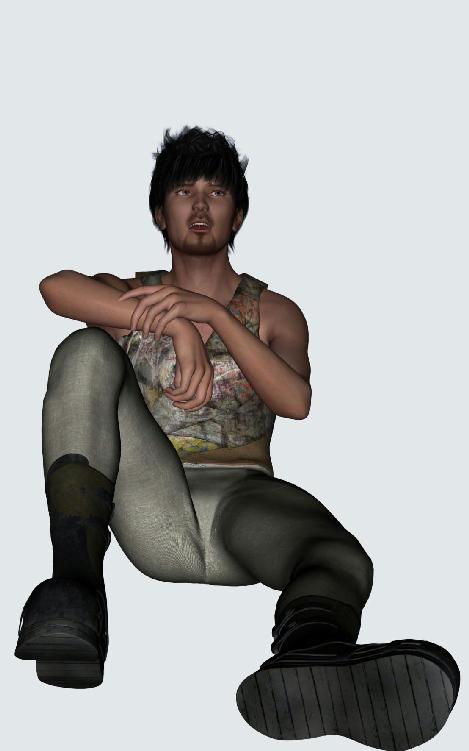
アザミがその男と知り会ったのは、仮想社会を覗くようになってすぐだったそうだ。彼女にとっては幸運な出来事だったのかもしれない。現実世界で異性と親しくなる機会の少ない者にとって、ここは見知らぬ男性と知り合う絶好の場所でもあったのだから。
もちろん最初からそれが目当てでこの仮想社会へ参加したのではなく、ただなんとなく面白そうかなと思う程度だったらしい。大多数の人々の場合と同じように、ふと何かのメディアで目にしたか、それとも誰かの口コミで迷い込んでしまうのが普通だ。
中を見てつまらなければもうそれきりにすればいいし、評判どおりなら時間つぶしをかねてぶらぶらとしばらくの間見物する。どちらにせよ無料だし、個人情報は登録しなければいい。唯一気をつけなければならないＥメールアドレスでさえ、インターネットで探せば無料の捨てメールをいくつでも簡単に入手できるのだから。
インしたばかりの初心者がまずすることは、この世界をあちこち見て回ることだろうか。なにしろ現実の世界を模倣しているとはいえ少しずつずれた新天地だから、とにかく目に見えるものすべてが珍しい。
最初のうちはキャラクタの操作でとまどうことも多いのだが、それは時間が解決してくれる。自由に動けないもどかしさも我慢しているうちに慣れてくるものだ。問題は物見遊山に飽きてくるまでに、何か熱中できるものを見つけられるかどうかにかかっている。
アザミが幸運だった（のか、それとも不幸だった）のは、仮想社会の物珍しさに慣れ、次に何をすべきか分からなくなった頃、その男に会えたことだった。
暇つぶしのつもりで迷い込んだ仮想社会も、普段の自分とは別人になれる願ってもない場所だ。出会い系の代わりになるかどうかは別として、現実世界に影響を及ぼすほど貴重な出会いもごく稀にあるのは事実。ネットで知り合ってネットの中で結婚、そのまま現実世界で一緒に暮らし始める例が実際にいくつもある。
ＭＭＯＲＰＧの場合はモンスターを狩って自己のレベルなりステイタスを上げるという大目標があるのだが、仮想社会の場合は特にない。強いてあげるならビジネスによって金儲けをすることだが、実際そんな才能を持っている者はほとんどいない。だからコミューンを頼って人脈を広げ、友人を増やすことがとりあえずの目標となる。
しかしアザミは外交的な性格ではなく、どちらかといえば人付き合いを得意とする方ではなかった。当たり前だ、外交的な性格であれば、ネットでなくとも現実世界で人付き合いをすれば良いのだから。携帯電話でメールを交換するなり、そのほうが早いし分かりやすい。それを選ばなかったのは、ネットにたむろする大部分の人たちがそうであるように、彼女もまた内向的な性格の持ち主だったからだ。
仮想社会においてビジネスの才能もなくクリエイティブな才能もないごく普通の人間は、やがてこの世界に飽きて去っていく。いや、飽きたというのは嘘だろう。むしろ仮想社会でさえなじめなかったという喪失感を伴い、いつの間にか消えていくといった方が正解かもしれない。現実世界に適応できない者が、仮想社会でさえ適応できないことに気づかされるのはひどく残酷な話だ。
アザミの場合もそうだった。仮想社会は目標が曖昧なだけに、この世界で何をすればいいのだろうという問いは、そのまま現実的な重みを持ってやがては本人の内面に重く跳ね返ってくる。現実世界で生きる目標を見いだせず、仮想社会でさえそれを発見できなかった。その重い現実にアザミの心が砕けそうになったとき、その男が現れたのだ。
男の名前はリュウ０３といった。一昔前のビジュアル系ファッションに流行のあごひげを薄く伸ばしている。若いような若くないような、かっこいいようなかっこ悪いような微妙な外見。ひょろ長く痩せた見た目に幸い暴力的な雰囲気はなく、柔和な顔が話しやすそうな印象だ。
あとから知ったのだが、リュウというネームはもう他の誰かがつけていたらしく、最初ははじかれてしまったそうだ。ネームは仮想社会での個人識別記号だから、まったく同じものが存在する場合はコンピューターに登録を拒否される。リュウというありがちでかつ短い名前は誰でも思いつくので、やはり早い者勝ちになってしまうのだ。ところが試しに名前の後ろへ番号をつけてみたら、今度は一発で登録できたらしい。
「０３はオッサンの略だよ」
穏やかな冗談がアザミの好みだった。
リュウは自分で作ったＴシャツやネックレスなどの小物類を道端に広げ、露天商をしていた。この仮想社会において、ポリゴンを使ったバーチャルグッズは誰でも無料で作成できる。やりかたさえ知っていれば比較的簡単に作れるから、Ｔシャツなどのアイテムは逆に売れない。誰でも作れるものを買う奴はいないだろうからだ。
ただアザミの足を止めさせたのは、そのＴシャツの絵柄が予想外に可愛かったからだった。フリーのお絵かきソフトで適当に描きなぐっただけの子ブタが一匹、Ｔシャツのお腹にちょこんと乗っかっている。どことなく寂しげなのは、Ｔシャツのサイズと絵柄の大きさや位置関係が適正でないせいだった。素人が見よう見まねでこさえた代物なのは一目瞭然。
絵柄だけは変に垢抜けており、どこかで見たような気もするが、これほど単純化されていてはコピーもオリジナルも意味をなさない。
仮想社会の気安さで、現実世界ならいつもは足早に通り過ぎる露天ショップの脇に立ち止まり、じっとそれに見入ってしまった。そこへタイミングよく、ごく自然な調子でリュウが話しかけてきたのだ。
「どれでも二ゴルトだよ。たった二ゴルト」
アザミはいきなり話しかけられて驚いたが、仮想キャラならばこちらの動揺も相手には知られない。それで思い切ってキーボードを叩いてみたのだ。
「可愛い子ブタちゃんですね。でもお金持ってないから」
それで話はおしまいになるかと思いきや、男は意外なことを口にした。
「じゃあタダであげるよ。本当ならＦＲＥＥで並べといてもいいんだけど、それじゃ安っぽくなっちゃうからさ」
気前のいい話だが、知り合ったばかりの人から売り物をもらうのは悪い気がする。それでアザミはていねいに断った。
「でも遠慮しときます。ごめんね」
「着てくれれば店の宣伝になるんだけどな、残念」
リュウの言葉はそれほど嘘でもないだろう。子ブタの横にアクセサリーショップリュウ０３のロゴがあるから、確かに宣伝にはなる。現実世界でもそうだが、Ｔシャツは歩く広告塔だ。アザミが着て宣伝効果を発揮できるかどうかの問題はあるけれど。
「だけどもしお金ができたらまた寄ってよ。二ゴルトなんて一踊りで稼げるんだからさ」
アザミはふとその言葉に興味を引かれた。一踊りで稼げるってどういう意味なんだろうと、少し気になったのだ。それでアザミは仮想キャラの気安さで、その言葉の意味を聞いてみた。
「あの、踊りで稼ぐって......」
「ああ、やっぱり初心者さん？ 服がデフォルトだからひょっとしてと思ったけど」
アザミは自分の衣服を眺めてみた。地味な緑色のブラウスに黒いミニのスカート。確かにキャラクタを最初に作ったときのままなのだ。これでは新規参入の初期キャラだと一目で分かってしまうのも無理はない。
「アルバイトって知ってる？」
リュウの問いかけに、アザミはいいえと素直に答えた。
「ここの通貨は公式サイトで買えるんだけど、アルバイトして稼ぐって方法もあるんだ。ちょっと根気がいるんだけどさ」
ゴルトと呼ばれる仮想通貨を得るには、商売をする他に二通りあるのだそうだ。普通に知られているのは現実世界の円をインターネットで振込み、ＲＭＴによってゴルトを得る方法。これは仮想社会ドゥームゲートへの入場方法を確認したときに、アザミも公式サイトで読んでいる。
ところがもっと手軽な方法があるとリュウは教えてくれた。それがアルバイトと呼ばれるものらしい。
「アルバイトって、何をするんですか？」
「いろいろあるけど、やっぱり一番簡単なのは踊ることかな」
「踊る？」
さっぱり要領を得ないアザミに、リュウは要領よく説明してくれた。たとえばカジノセンターにいくつかあるダンスパッド、まずはそれを探すのだそうだ。
「ダンスパッドの使い方は簡単。床の上に丸い円盤が置いてあるから、空いてるところをみつけて乗っかればいい。それだけでプログラムがスタートし、キャラが勝手に踊りだす。あとはほおっておくだけでＯＫ。自動的にゴルトがキャラのインベントリに振り込まれるから」
アザミは驚いた。そういえば最初にあちこち見て回ったとき、集まって踊り狂っている人たちがたくさんいた。好きで踊っているとばかり思っていたのだが、あれはお金を稼いでいたのだ。
「もっとも十分とか十五分で、やっと一ゴルトか二ゴルトにしかならないから、あんまり効率的ではないんだけどね。カジノに初心者を集めるための宣伝かな」
現実世界と同じく、いわゆる人寄せのサクラになるのだろう。寂れた場所に人は集まらないし、アルバイトで稼いだ通貨はそのままカジノで使ってもらえるから店側の損にはならない。
それにギャンブルは中毒性が高いから、一度遊びにはめてしまえば今度は本格的なＲＭＴをしてカジノ通いをしてくれる人が必ず出てくるらしい。カジノセンターのダンスパッドはギャンブル中毒者を作るための呼び水（嫌な言い方をすればエサ）にもなるのだ。
「だから注意しなきゃならないんだけど、でもちょっとだけ遊ぶには便利なんだよね、アルバイトは」
へえとアザミは感心した。
「ほら、すぐそこにもあるから、行ってみなよ」
リュウは言いざま、すうっと地面から浮かび上がった。仮想社会だから移動方法は地面を歩くだけではない。検索エンジンを使ってテレポート（瞬間移動）という手段もあるのだが、目的の場所が近くの場合は空中を飛ぶという選択肢もある。
アザミも遅れて飛び上がると、空中のリュウがすぐそばの斜め下を指差している。視線をやれば二、三軒隣がかなり大規模なカジノセンターだった。特有のイルミネーションが派手な光彩を放っているから分かりやすい。
「飛行禁止区域じゃないから、このまま飛んでっちゃいな。よかったら帰りにまた店に寄ってって。どれでも二ゴルトだからさ」
リュウは浮かんでいるアザミを横目で見て、器用にウィンクしてみせた。いささかマンガチックなポリゴンキャラなのに、妙に人間味のある仕草がおかしかった。
「それと、ギャンブルには気をつけなよ。あれはプログラムで確率調整してるから、まず勝てない。でなきゃ店側がもうからないからね」
じゃねと、リュウはあっさりとアザミのそばを離れた。アザミはあわてて礼を言うと、そのまま下方へ沈んでいく彼を見送った。ごちゃごちゃと建ち並んだビル群の隙間へリュウの姿が小さくなっていく。
ひょっとしてリュウ自身もカジノのおこぼれ目当てにグッズを売っているのではないかしらとも思ったが、それは意地の悪い見方なのかもしれない。アザミはしばらく空中に浮かんだまま、さてどうしようかと考えた。
この辺りの区域は比較的人通りの多い繁華街で、眼下の町並みはファッションタウンのような有様を呈している。現実世界で国際的に有名なブランドも、アパレルやデザインの業界にかかわらず多数集まっているのが特徴だ。
たとえばカジノセンターの右手、派手なネオンの光に負けまいとレーザー光線を空へ打ち上げるガラス張りのビルは、パリや日本で圧倒的なネームヴァリューを誇る女性向けファッションブランドの某社だ。
店内へ入れば写真と実写動画でバッグやドレスの見本を示してくれる。もちろんポリゴンで作られた製品を仮想キャラが手にとることもできるし、それを仮想グッズとして買うこともできる。だがそれ以上に旨みのあるのが現実世界での現物売買だ。
実際の現物商品を仮想グッズとリンクさせる。現物商品の受け渡しは、インターネットショッピングでおなじみの通販機能と直結させればいい。それだけで立派な店舗運営が成り立つ。いわゆるバーチャルモールだ。決済はクレジットカードや電子マネーを使えばいいし、なんならドゥームゲートの仮想通過ゴルトをそのまま使ってもいいのだから。
そしてそれが可能ならば、商品はファッショングッズだけとは限らない。たとえば左手にあるのは某巨大自動車会社のアンテナショップだ。
広大な仮想土地を買い占め、試乗用のサーキット会場まで保持している。イベントとして定期的にレースを開催し、にわかレースドライヴァーを募る。仮想キャラが運転するボリゴンカーは、もちろん現実世界の最新自動車と瓜二つだ。ポリゴンだけに少し造形が荒いが、細かい部分は写真や動画でいくらでも補うことができる。このあたりの精度は訪れる客側のパソコンスペックに依存するから難しいところだ。
実際に自動車のような高額商品が売買成立するかはともかくとして、強烈な宣伝効果なら間違いなく持っている。実写版のレースゲームやカーシミュレーションとリンクさせれば、そのリアルさはもはや暇つぶしの域を超えてしまう。いや、暇つぶしでもかまわない、宣伝なのだから。一瞬でもそこからビジネスチャンスが生まれさえすれば、それで大成功なのだ。
アザミは普通のＯＬだったから、もちろんその時点でそんなことは考えなかった。有名ブランドの看板があちこちにいくつも輝いているのを眺めて、仮想社会も意外と発展しているのだなあと少しだけ思った程度だ。
せっかく教えてもらったのだから、とりあえずアルバイトをやってみようかと考え、ふらふらとカジノセンターの派手なネオンの方向へ飛んでいった。土地の所有者が飛行禁止区域に設定してあると正面玄関からしか入れなかったりするものだが、娯楽施設はオープンが普通だから入り口を捜してうろうろするようなことはなかった。
センターの上空から広場の適当な場所へ降下して周囲を眺め回すと、無数のギャンブルマシンが壁のように並んでいる。スロットマシンがメインだが、ポーカーやブラックジャック等のカードゲームも少しまじっているみたいだ。この辺の感覚も実際のカジノと似ており、コインを数枚入れるだけで結果がすぐ出るスロットは、やはりギャンブルの主役だ。
目的のダンスパッドは人が踊っているのですぐ分かった。スロットマシンのそばに丸いお盆のような盛り上がりがいくつもあり、ほとんどは誰かが踊っている。皆仮想キャラだから不必要なアイテムやタトゥーで全身を飾り立て、仮装大会のような有様になっている。
アザミは現実世界なら間違いなく入っていくのをためらうような妖しげな場所へ、仮想キャラの気安さで進んでいった。誰かから話しかけられたらどうしようとも思ったが、特にそんな人もおらず、皆踊りに夢中だ。
隅の一つが空いているのをやっと見つけて、その上へ乗った。すると自動的に自分の体が動き出し、勝手なダンスを始めた。曲に合わせて全身がくねくねとのたうち始める。現実世界なら腰の骨が外れてしまいそうなアクロバティックなダンスも、仮想キャラなら自由自在なのだ。
最初はあっけにとられた自分の動きに慣れてくると、今度は逆にそれが楽しく感じられてくる。不思議だ。若い世代なら現実世界で踊っていた方が楽しいのだろうけど、もうそれほど若くないアザミにとっては意外な発見になった。
周囲に群れて同じように踊り狂っている大勢の人たちも、アルバイトという理由だけではないのかもしれない。皆と同じことをしているのだという奇妙な安心感が発生し、全身が周囲の人たちとの一体感に包まれる。現実世界での熱い高揚感にはとても及ばないけど、そのぶん気軽な楽しさがあるのは事実だ。
生身の人間の群れに生理的な嫌悪感を持つアザミにとって、ひょっとしてここは理想郷なのではと、ふと思ってしまったくらいに楽しい。もし何か失敗してこの世界が嫌になったら、今の仮想キャラを捨てていつでも別人になれるのだから。
何をやっても許されるし、たとえ危険な目や恐い目に会っても、インターネットの接続を切ってしまえばそれっきり。夜の繁華街で見知らぬ人に混じって踊り狂う、現実世界ならそんなこと内気なアザミには到底できないし、仮にできたとしてもこの歳で今さらやりたいとも思わない。だけどこの仮想社会では本当の自分をまったく知られず、簡単に、思うさま、いつまでも楽しみに溺れることができる。
たかがアルバイトにそこまで考える必要はないのだが、この世界ではごくあたりまえのことに今さらながら気づいたアザミは、妙に嬉しくなってしまった。一種の開放感だろうか。それでアザミは十分間だけ踊って得た仮想通貨二ゴルトを持って、もう一度リュウの露店を訪ねたのだ。少し幸せな気分で。
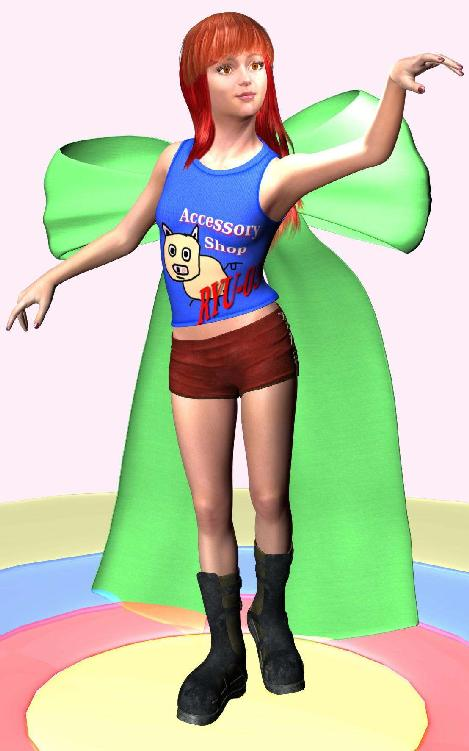
リュウから買った子ブタのＴシャツはアザミのお気に入りになった。間近でよく見ればブタの鼻の穴が片方破けているのだが、リュウに言わせるとそれはデザインなのだそうだ。
「ほら、ジーパン破いたりするだろ？」
確かにそれはあるけども、破いたＴシャツというのはアリなのだろうか。流行のファッションにうといアザミには理解不能で首を傾げたが、よく考えればポリゴンのＴシャツが自然に破けるわけもなく、それはやはりわざとなのだ。布地にあたるポリゴンが欠けているのではなく、色柄を決めるために張りつけてあるテクスチャの一部に透明色を使っているのだとリュウは言う。
おへそが覗くようにしてあるのかとも思ったがそれも違うし、リュウの考えていることはよく分からないのだけど、実際に着てみてからなんとなくアザミは納得した。下に着ている服の色や肌の色がワンポイントで浮かび上がり、面白いといえなくもない。正直、素人に最先端のファッション感覚は謎だ。
いっぽうカジノセンターへもあれから何度か通った。スロットマシンはリュウの教えてくれたとおり大当たりもなく、たまに小当たりがする程度で、その小銭すらも次の勝負に連敗してすぐマシンに回収されてしまう。
どうもアザミにはギャンブルの才能はないようで、カジノ通いはしばらくして飽きてしまった。そのかわりダンスのアルバイトはこまめに繰り返して、稼いだ小銭は必ずリュウのところへ持っていった。
露店に並べてあるバーチャルグッズはどれも二ゴルト。ポリゴンだから原材料は無料だし、Ｔシャツなんて他人が作ったものをコピーして、それにいたずら書きのような絵を描くだけだから実質的にはタダだ。リュウにとって損な商売ではない。
もっともこの仮想社会での二ゴルトを現実世界の円に換算すると、レートの微妙な変動はあるとしても、約二円にしかならない。Ｔシャツ一枚の売値が二円......。
たった二円では少なすぎるのではと、アザミは言ってみた。
「もう少し高くしても売れるんじゃないかしら」
リュウは嬉しそうな仕草を一瞬だけ見せてくれたが、それは論外とでもいうようにすぐ首を横へふった。
「実際に商売をやってみると分かるんだけど、意外と売れないんだ。ポリゴンのＴシャツじゃあ、たった二ゴルトでも払ってくれない」
「どうして？ かわいいデザインなら、もう少し高くても買ってくれると思うけど」
「うん、多くの人に気に入られるような、新しいデザインを次々と描ければね。だけど問題はさ、デザインの良し悪しじゃなくて、コピーの問題なんだな」
コピーの問題といわれて、アザミは頭の中にハテナマークが浮かんだ。リュウは暇つぶしに説明してあげるよといった感じで、もう少していねいに教えてくれる。
「この仮想社会ではさ、気に入った品物があれば即座にコピーできるんだよね。コピーできないようにプロテクト（保護）を掛けることもできるんだけど、Ｔシャツみたいに単純なものは見よう見まねで簡単に作り直すことができるだろ。デザインだって模写すればいいだけだし。それでプロテクトの有無にかかわらず、売れるほど人気のある商品は簡単にニセモノが出回ってしまうんだ」
なるほどとアザミは思った。現実世界の偽ブランドや海賊版グッズの氾濫と同じ問題が、この仮想社会でも発生しているのだ。しかも現実世界のニセモノは製造にそれなりの手間がかかるのに、仮想社会ではもっと手軽にパソコンだけでできるから、誰でも思いつきで簡単にやってしまえる。著作権保護のあいまいな、海賊版出回り放題の世界なのだ。
「人気がなければマネされないんだけど、人気がないってことは売れないってことだから、それじゃ意味ないよね。つまり高くしても売れる商品ならすぐに無断コピーが出回ってしまうし、高くして売れない商品は値段を下げざるをえない。Ｔシャツやアクセサリなんかの誰でも作れる小物を売るには、結局アルバイトで稼げる程度の捨て値にしなきゃならないってわけ」
それで二ゴルトなのだそうだ。
「じゃあ逆に、アルバイトの値段を上げてくれればいいんだわ」
アザミの安直な言葉にリュウは微笑した。
「アルバイト料は店側の持ち出しだから、どこもそんなに払ってくれないよ。ちょっと安すぎるとは思うけどね」
アザミのアルバイトは十分で二ゴルトだったから、時給に換算すると六十分六倍で二×六＝十二ゴルト。一ゴルトにつき約一円のレートだと、つまり現実世界のお金に換算すれば約十二円......。
自分は時給十二円のアルバイトをしていたのだと気づいて、アザミは少し驚いた。いくらなんでもこれは少し安すぎるのでは？
遅まきながら憤慨するアザミに、リュウは派手なポーズで笑ってみせた。マンガチックにお腹を抱えている。
「あのアルバイトはさ、ダンスパッドにキャラを乗っけとけば、あとはほったらかしでＯＫだろ。だから十二円でも多いくらいだな」
よく考えてみればそれもそうだった。普通の人はキャラが踊っている間、パソコンの前を離れて違うことをしているのだ。それとも画面上に別のウィンドウを呼び出して、違う作業をしているのかもしれない。ダンスしている自分のキャラをパソコンの前でじっと見ていたのはアザミぐらいなものだろう。間抜けな話だ。
「ちなみに時給十二円でも、単純計算すると一年間でちょっとした金額になるよ。やってみたら？」
十二円×二十四時間×三百六十五日＝十万五千百二十円。
年間約十万五千円。
パソコンの前で電卓片手に計算したアザミはその数字にへえと感心したが、よく考えればダンスパッドには同一キャラに占領させないための時間制限がかかっているし、不慮の回線落ちや仮想社会全体のサーバーメンテナンスがしょっちゅうあるので、とても計算どおりにはいきそうにない。
中断のたびにアルバイトを再設定しなければならないでは、寝る間を惜しんでモニターの前につきっきりでも、得るお金はけっきょく年間十万円以下。パソコンの電気代と比べればプラスなんだろうけども、割のいい現実的なバイトとは到底いえないわけだ。ひとことで表現すれば時間の無駄。
なんとなくがっかりしたアザミに、リュウはお気の毒といった表情を浮かべてくれる。下がった眉毛とすくめた肩が大袈裟で、妙に愛嬌のあるリアクションだ。なによりそのタイミングのよさに、アザミは思わず笑ってしまった。
普通のキャラはあまり身振り手振りはせず言葉のやりとりがせいぜいなのに、リュウはこまめに全身のアクションをまじえてくれる。キャラの仕草や表情はソーシャルアクションコマンドを実行すればいいのだが、操作に慣れていないと自由自在には使えない。リュウを操っているプレイヤーはかなり古参の人らしい。
キャラの動作自体はアニメっぽい動きでぎこちないのだが、適用するタイミングがここまで自然だと、まるでリュウという生身の人間がわざとぎこちないパントマイムを演じているようだ。売れないけど愛嬌だけはある大根役者、それがリュウに対するアザミのイメージだった。もちろん良い意味での。
リュウと知り合いになってから、アザミは現実世界での余暇のほとんどを仮想社会ですごすようになった。高校を卒業してから派遣社員と同じような立場の勤め先で日中を過ごし、夕方自宅へ帰ると食事も早々にシャワーを浴びて、そのあとは寝るまでパソコンの前に座り込む。
親と同居だからわずらわしい家事は一切母親に任せて、休みの日に掃除や洗濯を少し手伝う程度だ。たまに外へ遊びに出て、あとはやっぱりパソコンの前。
その分、仮想社会での遊び方をアザミはかなり詳しく知ることができた。教師はもちろんリュウだ。ポリゴンを加工してＴシャツやアクセサリを作る方法も彼に教えてもらった。まねをして作ったグッズを全部二ゴルトの値札をつけて展示すると、ごくたまに買ってくれる人がいる。
そばにカジノセンターがあって、ダンスパッドのアルバイトで手に入る値段というのがポイントらしい。客自体はそこそこ来るのだけれど、実際にお金を落としてくれる客はあまりいなくて、たまにアザミのような顔見知りが寄って、立ち話していくついでにお愛想で何かを買っていく程度だから、あまり実入りはないらしい。
実際にどれだけ売れているのかはアザミには分からない。露店に並べてあるのは見本だし、売買計算や売り上げの記録はプログラム的に隠されていて、店主のリュウしか確認できないからだ。
リュウによればアクセサリグッズの新作が日に数個売れればいいほうだそうだ。二ゴルトの商品が数個では、多くても十ゴルト、つまり一日で約十円ぽっち。それだと露店をしているよりもカジノで踊っていたほうが早いのではないか。
だけどとアザミは思い直す。
やはりまねごととはいえ商売をしている充実感は大きい。しかも売買は自動だから、売主がそばにいてもいなくても関係ないし、ほったらかしておいても万引きされる心配はない。商品には一応プロテクトをかけてあるので安直なコピー商品を作るふとどき者もいない。安物の海賊版を作っても、もうからないから無駄なのだ。たった二ゴルトでは......。
「ねえ、私もお店を始めようかしら」
アザミはある日思い切って言ってみた。
「商品の作り方も覚えたし、売買のマクロプログラムの組み方も教えてもらったから、どこかこの近くでもう一軒お店を開いてみようかと思うの。もう少し値段を高めにして」
リュウはそらきたかという顔をしてみせた。
「もっとおしゃれな店のほうがいいってコト？」
ううん、そうじゃなくてとアザミは言い訳した。
「このお店でもおしゃれだと思うけど、でも二ゴルトじゃあ、これじゃせっかくリュウがセンスのいい商品を作っても、安物扱いされちゃうじゃない。あんまりだわ」
リュウはしばらく無言でじっとしていた。リュウにしては珍しくリアクションを返してくれない。機嫌を損ねたかしらとアザミは内心焦った。Ｔシャツやアクセサリのデザインにケチをつけたつもりはないが、露店での商売自体をけなしてしまったのかもしれない。
リュウの気分を悪くしてしまった。でもそれはアザミにとって承知の上だった。今のままでは日に十ゴルトの売り上げがあれば多いほう。十ゴルト＝約十円だから、これではいつまでたってもおままごとだ。しょせん遊びではいつか飽きる。リュウが実世界で何をしているのかは知らないけれど、アザミはもう社会人だ。いつまでも遊んでいるわけにはいかなかった。
無理をしてでもこの世界で商売をして、現実世界のせめてアルバイト並みの円を稼がないと、いつかこの仮想社会と決別しなければならなくなる。遊びを遊びと割り切れる余裕をアザミは持っていなかっただけなのかもしれない。それとも夢見がちで世間知らずな若い女性が例によって無茶をしようと勇み足してしまったのかもしれない。だけどリュウのためにも、もう少しなんとかしてあげられないかとアザミは思ったのだ。
リュウの才能とアザミの努力で、もう少しだけ立派なお店を繁盛させられないだろうか、ここがたとえお遊びの仮想社会であったとしても、もう少し、もう少しだけまともな商売にできないのか。アザミは本気でそう思ったのだ。善意で、そしてリュウのために。
リュウはちょっと考えさせてよとつぶやいたきり、黙った。アザミはなんとなく居心地の悪さを感じてそれ以上の言葉を遠慮した。今日は時間をおいて、また明日聞いてみようかと思ったとき、やっとリュウは口を開いてくれた。
「新しい店を開くとなると、まず考えなきゃならないのは場所だね」
「場所って、最初はこの近くの露店でかまわないんだけど......」
「いや、店を開くにはたとえ露店でも、場所を借りるか土地を買うかしないとさ」
そんな規則があることをアザミは初めて聞いた。
「え、じゃあここは？」
「もちろん借りてるのさ、月五百ゴルト。ここらはカジノの近くだから、ちょっと高めだけど」
アザミは少し驚いた。適当な場所で勝手に店を開いてるのかと思ってたら、そうではなかったのだ。
「公共の場所を占有するのはルール違反だから、まとまった土地を買うか借りるかしないとね」
道端や公園等で勝手に店を作ると仮想社会を管理するＧＭ（ゲームマスター）に強制排除されてしまうらしい。リュウの店は露店といっても本当の露店ではなく、建屋を省略しただけのオープンスペースふう正式ショップだったのだ。
それにしても賃貸料が月五百ゴルトは少し高いような気がする。いくらカジノの近くで立地条件がよくてもだ。だいいち露店の売り上げはそんなにあったろうか？
「だからさ、足りない分は僕もバイトしてたから。そこのカジノで。月末はほとんど踊ってたんだよ」
それでカジノのそばだったのか。アザミはパソコンの前で思わず笑ってしまった。これじゃやっぱりまともな商売にはなっていない。場所代だけで足が出てしまうのだ。思いがけない裏話にひとしきり笑ったあと、アザミは逆にがっかりした。月ごとに売り上げマイナス五百ゴルトからの出発では、とてもじゃないが成功はおぼつかない。
「でも大丈夫」
リュウは軽く言う。なにやら自身ありげな様子だ。こういうときのリュウは頼もしい感じがする。錯覚かもしれないけど。
「君はさあ、まだ課金してないだろ」
「課金？ 有料会員かってこと？」
「そう、普通は無料会員なんだけど、有料会員になると、一定量の土地を買う権利を与えられるんだ」
アザミは公式サイトで読んだ内容を思い出した。この仮想社会ドゥームゲートへ入場するには無料でかまわない。ただし本格的にこの社会の一員になるには、有料会員の登録をしたほうが生活しやすい。数々のプレミアや特権が与えられて、商売をするのにも有利になると書かれてあった。それのことだろうか。
「でも有料会員って、高いんじゃない？」
「最低ランクの有料会員で、月々千円から。高いか安いかは本人しだいだね。リアルで月刊誌買ったって、一冊千円以上するだろ」
確かにそうだ。現実世界において趣味の費用が毎月千円程度なら、むしろ安上がりかもしれない。
「それで、有料会員になると地主になれるんだ」
「土地がただでもらえるの？」
「いや、一定区画分の土地を買う権利を与えられるだけ。権利だけだから、土地そのものはまた別にゴルトを使って買わなきゃならない。土地は定期的にゲーム運営会社のＤＧＪが放出してくれるんだけど、なかなかないし、結局は誰かから買うことになるのかな」
ふうんとアザミは思った。
「いくらなんですか？」
「新規放出なら一㎡あたり十ゴルト。そのレートで最大千㎡まで買える。それなりの店舗を作りたいなら、権利分千㎡目一杯買わなきゃならないだろうけど」
アザミは暗算してみた。十ゴルトかける千㎡だから、イコール一万ゴルト。リュウの売り上げが一日十ゴルトだから、一万ゴルト稼ぐには千日かかる計算になる。元をとるには三年近く必要なのだ。
「そんなの絶対無理だわ」
愕然と脱力したアザミにリュウはさらりと答える。
「だからＲＭＴになるのさ」
ああそうか、アザミはやっとＲＭＴ（リアルマネートレード）の意味に気づいた。一万ゴルトだから、つまり一万円をゲーム運営会社に振り込んで仮想通貨を買うのだ。百人がただ見をしても、一人がこの仮想社会に興味を示してくれれば、運営元には万単位でお金が振り込まれる。
「しかもその土地を維持するには有料会員であり続けなきゃならないから、ＤＧＪは月々の会費も手に入るってわけ」
仮想社会全体での土地は膨大な量になる。なにしろ仮想なのだから理論的には無限。無限の仮想土地代がＤＧＪ（ドゥームゲートジャパン）という名の運営会社に振り込まれるのだ。実際にはサーバー容量やメンテナンスの都合があるから、おのずと上限はあるのだろうけども。
「土地を買ったあとで、有料会員をやめちゃったら？」
「没収さ。強制的に取り上げて、また新しい有料会員に売られる。やめる前に新しい買い手をみつけて売ればいいんだけどね」
とするとうまく買値で売れれば土地代は損にならないのだ。
「年会費が一万二千円だから、初期投資一万円はそんなに法外な金額じゃない。やめるときに売れさえすれば、お金は戻ってくるだろうしさ。だけど問題は土地の場所なんだ」
場所？
「新規放出地は辺境の場合が多いから、あまり人が来ない。そばにカジノセンターや大規模なショッピングモールが都合よく建ってくれればいいんだけど、なかなかそうはいかないし」
焦っておかしな場所を買ってしまうと、売るときにも一苦労するらしい。買い叩かれて元の値段で引き取ってもらえないので、大損なのだそうだ。
「それで結局、新規放出分はあきらめて、かわりに他の有料会員からあまった土地を売ってもらうことになる。最高ランクの有料会員だともっと土地を持てるんだけど、ビルでも建てるつもりがなけりゃほっぽらかしだから、そいつを交渉して分けてもらうのさ」
「十ゴルトで？」
リュウは首を横へふった。
「いいや、新規放出でない場合はそれなりの相場があるんだ。リアルの土地売買と同じで、場所によって値段に開きがある。それに最近は値上がりしてるから、人気の場所はびっくりするほどの値段になってる」
「いくら？」
軽い気持ちでアザミは聞いてみた。せいぜい二～三倍だろうか。
「高いと一㎡あたり一万ゴルト」
アザミは絶句した。十ゴルトの千倍。キーボードを叩く手も自然と止まる。新規放出だと十ゴルトが、千倍の一万ゴルトになっているのだ。
「仮想土地バブルってわけ」
リュウも苦笑いしている。
「でもそれじゃあ......」
「最高ランクの有料会員が、最初に一万㎡を十万円だしてＲＭＴしたとする。それが今では計算上一億ゴルトになっている。驚くだろ、ＲＭＴで売り払えば約一億円だ」
現実のお金で一億円とは、いくらなんでも仮想の土地でそれはありえない。アザミは自分の耳を疑った。どこから現実世界の話になり、どこまで仮想社会の話だったのか、頭の中が混乱してしまった。
「もちろんそれは計算上最高の場合で、そんなにもうけた人が実際にいるのかどうかは分からない。バブルが始まる前に、一万㎡の仮想土地に十万円出す人もいなかったろうからさ。土地っていってもインターネットの中だけに存在する仮想データなんだよ？ 上級ランクの有料会員だと、維持するための年会費も十万円超えちゃうし」
アザミはそれもそうだと少しほっとした。競馬で万馬券が出たときの話と同じだ。どこかの誰かが確かに得をしたんだろうけど、それは自分とは遠いところにある噂の類だった。
「だけど有名ショップや代表的な繁華街のそばなら、実際にそんな値段がついてる。これは個人だと購入はもう無理な金額だけど、法人なら売買可能だからさ」
法人というのはつまり現実世界の企業や会社組織等のことだ。
「逆にいうと法人が参入してきたからこそのバブルなのかもしれない。リアルと同じでたとえ相手が遊びの世界でも、宣伝媒体になると考えれば、彼らは資本力にものをいわせて無茶をしてくる」
個人でゲームに一億円は出せないが、大企業なら確かに何十億円でも出してきそうだ。そこにビジネスとして収益を産む可能性がありさえすれば、一種の宣伝になりうると考えて。
「よりによってこんなところで次のバブルが始まったのかなとは思ったけど、大企業が参入すればそれだけ仮想社会は繁栄するから、それほど文句を言う筋合いでもないよね。人の往来も多くなるし、僕ら個人商店もその分おこぼれでうるおうし。遊びの世界に本気が顔を出しちゃうと、ちょっと興ざめになるけどさ」
リュウは首をすくめた。
「ま、いずれにせよ、土地取得のコツはとにかく辛抱強く待つことかな。新規放出で安く手に入る瞬間をタイミングよくみつけて、素早くそこを買い取る。あとはそのそばに有名メーカーのショップやカジノセンターができるのを祈るだけ。人が集まりやすい環境なら商売も繁盛するかもしれないし、運がよければ土地が値上がりして大儲けできるかもしれない」
それじゃまるで土地ころがしでもうけようとする悪徳不動産屋みたいだわとアザミは思った。アザミとしては土地やお金が欲しいんじゃなくて、純粋にリュウのＴシャツをもっと広く売り出したかっただけなのに......。
ため息をついて、その日はリュウと別れた。仮想社会でも商売をするには意外と元手がかかるのだ。
しかも無理に店を持ってもうまく経営していけそうにない。リュウの商売ははっきりいってカジノセンターのご近所だから成り立っているのだろう。借りた土地代を払うだけで足が出てしまうでは、やっぱりお遊びの世界にしかならないのが実情だったのだ。
ところがその日は予想外に早くやってきた。
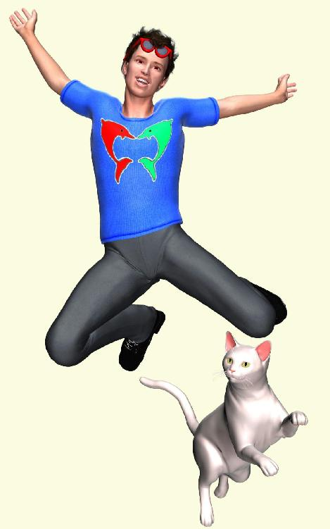
アザミがいつものようにカジノのダンスパッドで踊っていると、通路の向こうからリュウが息せき切って走ってきたのだ。別に息せき切ったソーシャルアクションをしているわけではなかったけれども、わざわざ地面を走り回って、小刻みに方向を変えながら早足でうろうろと誰かを探している姿は、普段の泰然自若としたリュウの姿とは違って見えた。
どうしたのと、踊りながらアザミは声をかけた。キーボードからＨｉと文字を入力しただけだが。
「あ、いたいた、アザミちゃん、いい話を持ってきたよ」
いい話ってなにかしらとアザミはダンスを強制的に中断した。背中にしょってる蝶々の羽が邪魔で、アザミは画面を回転させてリュウの痩せた顔をクローズアップした。最近のリュウは茶色に染めたあごひげをそって、かわりにサングラスをかけている。着ているＴシャツはおそろいのマリンブルーで、つるつるの原色イルカが二匹仲良くたわむれている。もちろんリュウのデザインだ。
「売りが出そうだ、格安物件。しかも悪くない場所」
へえとアザミは思っただけだ。あれからアザミもインターネットで情報収集したのだが、仮想社会の土地バブルは凄くて、個人がＲＭＴで手に入るような状況ではないらしい。
新規放出ならば可能だが、それは周囲の土地を誰が買うかの賭けになってしまうし、いったん購入すると有料会員であり続けなければならないから、維持費を毎月払い続けなければならない。それでアザミなりにいろいろ考えて、いつの間にかお店を持つ夢はあきらめてしまったのだ。
たまに立ち寄ってリュウとおしゃべりし、少しだけグッズを買っていく。それで十分な気分になっていた。だから今さらリュウからそんなことを言われても、いきなりで言葉が出てこない。
リュウは二人だけの会話モードに切り替えて、他人には盗み聞きされないようにした。文字の色が白から赤になったのですぐ分かる。
「古くからいる大地主がリアルの大企業から土地を売らないかって話を持ちかけられて、それで承諾したらしいんだ。物凄い金額だったらしいんだけど、具体的にいくらだったかは教えてくれなかったからおいといて、それより重要なのは、彼がまとめて売り払った土地とは別に、半端な飛び地を持っていたらしいんだよね」
ふんふんとアザミはタイミングよく相槌のコマンドを実行した。この辺はリュウの影響だ。
「それで大儲けした機会に要領よく引退しちゃったもんだから、その飛び地が持ち主不在で没収されたらしいんだ。小さな飛び地の買い手をみつけるのが面倒で、懐もうるおったし、オウチャクしちゃったんだな」
リュウの文字入力のスピードは異常だ。よほど興奮しているらしい。それでなんとなくアザミにもリュウの言いたいことがみえてきた。
「没収された土地が売りに出される。一㎡最低の十ゴルトで五百㎡だ。つまり十×五百の五千円で買って、うまく手に入ったら相場で売り払ってもいい。時価は十の約五十倍の五百三十ゴルト。計算すると五百㎡で二十六万五千円」
アザミは適切なソーシャルコマンドを実行できなかった。五千円で買った土地が一瞬で二十六万五千円に化けるそうだ。現実世界でもそれだけの金額なら大金だけど、そんなうまい話がこんな簡単に転がってくるものだろうか。
「君はまだ無料会員なんだろ。すぐに千円払って有料会員になりなよ。それで公式サイトで五千ゴルトだけＲＭＴして、没収された土地が売りに出されるのを待つんだ。基本的に抽選なんだけど、新規会員の場合は優先してもらえるはず」
「なんで知ってるの？」
リュウ相手に疑うような言葉を使いたくないが、実際のお金が絡むとなると慎重にならざるをえない。
「僕もけっこう古株だからさ。古参のよしみで元の持ち主本人から特別に教えてもらったんだ」
「そんな仲ならリュウが買ってあげればよかったのに」
「僕は断ったんだよ。だって相場の二十六万五千円なんて払えないからさ。だけどまさか権利放棄して没収されるままにしておくなんて思わなかった。そんなことをするくらいなら僕にただで譲ってくれればいいのにね」
確かにそうだ。
「彼がいうには世話になった友達が何人もいるので、一人だけ優遇ってわけにはいかなかったらしい。それで、一種のゲームのつもりで情報だけ教えてくれたんだ。このことを知っているやつは他にも何人かいるから、運のいい者勝ちだそうだよ。タイミングが悪ければ、僕らとは全然関係のない他人が持ってっちゃうかもしれないってさ」
なるほど、一人だけひいきするのは申し訳ない。遊び心といたずら心、それにちょっとだけ意地悪な気分がまざって、仲間内のゲームを思いついたのだ。五千円が二十六万五千円になるのなら、思いつきとしては悪くない賞金かもしれない。ちょうど土地を探している者にとってはなおさらだ。
うまく買えれば、とりあえず払うお金は会員費を別にして五千円......。
たとえ思惑通りにならなくとも、最低の相場で土地を手に入れることができるなら、しばらくの間お店ごっこで楽しむのもいいだろう。ダンスにもそろそろ飽きてきたところだし。
アザミはリュウからもう少し詳しくその話を聞き、しばらく迷ったあと、ドゥームゲートの公式サイトで最低ランクの有料会員になった。ＤＧＪとロゴのある支払い画面へクレジットカードの番号を入力して、ＲＭＴの決済にもそれを使う。六千円の出費だ。
逆にＲＭＴでゴルトを円に戻すときには、銀行口座の番号を公式サイトへ登録すればいい。レート計算を自動で処理してもらい、手数料をいくらか引かれたあと、即座に現実世界の口座へ振り込まれる。この辺の感覚は銀行や証券会社のインターネット取引と同じ。
有料会員になると土地を購入する権利を与えられるだけではなく、少額のおこずかいを毎月くれるそうだ。仮想社会内の仮想経済を活発化するためだろう。わざわざＲＭＴをしなくとも、とにかくゴルトを使って遊んでよという意味だ。
土地の新規放出は予告無しのいきなりで、これは公正を期すためらしい。いきなり仮想社会内の公式掲示板に物件がアップされ、運良く気づいた者だけがそれに参加できる。公示の期間は長くとも三日ほどで、土地購入希望者はその間に参加の登録をしなければならない。
最初は抽選だったのだが、土地の値上がりを見込んで不当に買い占める地上げ屋が横行しだしてからルールを何度か変更したそうだ。単純な抽選だとやっぱり数で押し切られてしまうため、今では土地を持っていない新規会員が優先される。本当の新規かどうかはクレジットカードや銀行口座の名義人で判断され、新規会員がいない場合には既に持っている土地の量や売買履歴によって優先順位が変動する。
リュウの場合は古参だし、土地の売買も何度か経験しているため、優先順位はかなり下げられるそうだ。そういう意味でも有料会員になったばかりのアザミは運がよかった。
数日後にさっそくリュウからの連絡を受け、急いで土地の購入申し込みに参加した。何十もある放出地にまざっているため、わざわざ一軒ずつ時価を調べる者は少ないのだけど、その手のプロなのか元の所有者の仲間なのか、けっこうな競争になった。
これはやっぱり無理かもしれないと思いつつ三日間どきどきしながら結果を待てば、運営会社のＤＧＪから突然のメールが来る。焦って内容を確かめれば意外にも当選、その土地の所有をあっさり認められたようだ。
土地の売買履歴無し、正真正銘の新規会員、公示されてからの申し込み先着順、すべてが有利に働いたようなのだ。時価二十六万五千円の仮想土地が、たった五千円でアザミのものになった。
とうとう憧れの店を持てる。だけどそれよりも意外だったのは、まるで我がことのように喜んでくれるリュウの笑顔だった。
「おめでとう、アザミちゃん。ラッキーだね、宝くじに当たったみたいだ」
宝くじにしては少し安いけど、その笑顔がアザミには嬉しかった。もう少しだけリュウと一緒に遊べる、そう思った。
＊
手に入れた土地の周囲は簡素な住宅街で、人が集まるようなカジノセンターもショッピングモールもなく、商売をするのに特別有利な場所ではなかった。だけど住宅街なら必ず誰か人はいるはずで、まったく客が存在しないわけではないだろう。仮想社会では検索エンジンと組み合わせたテレポートという移動手段があるのだから、宣伝しだいで集客のハンデをカバーするのは十分可能だそうだ。
せっかく土地を購入したのだから、まずはそれっぽく体裁だけでも整えようということで、五百㎡の更地に適当な家屋を建てた。ここらあたりは仮想社会の面白いところで、建物の建築は専門家に頼まなくともなんとかなってしまう。
Ｔシャツやアクセサリの作り方をリュウに教わったときと同じで、ポリゴンで作った箱を大きくしてからドアと窓の部分に穴を開け、粘土のような素材を適当に組み合わせた戸板や窓飾りを枠へくっつければおしまいだ。あっという間に完成した店舗の外形にアザミは拍子抜けした。もっと苦労するかと思っていたら、こんなに簡単だったとは。
Ｔシャツと同じで、むしろ造形よりも看板などの外装デザイン、あるいは壁紙やインテリアグッズなどの内装デザインが重要になってくるのだそうだ。確かにその通りで、安っぽいがらんどうの店舗では売れる商品も売れなくなってしまう。それ以前に客が店の中へ入ってきてくれないだろう。
アザミにそっち方面の才能はなかったから、ショップ全体のデザインプロデュースを全面的にリュウへお願いした。露店ではなくてちゃんとした店舗のせいか、彼も力を入れて手伝ってくれる。
久しぶりだなとリュウは楽しそうにつぶやいた。聞けば昔、リュウも店舗経営にチャレンジしたことがあるらしい。
「だけど失敗しちゃって」
どうしてと、アザミは興味深く聞いた。
「やっぱり採算が合わないんだな。店を構えるとさ、商品にもそれなりの値札をつけちゃうだろ。立派にみせようとして。そうすると逆に誰も買ってくれなくなるんだ。世の中は厳しいよね。仮想社会なのに」
そのときのお店はどうしたのと聞けば、しばらくして売り払ったそうだ。有料会員もやめて無料会員に切り替え、土地だけ借りて細々と露店。
最低ランクの有料会員になって安い新規放出地で商売をしても、場所が悪いと誰もこないから月々の会員費が払えなくなってしまう。それならカジノの近くの一般人が集まりやすい場所で、通りすがりの客をあてにして小さな土地を借りたほうがいいという結論にたどりついたそうだ。
商売に適した場所はそもそも土地の相場が高いから、借り賃も高くなってしまうのだが、持ち主と交渉してちょっとだけ軒先のスペースを都合してもらう分にはわりと安く借りられるらしい。現実世界で民家の前の駐車場を間借りするようなものだろうか。相場で買うよりはよほど経済的なのだそうだ。
「だけどアザミちゃんの場合はそれなりの土地だから、商売に失敗しても絶対損にはならないよ。土地を売っちゃえばいいんだからさ」
相場で土地が売れれば二十六万前後にはなるから、有料会員費約二十六ヶ月分の値段になる。二年くらい店を試してみて、だめだったらやめればいいのだ。
「僕の露店とこの店にテレポートパッドを置いとけば相互に瞬間移動できるから、ちょっと面白いチェーンショップができるかもしれないね」
テレポートパッドはその上に載るだけで瞬間移動がなされる。目的地を自動に指定しておけば、リュウの露店へ立ち寄った客をそのままアザミの店へ送り込むことができるそうだ。
「Ｔシャツや安い小物類は露店に置いといて、ここは少し高級ショップにしてみるのも面白そうだな。せっかくの屋根つき店舗なんだから」
五百㎡はつまり百五十坪（三百畳）相当だから、けっこう見栄えのいい店になるのは間違いない。建屋自体はアザミの積み木細工だからお粗末さまなのだが、看板や外装はリュウのおかげでそれなりの見た目になってきた。
薄いパステルイエローの外壁に赤い文字で『ＧＩＦＴ＆ＰＲＥＳＥＮＴ アザミのお店』とロゴを入れ、看板はどうやってつくったのか蛍光ネオンを輝かせた派手なものを正面玄関の上へ大きく飾った。昼間はともかく夜になるとネオンの照り返しで隣の家の壁がぴかぴか光る。
「近所の家から苦情来ないかしら？」
アザミのつぶやきをリュウは気にしない。
「大丈夫、爆竹鳴らして花火打ち上げながらレーザー光線発射しなきゃ、ね」
閑静な住宅街なのに仮想社会だからそんなものなのだろうか。だって夜に人が寝ているわけではないのだから。
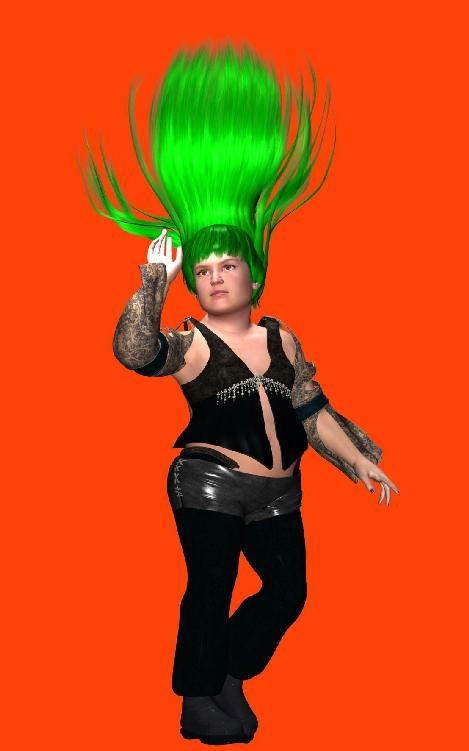
展示の品物はとりあえずアザミとリュウのデザインしたＴシャツやアクセサリなどの小物を並べておいた。陳列棚や内装は簡単なものにして、まずは知人を招待して内覧会を開こうとリュウは言う。
「要するにパーティーさ。世話焼き好きが必ずいるから、そいつらがいろいろ持ってきてくれるんだ。気に入ったものがあれば交渉して、プロテクトを解除してもらう。コピーしたあともう一度プロテクトして、自分ところの商品にしちまおうよ」
「いいの？ そんなことして」
「もちろん店で売るのを前提にして交渉するのさ。販売権を買うわけだね。でも最初はコピープロテクトがかかった商品を一枚ずつ置くだけにしといて、売れ行きの様子を見た方がいいけど。売れない商品をつかまされると、結局損しちゃうからさ」
リュウは古参のプレイヤーだと自分で言っていただけに、けっこうたくさんの人が遊びに来てくれた。中にはこの世界で名の通ったアーチストもいて、気絶しそうに手の込んだドレスを手土産に持ってきてくれる。
真っ赤なシルクのパーティードレス。すそが柔らかに広がって、プリーツの重なりと大胆なレース模様が超絶的に細かい。背中のリボンが羽を広げた蝶々のようで、白バラのコサージュと合わせて少しファンタジックすぎるけど、仮想社会だから派手目のほうがちょうどいいくらいなのかもしれない。
アザミにプレゼントしてくれたのはリュウの昔の友人で、本職もそっち方面で活躍中のそこそこ有名人らしい。現実世界の本名は礼儀として聞かなかったのに、自分から積極的に名のってくる。本名も仮想社会のネームも同じだそうだ。
大葉金男なので、
「カナちゃんって呼んでね」
男なのにおねえ言葉だ。背は低めで小太り、頬がふっくらとふくらんで頭が尖っているからまるでおにぎりそっくり。仮想社会なのにどうしてそういうキャラデザインを選ぶのだろうかとアザミは不思議に思った。アーチストならもっと格好いい外見を選べばいいのに。
リュウに言わせるとそれは逆で、仮想社会だからこそ現実離れした容姿を選ぶのだそうだ。誰でも最初は美男美女になりたがる、だけどその時期をすぎるとカッコよさに飽きてきて、個性を強調する方向で、できるだけ他人と違う凝った格好をしたくなってくるのだ。その結果、変態的な方向へ走ってしまう人も多いという。
「カナちゃんは寸止めの人だから」
本人を目の前にしたリュウの解説に、カナオは身をくねらせて照れた。
「ま、リュウちゃんったらお上手ね、ウフフ」
黒のシックなシャツとパンツをシンプルに着こなして、緑色の髪の毛が噴水のように上方へ吹き出しているのがいかにもなアーチストっぽい。おにぎり頭のてっぺんから真上に広がる噴水型ヘアーを見て、ああ、これは何かに似ているとアザミは直感した。
いったい何に似ているのか。アザミは必死で考える。喉元まで出かかっているのにはっきりした言葉を思いつかない。ああそうか、パイナップルだ。缶詰の輪切りではなく、土から生えてるやつ。噴水というよりも、パイナップルの天辺から直立した葉っぱが周囲に広がっているイメージ。
カナちゃんは緑の髪の毛をそよそよと風にそよがせながら（自分で動いてる？）、蛙のような口で言う。
「あのパーティードレスは、よかったらこのお店に飾ってちょうだい。うちのショップでは一着一万ゴルトで売ってるの」
アザミは驚いた。一万ゴルトといえば約一万円だ。仮想グッズなのに。
「売れてるの？」
とリュウが遠慮なく聞くと、カナちゃんは大きな丸い目を見開いて答える。
「あら失礼ね、超新作だからまだだけど、そのうち絶対売れるから」
リュウがハハハと笑って言った。
「僕が売ってあげるよ、二ゴルトで」
「それは絶対ダメ」
カナちゃんがきっぱり断る。
「私のドレスは本物と同じ縫製をしてるのよ。ちゃんと型紙からおこして、そのままリアルでも製作可、販売可、なんだから」
確かに細部の作りこみ具合が半端ではなく、プリーツの重ね方も異常なまでに凝っている。生地の質感といい、流れるような全体のラインといい、既製品のＴシャツとは次元が違う感じだ。それにしても一万円とは......。
「リュウちゃんのＴシャツも素敵だけれど、私のドレスは一着作るのに一ヵ月以上かけてるの。プロテクトでコピー不可だし、まねしようとしても絶対にできないから一万円なのよ」
なるほど、Ｔシャツのような簡単なものにプロテクトは無意味だけど、ここまで複雑な作品だとそもそも模倣できないのだ。プロテクトをソフト的に破られればコピーされてしまう（いわゆるチートだ）が、その場合は仮想社会を管理するＧＭに訴えれば厳しく対処してくれる。
海賊版はリアル・バーチャルを問わず世界全体の経済活動を破壊してしまうから、テロ行為と同じだ。不正の蔓延を放置すれば社会が一つ丸ごと崩壊してしまう。ＲＭＴ可ならばなおさらだった。
カナちゃんのドレスをどこに飾るか相談しているうちにも、リュウの友人たちは次々とやってくる。みな手持ちの商品を一個ずつプレゼントしてくれて、即席で作った陳列棚の上は見栄えのいいアイテムで一杯になった。
アパレルやアクセサリだけではなく、ソファや時計、置物などのインテリアグッズも持ってきてくれる。商品として売ってもＯＫらしく、これだけ大量にあると、とりあえず売る物には困らないようだ。本当に売れるかどうかはともかくとして。
中には自分のショップの宣伝に馬鹿でかい看板を持ち込む者もいて、そういう類の困り物はとりあえず店先の前庭へ置いてもらった。三日ほど飾っておき、あとは勝手にこちら側で処分しておくのがむしろ礼儀らしい。
パーティーは食べ物もドリンクもない仮想社会のためなかなか間がもたず、だらだらとおしゃべりするだけでそれほど盛り上がらなかった。けれども知り合いを増やす分にはかなり有効だったようだ。
最後に店先で巨大ロケット花火を打ち上げ、それが隣家の屋根を直撃して肝を冷やしたけど、幸い大事には至らず（仮想社会なのだから）ことなきをえた。パーティーは無事終了し、翌日から二十四時間オープンのアザミのお店が始まった。
＊
店といっても自動販売機が並べてあるのと同じことだから、必ずしもアザミが店内にいる必要もないし、仮想社会にインしている必要もない。ときどき店を覗いて売り上げがあるかないか確認するだけでＯＫだ。
客は気に入ったグッズがあれば直接それをダブルクリックしてメニューをポップアップさせ、『購入』のアイコンを選ぶ。そうすれば手持ちのゴルトと引き換えで即座にコピーを手に入れることができる。カナちゃんにもらったドレスのような一点モノは、コピーではなく所有権の移転がおこなわれて売買契約が成立する。展示してあるオリジナルは自動的に消滅だ。
すべてお手本のスクリプト（マクロプログラム）をリュウから教えてもらっているので、その点でアザミが悩むことはなかった。
最初の幾日かは客らしい客はまったく来ず、パーティーで知り合ったリュウの友人が何人か様子を見に来てくれた程度だった。売り上げは見事にゼロ。リュウの露店からテレポートで飛んできた客も、ざっと店内を眺めて即座に消えていく。
一瞬だけカナちゃんの真っ赤なパーティードレスに目をとめるのだが、一万ゴルトの値札を知ってびっくりするのが毎度のパターンだった。よく考えれば当たり前の話で、二ゴルト均一の店から来た客なのだから。
カナちゃんの店とテレポートパッドで結んだらどうかしらと思ったが、ずうずうしいと思われるのが嫌で言い出せなかった。リュウに相談すると、カナちゃんの店は高級志向だからテレポートパッドやテレポートボードの類はなかなか置かせてくれないらしい。
「店の中がパッドや看板だらけになっちゃうのは、アザミちゃんも嫌だろ」
だからよほど親しい間柄じゃなければ無理なのだそうだ。うっかりパッドを踏んだ客がよその店へ行ってしまうのは癪に障るし、店の壁が他店の看板だらけになるのも雰囲気を悪くする。どうしてもという場合には広告料をとるのが普通らしい。
ふうんとアザミはうなずいた。ＲＭＴありの世界だから、金銭感覚が異常に厳しいのだ。
ひょっとしてお店が大繁盛して大儲けという夢はあっけなく消えた。我慢していればいつかは客が集まってくるのではとも思ったが、さすがに一週間以上閑古鳥が鳴き続けるとそういう甘い考えもできなくなってくる。
一週間の売り上げが四ゴルト。たった二点のアクセサリが売れただけ。リュウの露店の一日分以下とは？
脱力して言葉をなくすアザミに、リュウは普段と変わりない言葉をかけてくれる。
「うーん、僕のときと同じだなあ」
リュウは親身になってあれこれ世話を焼いてくれるときはありがたいのだけど、けっこうあっさりした性格のようだ。アザミの失敗にもやっぱりそうだったかと思うだけで動じたところが全然ない。
「これはいっそのこと早めにあきらめて、今のうちに土地を売っ払っちゃった方がいいかもしれないね。円にかえたお金で焼肉食べに行こうよ、リアルで」
そんなにあっさり言われると腹が立つ。もう少し親身な慰めを期待していたのに、失敗して当然という態度では話にならない。アザミは期待を裏切られてよけい落ち込んだが、しばらくリアルの床に倒れているとかえってファイトがわいてくる。
ファイトというよりも悔しさのあまりの無駄な悪あがきという気がしないでもないが、このまますべてをほうり投げて焼き肉屋へ直行というのも情けなさすぎる。もう少しなんとか取り繕わないと、パーティーに来てくれた知人にも顔が立たない。面子丸つぶれだ。
「店にもっと高級感をもたせて、リニューアルしてみたらどうかしら」
「高級感ねえ......」
なにか言いたそうなリュウを無視して、アザミはショウケースを全部金色に塗り直した。ついでに表の壁も透明にして、外から中がよく見えるようにする。店内の棚とアイテムを減らして風通しをよくし、中央の高いところにカナちゃんの真っ赤なパーティードレスを飾った。どっちみち高すぎて売れないから、完全に客寄せの看板と化してしまったがこれは仕方ない。仮想グッズに一万円はちょっと手が出ないだろうから。
もう一週間待ってみると売り上げは少し増えた。八ゴルトだ。先週の四ゴルトに比べて今週は倍の八ゴルト。売り上げ百パーセントアップ。一人の客が二ゴルトのアクセサリを四つも買っていってくれたのだ。ということはつまり一週間で客は一人だけ。先週は確か二人いたはずなのに......。
そしてなんと三週間目はゼロだった。売り上げも売れた商品も買ってくれた客の人数も、全部ゼロ。
アザミがみようみまねで作ったアクセサリやＴシャツは全然売れず、今までに売れた商品はリュウの小物だけ。パーティーのときにもらった商品はそれなりの値段をつけたので、こちらはまったく売れず。今さら安くするのも贈ってくれた人に失礼かと思い安直に値下げできない。ときどき遊びに来てくれるからだ。
ついでに何か買っていってよと思うのだが、それも口に出せない。だいいち彼らは商品製作の知識と技術を備えた人ばかりだから、アザミやリュウの作ったグッズ程度では購買意欲をそそらないらしいのだ。
アザミは独り言をつぶやいてみた。
「誰も私のお店では品物を買っていってくれません......」
その独り言すら誰も聞いてはくれない。そもそも店内にはまったく人がいないのだから。
閑静な住宅街の中にポツンとたたずむアザミのお店。ガラス張りの店内の中には空中へ漂うよう大きくすそを広げた真っ赤なドレスが浮いている。金色のショーケースの上にまとまりなく散らばるどこも特徴のない小物類。
イメージしたおしゃれな店とはほど遠い、お遊びの仮想店舗にしても少し安っぽすぎるのかもしれない。
アザミが店の前の道路に立ち、ため息をつきながら寂れた自分の店をぼんやり眺めていると、突然店内のテレポートパッドを光らせてリュウがあらわれた。
「アザミちゃんグッドニュース！」
リュウはなぜか黒いスーツを着ていつものサングラスをはずしている。何に興奮しているのか、店のドアをくぐってこちらへ走ってくる姿をいつか違う場所で見た覚えがある。長い足がひらめいてときどきポーンと空中に飛び上がるのはグッドニュースという喜びの表現を体全体であらわしているつもりだろうか。
「たった今、カジノのオーナーから教えてもらった情報なんだけど、聞きたい？」
あんまり聞きたい気分ではなかったけど、アザミは聞きたいと無理して答えてみた。
「このあたりの区画に大規模なテナントビルができるらしいよ。相当大手のリアル企業が宣伝用のショウルームを作るので、タイアップしようって話が地主の間でかわされてるらしい」
ふうーんと興味なくアザミはうなずいた。
「繁華街になれば人が来るし、有名企業ならなおさらだ。グッドニュースだろ？」
と言われても......。
「このあたりの区画って、どのあたりなの？」
「いや、それはまだ分からないけど、たぶん場所的に推理して、三件ほど隣の大型ビルがリニューアルされるんじゃないかって噂。もともとショッピングモールだったんだけど、うまく経営できずにオーナーが廃業して、そのまま放置されちゃったって物件。アザミちゃんのこの土地も、住宅街のわりには中途半端に相場が高いだろ。そのせいだよ。昔はもっと高かったんだ」
へえとアザミは思った。リュウは古参だけあって情報通だ。
「大企業だと無茶なＲＭＴをしてくるから、ちょっと楽しみだね」
何が楽しみなのかは分からないけど、客が増えるってことだろうか。お店の屋根から縦長のでっかい看板を空へ伸ばせば、そのテナントビルやショウルームへ来た大勢の人たちが、ネオンサインにつられてこちらへ飛んできてくれるかもしれない。
アザミは妄想した。
蛍光灯に群がる羽虫のように？
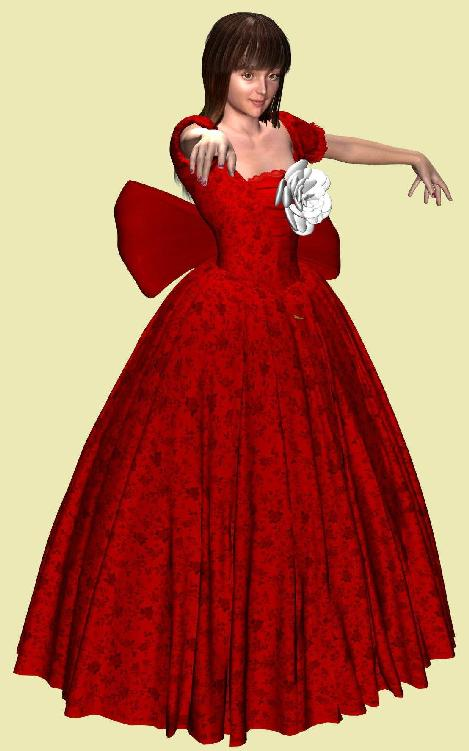
一ヶ月ほどは何もなかった。アザミのお店に客はこず、たまにリュウの小物が売れるだけ。アザミが苦労してデザインしたバラの髪飾りが一つだけ十ゴルトで売れたのは驚きだったが、よく考えたらたった十円なのだった。
百円にしておけばよかったと思ったのはしばらくしてからで、思いついたあとさっそく実行してみたら案の定、それからは一つも売れなかった。もうけを度外視して無心にならなければとも考えたが、売れなければ無心になっても意味がない。
悩んだあげく何かの参考にと、よそのショッピングモールへ偵察に行ってみた。するとそこでショックだったのは、リュウやアザミがつくった程度の小物は無料で流通しているのが普通だという事実だった。
しかもひどいときには道端に捨ててあったりする。持ち物が多すぎると邪魔なので、古いグッズを地面に捨てていくのだ。捨てられたアイテムはしばらく転がっているが、定期的に行われるサーバーメンテナンスで自動的に消去される運命だった。
アザミはしばらく道にたたずんで、路傍に捨てられているＴシャツを見下ろした。特に面白みのない抽象模様の布切れ。これじゃ売れないはずだ。ひょっとしてアザミやリュウが苦労して売っているグッズも、飽きられたらこんなふうに捨てられてしまうのかもしれない。
いや、きっとそうなのだろう。だって現実世界にだって物があふれているのが実情だ。普段着だっておしゃれ着だって、ちょっと古くなればタンスやクローゼットの奥にしまいっぱなしで邪魔になったら処分してしまう。たとえまだじゅうぶん着られても、流行遅れになったらそれっきり。すりきれるまで着古して、穴が開いたら接ぎをあてて使うような昔の人はもう現実世界にはいないのだから。
お店を閉めて、土地を売って、リュウと焼肉を食べに行くのも悪くないかなと、ふとアザミは思った。もともとはリュウの喜ぶ顔が見たくてお店を始めたのであって、商売が好きで始めたわけではなかったのだ。今のうちにうまく土地を売り抜ければ金銭的には損にならないし、この仮想社会に参加したのもまったくの気まぐれだったのだし。
リュウの喜ぶ顔が見たいのなら、なにも仮想社会で無理なことをしなくてもいいのでは。焼肉をおごってあげたほうがリュウもずっと喜ぶんじゃないかしら、しかもリアル世界で。
落ち込んだあげくの思いつきなのに、よく考えるとなぜか逆にすごく嬉しくなった。久しぶりに胸の奥がどきどきする。どうしてこんな簡単なことにもっと早く気がつかなかったのだろうか。アザミは自分の頭の悪さにびっくりした。いつものことなのだけれど、今の今まで自分が本当にしなければいけないことを勘違いしていたのだ。
アザミが本当にしなければいけないことは、仮想社会で商売をすることではなくて、現実世界でリュウと焼肉を食べることだったのだ。いやそうじゃなくてとアザミは思い直した。
アザミがしたい本当のこととは、現実世界で本物のリュウに会うことだったのだ。
＊
閑古鳥が鳴いている店を売り払って、今までのお礼に焼肉をおごるわと約束して、リアルのリュウと会う。最初に食べたいと言い出したのはリュウなのだから、こちらから誘っても嫌だとは言わないだろう。なんだったら焼肉屋じゃなくてそこそこおしゃれなレストランにしてもいいし、もっとくだけてラーメン屋などの軽食程度で大丈夫かもしれない。
それより心配なのはリアルの姿をさらしてお互いにどう思うかだ。がっかりされたりがっかりしたりするのは嫌だけど、少なくとも性格的に問題があるようではなし、容姿や年齢は最悪な場合を覚悟しつつ気をしっかり持って会うしかあるまい。
現実世界ではよくある話で、そこは我慢して乗り越えるしかない。過剰な高望みを妄想してしまうほど互いに若くはないのだから。思い切ってやってみて、ダメなら適当なところであきらめる。アザミのお店もそのつもりで始めたのだった。
この考えにいたるまで一ヶ月以上かかるとは、我ながら間抜けな話だけど仕方ない。抜けているのは昔からだ。さっそく会いに行こうと、思いついたばかりの勢いで店内のテレポートパッドへ乗りかけて、珍しく誰かがそばに立っているのに気がついた。
最初はリュウかと思ったのだが、背の高い堂々とした体格を仕立てのいいスーツとストライプのカッターシャツ、細身のネクタイで着飾っている。短髪に切りそろえたヘアスタイルと上品な笑い顔はどこかのビジネスマンのようだ。
宙に浮いているカナちゃんの真っ赤なパーティードレスを見ていたのだが、いさんで店内へ入ってきたアザミを認めてさっそく話しかけてきたのだろう。珍しく積極的な一見さんだ。
こんにちはと、ていねいなあいさつをして言葉をかけてくる。
「失礼ですが、この店のオーナー様でしょうか？」
オーナー様ではないが、店主なら確かにアザミだった。
「はいそうですけど？」
とりあえず返事した。商品の売買は自動だから、取引方法の説明を初心者が求めているのだろうか。それとも一万ゴルトの値札を見てびっくりして、それで値引きの交渉を始めるつもりかしらとアザミは思った。
カナちゃんの商品だからうかつに値引くと怒られるかもしれない。リュウが二ゴルトで売ってあげるというのを断固としてことわったくらいだから。どんな作家にも譲れない最低限のプライドがあるのは、物を作ったことのある人間なら誰でも分かる。それがたとえたった二円相当のＴシャツでも、だ。
「素敵なドレスですね。ここまで細密なモデリングは見たことない。流れるように品のあるセンスといい、生地の柔らかな質感といい、まるで本物のようだ」
男はひとしきりドレスの高級感を褒め称え、要領を得ないアザミのお礼を聞き流したあと、実は今日お店にうかがったのはある重要なご用件をお伝えに参ったのですと、もってまわった言い回しで本題を述べ始めた。
「今はまだ詳細はご説明できませんが、ある有名企業が、もちろん東証一部上場企業ですが、その大企業が新たな仮想商店街を立ち上げようとの計画を構想されまして、私どもがその建設予定地をお探ししているわけです」
男は器用に名刺を差し出すソーシャルアクションをして、アザミはその手に握られている小さな紙を受け取った。見れば名刺には現実世界で名の通った超一流商社の名前が印刷されている。
『株式会社二つ星商事 新商品企画部
バーチャルトレーダー 南方タケル』
冗談で作った名刺かもしれないけど、とりあえず話を聞くだけ聞いてみる。
男の説明はこうだ。
この地域に大規模ショッピングモールを建設したいので、ぜひ土地を売って欲しい。価格は相場が望ましいが、一割程度の割り増しならできるかもしれない。プラスの特典として、新規の仮想商店街へテナントショップとして優先的に入居できる条件もつけましょうとのことだった。
いつかリュウが教えてくれた三軒隣のビルの話だなと、アザミはぴんときた。ショッピングモールができれば客が増える程度の話かと思っていたら、近隣の土地を買収するまでの大規模な話になっていたのだ。
廃ビルの土地だけでは足りなくて、その周辺の土地まで買いあさる。大企業は無茶なＲＭＴをしてくるから楽しみだねとリュウは言ったが、このことだったのか。
ちょうど売ろうかと思っていた矢先にタイミングのいい話だが、そんな簡単に返事をするわけにはいかないから、とりあえず考えさせてくださいとアザミは答えた。
男はよろしくお願いしますよと愛想笑いを浮かべ、ではこのパンフレットをどうぞと紙束を一抱え渡してよこした。仮想商店街を中心としたこのあたり一帯の土地再開発計画の構想を説明した書類らしい。
これでおしまいかと思いきや、男は最後にごく控えめな軽い口調でこう告げた。
「それと、このドレスをいただいていきます」
視線の先にあるのは例の真っ赤なドレスだ。一万ゴルトの仮想ドレス。
「え、これをですか？」
アザミはいろんな意味で驚いた。目の前で空中に飾ってあったドレスがふっと消える。男のインベントリに移動したのだ。南方タケルは微笑してアザミを振り返り、またうかがいますとていねいに頭を下げて帰っていった。
アザミは男が去ったあともしばらく呆然としていた。手には小さな箱のような紙束、頭上の真っ赤なパーティードレスはもう消えている。何か大事なものを失くしたような気もするけど、カナちゃんの商品が売れたわけだから、それはやっぱりいいことなのだろう。
一万円相当のドレスを少しもためらうことなく、まるで二ゴルトのＴシャツを持っていくように買っていってくれる人がいるのだ。ひょっとしてこれが大企業のパワーなのだろうか。
ぼんやりと思ってから、アザミは念のために自分の所持金を確認した。確かに一万ゴルトの売り上げがある。運営会社ＤＧＪの公式サイトで仮想為替取引の申し込みをすれば、指定の銀行口座に本物の円が振り込まれる。レートの変動や各種支払い手数料を考慮し、それらを差し引いて厳密に一万円ではないけれど、相場は比較的安定しているのでほぼ一万円は間違いない。
カナちゃんに売れたことを報告して、お礼を言って、また商品の補充をできないか交渉しよう。今度は何割引かの卸し値でカナちゃんから仕入れるか、それとも文書で委託販売の契約書を作って、売り値の何割かをカナちゃんに戻すという約束にした方がいいかもしれない。
だがその前に、まずリュウに連絡しよう。リュウが教えてくれた情報が本物だったのだから。そして土地の売買をどうするか一緒に相談するのだ。
＊
「一割増しってコトはないな」
リュウも少し興奮して主張した。自分の予想が当たってご機嫌だ。他人の土地の話なのに、我がことのように喜んでくれる。
「粘らなきゃダメよ。有名企業のために土地集めしてる商社なんだから、安く値切るだけ値切って買い叩いた物件を、とんでもない値段で転売するのがあの人たちの仕事なの。右から左で億単位の大儲け、それが商社のあこぎな手口なのよ」
カナちゃんも興奮している。噴水頭の葉っぱがわさわさといつもより多めに揺れているのがその証拠だ。おまけに自分のドレスが正値で売れてまんざらでもなさそうだった。製作に一ヶ月以上かけているとはいえ、仮想データに一万円払ってくれるお大臣がいるとは本人にも意外だったらしい。トランプのポーカーをしていて、強気でふっかけたブラフがまんまと成功したときの気分だろうか。
「じゃあいくらで売ろうかしら」
とアザミは二人の意見を聞いてみた。アザミとしてはもともと五千円で買った土地なのだから、二十六万五千ゴルトの一割り増し約二十九万ゴルトでも十分嬉しい。三十万円近い現金は魅力だ。焼肉どころか一流レストランで食事できる。
「向こうから買うと言い出してきたんだから、まずは五割り増しからかな。値段交渉をそこからスタートして、徐々に下げていく。でもさ、その前に考えなきゃならないことがあるんじゃない？」
とリュウが言う。
「土地をなくしたらテナントショップを借りなきゃならないだろ。そうすると月々の借り賃が発生するわけだし、かえって経済的に苦しくなるかもしれないよ」
「あら、それもそうね」
カナちゃんがうなずく。確かにそう言われるとそうだ。
「有料会員をやめて、借り賃が会費相当の千ゴルト以下だったら今までどおりなんだけど、どうかな、テナント料はふっかけてこないかな？」
なるほど、そういう損な事態におちいる可能性もあるのだ。もっともそれは店を続ける前提であって、アザミとしてはこれを機会に商売をやめてしまおうと思っていたんじゃなかったっけ？
「あのう、思い切って、この機会に、やめてしまったらどうかしら......」
アザミはおずおずと言い出してみた。
「何を？」
不思議そうにリュウはたずねる。
「だから、お店を、その、やめるの......」
「え、どうして？」
「だってえ......」
カナちゃんもいるし、リュウと焼肉を食べにいこうとはここで言えない。
「何を今さら言ってんの？」
カナちゃんが緑の葉っぱを激しくわさわささせている。よく見れば首を横へ振っているのだった。
「せっかくドレスが売れたのに、お店やめちゃうの？ それはもったいなさすぎ」
リュウも驚いているようだ。
「一流企業と有名商社がタイアップして始める大規模ショッピングモールなんだから、最初だけでも絶対にぎわうと思うよ。お祭りを楽しんでからやめても遅くないと思うけど」
「そうそう、私のドレスももっと売れるかもしれないし、そんなラッキーなお店、かわってもらいたいくらいだわ。とりあえず交渉して」
「なんでもいいから千ゴルト以下でテナントを借りるのさ。よかったら僕の分も借りられるか聞いてみてよ。安かったらだけど」
「あらそれなら私も、ぜひお願い」
どうも二人とも乗り気になってしまって、今さらリュウとデートしようとはいえない雰囲気になってしまった。それで仕方なくアザミは渋々二人の要望を承諾した。焼肉どころではなくなってしまったようだ。
商社マンが持ってきたパンフレットを読んでみると、三軒先の廃ビルを取り壊してそこへ大手ＩＴ企業のショウルームを作り、そこを核とした大規模ショッピングモールを建設する予定だそうだ。ついでにお遊びの公園やイベント会場、各種スポーツ会場も用意し、このあたりの区画をほとんど全部使ってしまうらしい。
よく読めば用地買収も八割がた済んでおり、アザミが手に入れた土地も、どうやらあのときの競売で取得に失敗したものらしい。
ということは、粘ればいくらでも買取の値段が上がるのではとリュウは言う。
「こりゃ相場の倍でも買ってくれるんじゃないの？」
確かにそんな感じだ。ただしアザミの土地は今のところ重要物件ではなく、ただの公園にする予定だと書いてある。
「公園かあ......」
「ショウルームとも離れてるし、あんまり無茶言うと野中の一軒家になりそうね」
「どうして？」
「交渉打ち切りで、用地買収はあきらめて放置ってパターン。ここは仮想社会なんだから強制執行はないだろうし、重要でない場所を隅から隅まで手に入れる必要はないわけでしょ」
なるほど、強気に出すぎて交渉を失敗すると、相手から無視されてしまう場合もありうるのだ。カナちゃんは意外と慎重派か。
そういえば現実の公園にも妙な具合に民家が建っていたりする。あれはなんだろうと思っていたのだが、ひょっとして交渉を拒否して無理やり居残った人たちなのだろうか。
「最悪の場合、公園の中でファッショングッズは売れるのかしらね？」
「さあ」
リュウは首を傾げた。けっきょく人が集まるかどうかではないのだろうか。三人で完成予想地図をみてみると、この店の場所はショッピングモールと少し離れている。メインのショウルームをはさんで向こう側だ。イベント会場やスタジアムも別の方向で、どうにも人が集まる要素はなさそうに思える。
リュウの露店のように近くにカジノでもできてくれれば嬉しいのだが、メインが家電メーカーだから、それはなさそうだ。土地開発構想全体として家族連れを対象とした娯楽施設群を想定しているふしがあるので、さすがにギャンブルはイメージが悪い。
三人でしばらくあーだこーだ騒いでいると、また誰か見知らぬ客がアザミの店を訪れた。黒いスーツがこの前の商社マンに似ているが、顔の造作やネームは別人だ。いらっしゃいませとカナちゃんが気取って声をかけると、男は店内を一瞥してさっそく口を開いた。
「この土地のオーナー様でいらっしゃいますか？」
店じゃなくて土地という言葉を使ってくるのは、また例の件だろうかとアザミは直感した。私がそうですけどもとアザミが答えると、男はやはりこの前と同じように名刺を差し出してくる。
『株式会社オソダ自動車 仮想営業部
課長 オンダ万次郎』
頭の上には確かにオンダ万次郎とネームが浮かんでいる。ふざけた名前だが仮想キャラクタなのだから仕方ない。それにしてもオンダ自動車は日本有数の大企業だ。ゲーム用のサーキットをあちこちの仮想社会で運営していることでも有名な自動車メーカーだった。
仮想社会はＤＧＪが運営するドゥームゲート以外にもいくつかあるから、そちらのほうで実績がある。しかしこの仮想社会ではまだ聞いたことがなかった。
オンダ万次郎は不思議なことに、この前の男、バーチャルトレーダーの南方タケルと同じような話をし始めた。三軒隣の廃ビルを総合家電メーカーのショウルームとして改築するので、このあたりの区画全体が再開発地区に指定されているのだという。
「複数の巨大企業が参画した一大バーチャルイベントでございますよ」
複数の企業なんですかと、アザミにかわってリュウが聞き返した。南方タケルのときはそんな話は聞かなかったはずだ。
「最初に構想を発表したのは杉下電気さまなんですけど、それに他のメーカーが乗っかって、話がどんどん大きくなってきたんです。今じゃ日本を代表する超巨大企業が何社も押しかけてきてますね」
へえとアザミは思った。仮想社会ブームは一時期の勢いをなくしたと聞いていたのだけど、また流行り始めたのだろうか。
「私どもオンダはこちらさまの区画に大規模プロジェクトを予定しておりまして、よろしければオーナー様にぜひ参画していただきたくお願いにあがりました」
「参画？ 大規模プロジェクト？」
いきなりそんなことを言われても分からない。ひょっとしてお店を出さないかという誘いなのだろうか。
「ありていに申し上げれば、専用レース場建設のために、土地を提供していただけないでしょうかというお話でございます」
三人は顔を見合わせた。自動車会社がバーチャルレースサーキットを建設するのはよく聞く。カーレースはＴＶゲームの定番だから人気もあるし、インターネット上の娯楽としても最上級だ。
「あら、ちょっとそれは初耳ね」
カナちゃんが唐突に口を出した。
「でも私たちが聞いた情報では、このあたりは公園になるんじゃないの？」
そうだった、確かに二つ星商事の南方タケルはそう言っていた。話がちょっとずれている。
「公園......。どなたからそんな話を聞かれましたか？」
オンダ万次郎が逆に聞き返してきたので、アザミは例の開発予定図をみせてあげた。万次郎は興味深げにその図を見ていたが、やがてとってつけたような営業スマイルを浮かべて話し始めた。
「これが二つ星商事の開発予定図ですか。なかなかよく考えておられますが、ですが公園というのはちょっと臭いですね」
「え、臭いってどういう意味ですか？」
万次郎はしばらくためらってから、肩をすくめて内緒話をする仕草をみせた。
「あくまでも二つ星さんの予定ですので、私どもがどうこういう筋合いはないのでございますが、公園というのは、ちょっと......」
わざわざ苦笑いのソーシャルアクションをする。
「ちょっとって、どういう意味なの？」
カナちゃんが一歩前へ踏み出した。頭から垂れ下がった葉っぱのような噴水に押されて、万次郎はたじたじとあとずさる。
「ですから、これだけ大きい空き地をわざわざ作るはずはございませんよね。二つ星さんは用地買収の件でおうかがいしたんでしょ。だったら、金を払って手に入れた土地を遊ばせておくというのは、ちょっとありえませんよね」
意味深な微笑。しばらく沈黙があって、ああそうかとリュウがささやいた。
「公園ってことにしてあるだけなんだ」
カナちゃんが即座に合づちをうつ。
「さすが商社マン、やるわね」
「なになに？」
とアザミは尋ねた。どういうことなのか説明してくれないと分からない。
リュウが答えてくれる。
「公園ってことにしとけば、安く土地を買収できるだろ」
「まだ買収してない土地がある区画は、公園ってことにしといて、思い切り買い叩くつもりなのよ。でもそんなウソすぐばれるのに」
憤慨した様子のカナちゃんに、万次郎はなだめるような仕草をする。
「あくまでも予定でございますから。土地を手に入れたあとで、計画が変更になったと言い訳すればすむことでございますから、ね？」
アザミは少し驚いた。南方タケルはそんな小細工をするようなこずるい人には見えなかった。しかしよく考えればポリゴンＣＧでできたキャラクターなのだから、良い人だか悪い人だか、外見からではさっぱり判断できないのだ。
「でも、あなたはどうしてそんなことを親切に教えてくれるの？」
カナちゃんがちょっと意地悪く尋ねた。対して万次郎は待ってましたとばかりに答える。
「他社に土地を部分買いされますと、結局あとからこちらが高値で買わされてしまいます。それくらいでしたら、レース場を建設する弊社に直接お売りくださるよう、お願いしているわけでございます」
つまり地上げ屋に対抗した土地の争奪戦が、もう既に始まっているのだ。
「まっ、じゃあ、オタクはいくらで買ってくださるおつもりなのかしら」
カナちゃんは対応が素早い。
「そうですね、時価相場の二割り増し。プラス、レース場に付属したテナントスペースを一年間無償でお貸しいたします」
確か二つ星商事は相場の一割り増しだった。しかもこちらの追加条件は出店場所の借り賃が一年間無料。この差は大きいかもしれない。
「でも二割じゃ少ないな」
今度はリュウが口をはさむ。
「相場の五割り増しじゃないと」
「五でございますか、うーん......」
と万次郎は考えこむ仕草をみせた。
「では三割り増しでいかがでしょう」
「三割かあ。もう一声、四割り増し」
「ダメダメ、まだ早いわよ」
カナちゃんがあわてて割り込む。
「二つ星商事のタケルちゃんにもう一度聞いてみなきゃ。向こうのほうが先に声をかけてきたんだから。ね、アザミちゃん」
言われてアザミはどう答えようか迷った。値段交渉は苦手だ。粘り強くないと損をするというのは分かるが、ねちっこいかけひきは性格的に嫌いなのだった。時間を置いて熟慮した方が最終的には得なんだろうけど、賃貸料一年間無料で相場の三割増しなら即決しても悪くない。
ただしカナちゃんが言ったように、二つ星の南方タケルに無断でというのが気になる。公園予定地だとだまされたのは癪に障るけど、なんといっても例のドレスを一万ゴルトで買っていってくれたのだ。地上げ屋のような金の亡者がそんな気前のいいことをするだろうか？
「そうねえ、ちょっと考えてみないと決められないわ」
「もちろんでございます。では弊社のレースサーキット完成予想図をお渡ししておきましょう」
オンダ万次郎は三人を相手した値段交渉では不利と踏んだのだろうか、パンフレットを渡しただけで大人しく帰っていった。また来ると言い残したのは南方タケルと同じだ。
広げた完成予想図をしげしげと眺めてみれば、確かに本格的なサーキット会場で、そこらの野球場より大きいらしい。バーチャルだからリアルのサーキットよりは小さい縮尺らしいが、それでも十分広大だ。これだけの土地を買い占めようとすれば間違いなく巨大なゴルトが動く。地上げ屋がわくはずだ。
「南方タケルはやっぱりくせものだったわね。条件的にもオンダさんのほうがいいし、あそこで決めちゃってもよかったんだけど、あわてる者はもらいが少ないっていうでしょ。だからもう一回二つ星商事と交渉して、値段を吊り上げさせてからオンダ万次郎と契約するの。そうすれば五割はいくわよ」
カナちゃんの助言はもっともだ。
「私のドレスを一万ゴルトで買ったひとに悪人はいないと思うけど、でもね、こればっかりはいくらロマンティッカーでも、慎重に対処しないと」
アザミは耳慣れない言葉を聞いて、ふと聞き返した。
「ねえ、ロマンティッカーって何？」
あらいやだ、という仕草をカナちゃんはした。
「ＲＭＴをしている人のことよ。リアルマネーを使って、バーチャルの世界で夢を追い求めてる人たちのこと。リアル・マネー・トレードの略語ＲＭＴを、ロ・マン・ティックって読み替えてるわけ」
へえとアザミは感心した。
「もともとはモンスターと戦ったりするＭＭＯＲＰＧで、規約違反のＲＭＴをしている人たちをさす言葉だったんだけど、このワールドでＲＭＴは当たり前だから、私たち全員がロマンティッカーよね。だけど私のドレスに一万円払ってくれる人がいるなんて、本物のロマンティストだと思わない、ねえ？」
カナちゃんはやっぱり嬉しそうだ。
「南方タケルってどんなひとかしら」
現実世界で苦労して働いて得たお金で、仮想データにすぎないバーチャルドレスを買ってくれるんだから、確かにロマンティックな要素を持っていないと理解できない。一万円のドレスをぽんと買っていく人なのだ。
顎の下で両手の指を組み合わせて、カナちゃんはうっとりした表情で空を見上げている。こんなソーシャルアクションあったかしらとアザミは思った。
「今度きたらぜひ私も呼んでね。そうだ、私のお店とテレポートパッドで結んじゃいましょう。そうすれば一瞬だから」
「ああ、そりゃいいね」
リュウがすかさず言った。
「アザミちゃん、カナちゃんのお店と直通できるなんて、運がいいよ」
いつかリュウと二人で話した覚えがあるあれだ。テレポートパッドは相互に行き来できるから、アザミの店にも高級ショップから客を呼び込むことができる。これは願ってもないことだった。南方タケルのような金離れのいい人たちばかりを相手に商売できるのだから。土地の件といい、私にもとうとう運が向いてきたのかしらとアザミは内心喜んだ。
そのときは。
カナちゃんの店は有名ストリートのテナントビルにあった。現実世界で一流デパートを経営する巨大流通会社が本物の自社ビルを模して建てたらしい。仮想社会でも指折りの繁華街にある超有名ランドマーク、ツインタワー。これでは借り賃もさぞ高いだろうと思いきや、意外とそうでもないそうだ。
「私はほら、リアルでもそこそこのプロデザイナーじゃない？ それでビルのオーナーから直接招かれてショップをオープンしたクチだから、借り賃はただなの。そのかわり毎月売り上げの何割かをおさめなきゃならなくて、最低限のノルマがあるわけ。何ヶ月もそれを達成できないと、プロでもおんだされる仕組み」
三顧の礼で迎えられても、売れなければ結局お払い箱なわけだ。最低限いくらの売り上げが必要かは教えてくれなかったが、けっこうシビアなハードルらしい。ノルマに足りない場合はやっぱり自分で自分の店の商品を内緒で買うのだそうだ。
「インチキだけど、仮想社会だから何でもアリアリよ」
「うん、やっぱりそうだろうね」
もっともらしく相槌を打ったのはリュウだ。彼も露店の場所代を払うのにダンスパッドでしょっちゅうアルバイトしているそうだから、どこもみんな商売はたいへんだ。閑古鳥の鳴いたお店でのほほんとしているのはアザミぐらいのものだろうか。
でも大丈夫、土地を売ってからレースサーキット場で借り賃ゼロのテナントショップを経営できる。しかもカナちゃんの高級ショップからお金持ちのお客さんがテレポートパッドでぞくぞくやってくるはずなのだ。
そんな調子のいい話が本当に実現するのかなとも思うが、失敗したらすべてを放り投げて撤退すればいい。現実世界でそんなことをやったら大騒ぎになるが、ここでは誰にも迷惑をかけず普通にできる。そこが仮想社会とＲＭＴワールドの強みだ。
「さ、ここが私のお店なの」
テレポートパッドを使って瞬間移動した場所は、現実世界のファッションビルで見かけるのと同じような光景だった。ガラス張りの明るいフロアのあちこちにたくさんの区画があり、小奇麗な衣服がところせましと並んでいる。
人がたくさん立ち尽くしているのでけっこう客が入っているのだなと思ったが、それは単なる勘違いで、客だと思った人は大部分が商品をまとったマネキンなのだった。ポリゴンＣＧなのでプレイヤーのキャラクターか作り物のマネキンか全然区別がつかない。
カナちゃんのテリトリーはエスカレーターだかエレベーターだかを兼ねた移動パッドの正面にあり、場所的には特等地に思われる。もっとも高層ビルの六階だから、そこまで通りすがりの客が来てくれることは滅多にないだろう。
「一階に看板が置いてあるから、それに触ってくれればテレポートでここまで跳んできてくれるんだけど」
似たようなショップが並ぶファッションビルだから、看板も同じようなものだ。カナちゃんの高級ショップもけっこう競争が厳しそうだった。ただし展示してある商品はどれも細密で、デザイン感覚などはやはりプロっぽい。周囲のショップよりも頭二つほど抜きん出ている感じがする。
たとえば脇に立っている妙齢のマネキンがまとっているのは、全身虹色に輝くタイトな女性用ビジネススーツだ。ボディコンシャスなほど肌に張り付いてはいないけど、腰から腿にかけてのラインが色っぽい。
スーツにしては色が派手で、だけど仮想社会だからそれほど違和感はないようだ。それにしてもなんでチラチラ光ってるのかしらとアザミが目を近づけて細部をよく確かめれば、単なる布地ではなく、細かなウロコがびっしりと張り付けてあるのだった。
「ヘビ皮のビジネススーツよ」
カナちゃんが自慢げに言い放つ。
「サーフェイスはただのエンボス加工じゃないの。十万枚以上あるウロコの一枚一枚が全部別パーツ。一枚布にお絵かきのテクスチャ張りつけたんじゃないのよ」
十万個のポリゴンパーツを結合。それはちょっと凄いかもしれない。いろんな意味で重そうだけど。
「想像して頂戴、この虹色に燦然と光り輝くスーツを着て、さっそうとオフィスにあらわれる自分の姿を。最高にエッジのきいたビジネスウーマンのご出勤に、職場の男性全員が羨望のまなざしで振り返る。熱い視線はあなたの虹色ヘビ皮スーツに釘付け」
リュウが感心してささやいた。
「ああ、なるほど、職場の話題を独り占めだね」
「オリジナルは全長三十メートル、体重二トン。アマゾン川の流域でお客を五人飲み込んだ伝説のレインボーアナコンダの生皮よ。南の辺境で世界のワニ園を経営してる友達に無理言って都合してもらったの」
ふーんとアザミも感心した。南の辺境にはワニ園があるのだ。爬虫類つながり？ 飲み込まれたお客はどうなったのかしら。
ちらと値札を確かめればこれも一万ゴルト。
「で、売れてるの？」
純粋な好奇心で聞いているらしいリュウの問いに、カナちゃんはしばらく無言で頭の枝葉をわさわさと多めに揺らした。
「もうすぐ売れる予定だから」
アザミの考えではもう少し値段が安ければ売れるんじゃないかと思うのだが、高級ショップだから簡単に値引くわけにはいかないのだろう。リュウの薄利多売とはまったく逆の考えなのだ。
「じゃ次はこれ」
カナちゃんが指し示したのは白いハイレグワンピースの女性用スイムスーツだった。ウェストのあたりに赤白まじりのハイビスカスが上品にプリントしてある。見たところ普通の水着だ。
「だけどこれは、ただのワンピースじゃないのよ。いいこと、よく見ててね」
カナちゃんが言って、腰のハイビスカスをさらっとなでると、突然布地が光って細かな霧が吹き出してきた。ＣＧ効果であるところのエフェクトをまとった状態だ。うっすらとしたもやが白いワンピースの表面を厚く覆っている。水滴で淡く光っている姿がちょっと涼しげでおしゃれだ。
「へえ......」
さっきのヘビ皮のようにぎらぎらしていないぶんナチュラルな美しさに思える。水着だから多少奇抜でも不自然さはないし。
「体型補正型スイムスーツ。霧のエフェクトがボディラインをあいまいにするの。そして......」
「おおう」
リュウが思わず賞賛の声をもらした。白かったはずのワンピースがゆっくりと肌色に溶けていく。腰のハイビスカスだけ残して後の布地がなくなってしまった。これじゃ全裸だが、要所を包む霧の雲で肝心なところはぼやけていてよく見えない。
アザミはびっくりした。横のリュウも無言で全裸のマネキンを凝視している。作り物だが精巧なポリゴンＣＧだから、本物の肌と区別がつかない。
「これは、でもワンピースの色が肌色になっただけなんでしょ」
アザミの言葉にカナちゃんは無言だ。リュウが体を近づけて、いきなり霧の雲の中に頭を突っ込んだ。アザミはあわててそれを止めたが、引っ張り出されたリュウの顔は満足そうな表情をしている。
「これは透明色にしてるね。本当にすっぽんぽんだ」
リュウ０３はオッサンの略だったことをアザミは思い出した。
カナちゃんがアンニュイにつぶやく。
「いいのよ。どうせ中身も作り物なんだから」
腰のハイビスカスをもう一度なでると、色が白に戻って霧のエフェクトが消えていく。普通のハイレグワンピースだ。何度もうなずくリュウがサングラスの奥から凝視しているのは、布地で隠されたきわどい部分だった。
「これは売れてるね」
「そうなの、バカ売れ」
カナちゃんもオッサンだったか。念のために右クリックしてワンピースの値札を見れば五百ゴルトとある。アザミはつっけんどんに聞いた。
「他は一万ゴルトなのに、どうしてこれだけ安いの？」
「あら、売れ線はコストダウンがきくのよ。量産効果だわね」
「なるほど、間違ってないよ。正しい考え方だ」
リュウもうなずく。この二人は頭の中身が同じで、どうりで仲がいいはずだ。
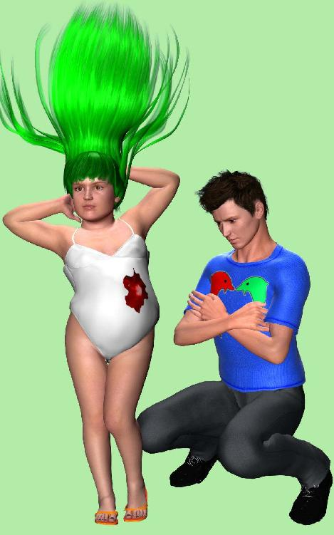
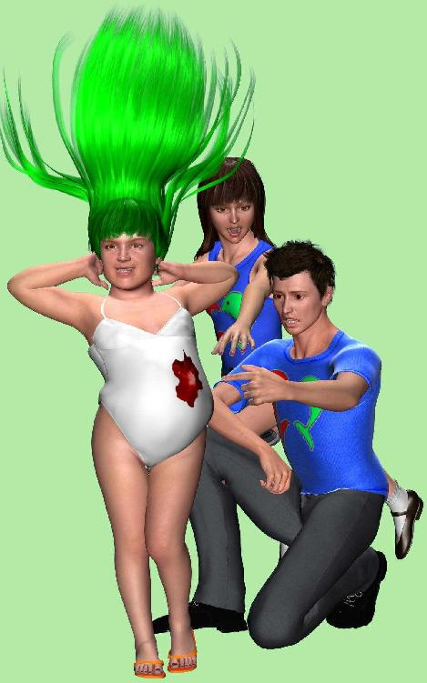
南方タケルがアザミの店へ二回目にあらわれたのは、それから三日ほどしてからだった。最初に仮想社会専用のメールが来て、訪問の日時を指定してきた。それでアザミはリュウとカナちゃんを呼んで待ち構えることにしたのだ。
公園の件で嘘をつかれているみたいだから、土地を売るつもりはない。だけどオンダ万次郎との交渉を有利にするために、相場の三割り増し程度の値段までつりあげておきたいところだ。うまくいけば四割り増し。
それと、カナちゃんが不純まじりの好奇心から本人に会いたがっている。できれば自分の店へ誘導して、他の商品も買って欲しいともくろんでいるようだ。ロマンティッカーの多くはリアルマネーの価値観が壊れているから、高価なバーチャルグッズでもポンと買っていってくれるらしい。嘘つきでも悪人でもこの際なんでもいいから、そういうお大臣をたくさん顧客に持っているかどうかで店の格が違ってくるのだそうだ。
いっぽうリュウは単なる好奇心で来てくれるみたいだった。値段交渉の応援をするよと親切に言ってくれる。
「公園予定地だって嘘をついて引っ掛けようとしたのは感じ悪いけど、あのひとたちも土地の値段を安く値切るための交渉テクニックを使ってるだけなんだからさ、そんなに責めるほどのことじゃないよ。だから逆にこっちも他に買い手があらわれたことを堂々と告げて、駆け引きを有利に持っていかないと」
うんと、アザミは自信なさげにうなずいた。本心をもらすと、地価の割り増しは二割でも三割でも四割でもかまわない。欲が深いわけでもないし、交渉ごとは苦手だから。どちらかというと気になるのは、新しいお店の賃貸料のほうだった。
「四割増し＋テナントショップの賃貸料一年以上無料なら、南方タケルのほうと契約してもいいかもしれないね。何度も何度も交渉ってのは、けっこう精神的に疲れるからさ」
確かにそのとおりだった。交渉を待っている時間というのもじりじりして気持ちがいいものではない。ビジネスで慣れている人ならなんとも思わないのかもしれないけど、素人には少し耐え難いものを感じる。
「でも最終的な判断はアザミちゃんに任せるよ。オーナーなんだから」
リュウの言い方は突き放しているようにも感じられるが、アザミのオーナーとしての自主性と主体性を尊重してくれているのだろう。
南方タケルは約束の時間に違えることなく、時間ぴったりに店の中へあらわれた。前回来た時に座標をセーブしておけば、テレポートパッドやボードがなくとも瞬間移動できるのだ。仮想社会の便利なところだった。
こんにちはと丁寧なあいさつをかわして、アザミはまずカナちゃんを紹介した。
「ああ、あのドレスの製作者。これはお目にかかれて光栄です」
「まっ、光栄だなんてそんな......」
カナちゃんはまんざらでもない。照れたのか頭の葉っぱをわさわささせて、いつもの饒舌なところを控えている。
「あれは我が社のアパレル部門でも注目されまして、ちょっと見せたらその場で強引に持っていかれてしまいました。本当は妻のキャラクターにプレゼントしようと思ったのですけれど」
「あら、奥さんいらっしゃるの？」
カナちゃんはちょっと残念そうに言った。南方タケルは体格がよくて、営業マン向きのさわやかな笑顔をしているから人好きのするタイプだ。だけどこれはあくまでもポリゴンＣＧであって、現実世界の実物がどうなのかはあてにならない。
そんなことはカナちゃんも承知しているはずで、でも好意を抱いてしまったのは、やはり自分が製作したドレスを買っていってくれたからだろう。一万ゴルトの価値を認めてくれたのは、デザイナーとしてのプライドを激しくくすぐる行為だ。これは大きい。
リュウも紹介して、土地の交渉がさっそく始まった。オンダ自動車からレースサーキットの計画があると聞いたのを口にすると、南方タケルは弱ったなという顔をする。
「それはあくまでもオンダさんの予定ですからね。複数の企業が参画していますから、どこも完成予想図はまだ確定ではなく、各社がばらばらに動いている状況なんですよ。我が社としてもまず土地を確保しておいて、それから徐々に本格的な街づくりをと考えておりまして」
メイン企業の杉下電気グループがまずあって、それに他社が勝手にぶら下がっているだけらしい。突っ込んで聞けば聞くほど答えがあいまいで、ちょっとあやしい雰囲気が漂ってきた。二つ星商事は有名だが、かつてはインテリヤクザと呼ばれた総合商社らしく、たんなる地上げなのではとの懸念はあながち間違いでなさそうだ。
公園予定地が嘘か本当かの疑問はとりあえずおいといて、リュウが地価の吊り上げトークを始めると、相手も愛想笑いを浮かべつつのらりくらりとかわしてくる。四割り増しは厳しいみたいだ。
「だったらオンダ自動車のほうに売ったほうが得かな。向こうは相場の三割り増しプラス一年間テナント料フリーなんだから」
リュウの言葉に、南方タケルは困った顔をしている。横のカナちゃんが何か言いたそうな顔をしているが、ぐっと我慢しているみたいだ。相手の味方をするわけにはいかないから。
これでは交渉決裂かとアザミもリュウも考え始めたとき、南方タケルが思いついたように言った。
「よろしければ、サーキット場の予定図を見せていただけませんか」
その言葉にアザミは何も考えずそれを渡した。公園予定図をオンダ万次郎に見せているから、もう片方にも見せておかないとフェアじゃないかなという気がしたのだ。
受け取った南方タケルはしばらくその図を眺めていたが、途中でふと顔つきを変え、おかしいなとつぶやく。何がおかしんだろうとアザミは思ったが、あえて黙っていると聞くより先に相手のほうから教えてくれる。
「オンダ自動車さんのサーキット会場にしては小さいですね。これでもけっこうな大きさですが、それにしても狭い。あそこの売りは実車の試乗を兼ねていますから、少なくとも規模的にはこれの数倍はないと。でないとオモチャのラジコンカー用レース場みたいになって、迫力が全然なくなってしまいますでしょう。仮想現実空間であればこその本格的な臨場感やリアル感が売りなのに」
南方タケルはサーキット予定図を返しながら、交渉を打ち切る気配を見せた。
「ウチとしてはせいぜい相場の二割り増しまでです。それとテナント優先権。三割は厳しいでしょう。オンダさんは少し無茶してますよ。いざとなったら値切ってくるかもしれません、気をつけて」
皮肉とも忠告ともつかない言葉を残して南方タケルは帰っていった。
あとからカナちゃんがため息をついていたが、これは仕方ない。商売人として上得意を逃して不満なのは分かるけども。
＊
二つ星商事の南方タケルが二割り増しまでしか譲歩しなかったのだから、三割り増しのオンダ万次郎との交渉を再開しなければならない。
「どうもこの間は......」
オンダ万次郎のあいさつもそこそこに、リュウが四割り増しまで吊り上げようとしたが、それはさすがにあっさりと断られた。それどころか三割り増しの話はいつの間にか取り下げられ、二割で決めてくれと強気で押してくる。南方タケルとの交渉内容がばれてしまっているようだ。
「二つ星商事さんも、そこまで割り増しはしないでしょう」
いざとなったら値切ってくるとはこのことだったのだろうか。それともひょっとして裏側で二人が通じてしまったのかもしれない。今さらながらそういった可能性もあることにアザミは気づいた。際限なく競争するよりも、適当なところで妥協して裏で手を握ったほうが、結局二人とも得をするのだろうから。
地主に値段を吊り上げられるくらいなら、裏側で談合してとにかく安く土地を購入したほうが利口なのだ。細かい部分は二人だけで、あとからまとめて交渉すればいいのだし。
「もう決めちゃおうか？」
リュウのギブアップに、アザミもそれで了承した。結果は相場の二割り増しと一年間テナント料フリー。少し損した気分だが、アザミとしてはそれほどの不満はない。
約二十九万ゴルトの二割り増しだから、円に換算すれば確実に三十万円以上になる。土地を買った元手の六千円を引いてもだ。おまけに向こう一年間は無料会員で商売ができるから、最低でも年間の有料会員費一万二千円を節約したことになる。
オンダ万次郎と契約書（メモ程度だけど）を作成して、この世界ドゥームゲートを管理しているＤＧＪ社に土地売買の報告をするだけで、とうとう三十万円強がアザミのものに。
「ま、ちょっとリッチな気分になっちゃったわね。うらやましい」
うらやましいというよりもカナちゃんは残念そうだ。サーキット会場のテナント料は思ったより割高で、カナちゃんは出店をあきらめざるをえなかった。そのかわりにアザミのテナントとテレポートパッドで結ばせてくれと向こうから頼んでくる。
「看板も置かせてちょうだいね。ちょっとずうずうしいかしら」
アザミはこころよく了解した。それはこっちも願ったりだ。
上司の決済をもらってからまたうかがいますとオンダ万次郎は言い残し、帰っていった。すぐに契約したかったけど、それはちょっと早急すぎるだろう。相手は大企業なのだから。
二、三日待ってから、契約を交わす前だけど、アザミはまず自分の店の片づけを始めることにした。商品を捨てるわけにはいかないので、大部分をリュウの露店とカナちゃんの高級ショップに預ける。
荷物の移動が済むと、アザミのお店はがらんとしたただの箱になってしまった。ここには二ヶ月くらいしかいられなかったけど、それなりに楽しかったことは楽しかった。商品は全然売れなくて、いつも一人ぽっちでぽつんと突っ立っていただけの場所だったけれど。
きっと新しいレース場にテナントを構えても、また同じなんだろうなとアザミは思った。漠然とした予感で、アザミが商売に向かない種類の人間なのだという自覚くらいはもうとっくの昔に気がついている。
カナちゃんのようにリアル世界でも通用するような特別な才能か、それともリュウのようにずぶとい神経を持っていないと、とてもじゃないがお店のオーナーはつとまらない。ましてや大儲けなんて、それはアザミのように普通の人間にとっては夢物語なのだった。
やっぱりリアル世界と同じなんだわとアザミは声に出してつぶやいた。リアルでうまく生きていけない人間は仮想社会でも適応できない。要領よく立ち回って金をもうけるなんて、アザミにはとうてい無理な話だった。
もっともアザミの場合は土地の売買で少し得をしただけましかもしれない。でもこれはリュウの助けがあればこその幸運だったし、アザミの器量で得たお金ではなかった。やっぱり商売で得たお金とは違うのだ。
その証拠にもう一度これだけのお金を一人で手に入れてみろといわれても、考えるまでもなく不可能だろう。土地ころがしなんて素人には絶対に無理な仕事なのだから。
だからこの三十万円の使い道は、もう決まっている。リアルでちょっとだけおしゃれな服を買って、アクセサリも買って、プレゼントをたくさん買って、そしてリュウを誘って食事に連れて行ってもらおう。もちろんアザミのおごりで。
それでおしまい。全部。
せっかく手に入れたレース場のテナントも、リュウに譲ってそこで商売をしてもらおう。露店には露店の面白みがあるのだろうけど、高級ショップには高級ショップの利点があるのだから、リュウも商売人として嫌がりはしないだろう。
アザミはもう商売からは足を洗って、そうしてこの仮想社会からもサヨウナラをしよう。またこっぴどく負ける前に、ささやかだけど貴重な勝利を汚されないうちに。リュウやカナちゃんと分かれるのは残念だけど、もう負けるのは嫌だから。
「うん、そうしよう」
アザミはひそかに決心した。
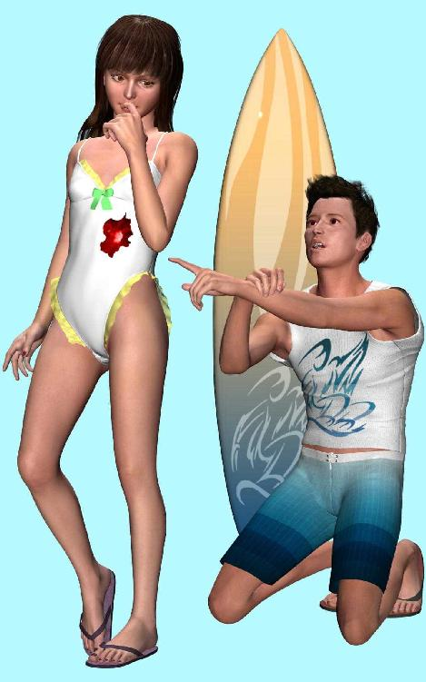
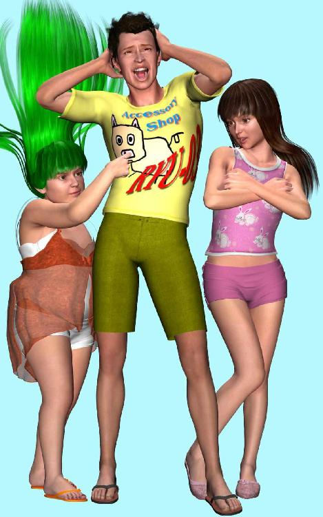
オンダ万次郎からの連絡はなかなか来なかった。お店の片づけが早すぎたかしらと少しだけ商品を戻して展示したが、やっぱり客はこない。例によって外へ出て、道路から自分の寂れた店をじっと眺めていると、店内のテレポートパッドを光らせて突然リュウがあらわれた。
「アザミちゃん、たいへんたいへん」
白いＴシャツに流行の変なメガネをかけて、リュウはぽーんと空中を飛び跳ねながらこちらへ走ってくる。たいへんという動作を体全体で表現しているのだろうか。音声のない世界だからボディランゲージを強調しているのかもしれない。たんにリュウの性格が落ち着きないだけのような気もするけれど。
「土地の相場を確認した？」
ううんとアザミは首を横へふった。
「凄いことになってるよ」
リュウは慌てている。
「凄いことって？」
「相場が上がってるんだ。バブルが始まったのかもしれない。ほら、土地の争奪戦が激しくなれば、自然と相場も上がってくるから」
アザミはリュウの指示にしたがって、パソコンのモニター上に仮想土地相場の情報ウィンドウをポップアップさせた。
「相場はさ、一定の区画ごとに直近の売買取引からサーバーが自動で計算してくれるんだけど、よく考えれば相場の一割り増し二割り増しで土地を買いあさってるやつらがいるわけだから、どんどん上がるのは当たり前なんだよね。彼らもそれを狙ってるんだろうけど。土地ころがしなんだから」
へえとアザミは思った。
「それで、今の相場はどうなってるの？」
アザミは表の見方がよく分からなかった。ごちゃごちゃしたグラフやら聞いたことのない用語がびっしり並んで、画面の文字をじっとみつめているとめまいがしてくる。確か前にリュウから聞いた話では、一㎡五百二十ゴルトだったかしらん？
「だから、このあたりの区画の相場が、いつのまにか一㎡千二百ゴルトになってるんだよ」
「五百二十が千二百ってことは、ええと......」
アザミは計算が苦手だった。
「だから、このお店は五百㎡だろう？ だから五百かける千二百で、六十万。それの二割り増しだから、計算して七十二万ってことさ」
すると約七十万円が手に入る計算になる。本当かしらとアザミは思った。
「でもそれはちょっと上がりすぎなんじゃないの。契約は今の相場じゃなくて、あのときの値段なんでしょ」
「だからさ、まだ契約をかわしてないわけだから、ごねれば千二百までは上がるってことだよ。だってどんどん上がっている途中なんだから、向こうも早く契約を終わらせたいだろうし。こっちが同意のサインをしなきゃ、いつまでたっても売買は成立しないんだからさ」
早めに買って、早めに売るのが土地ころがしのコツだそうだ。資金を回転させてバブルが崩壊するまでチキンゲームを続ける。もっともオンダ自動車は自社のレース場取得が目的だからバブルは関係ないのだろうけど。だからこそ早めに土地を取得しようと焦っているはずだ。
リュウが騒いでいるうちにさっそくオンダ万次郎がやってきた。契約といってもそもそもリアル世界のような法体系は存在しないわけだから、土地専用の売買ウィンドウをポップアップさせて、それに両者が了解のクリックをするだけだ。基本的にはアイテムの交換取引と同じ。
予想通り、相場の解釈を巡って万次郎と少しもめたが、リュウが交渉決裂を匂わせて強気で押し切った。なにせ交渉している間にもどんどん相場が上がっていくのだから、相手も当惑気味だ。ゆっくり考えている暇がないのだから。
最後は一㎡千四百五十ゴルトで契約成立した。五百㎡で二割り増し八十七万ゴルト。
「いやまいりました。ちょっと地価の高騰が異常ですね」
オンダ万次郎はさかんにぼやいた。テナントの件は建物が完成したらまたあらためて連絡するという。こちらは口約束になってしまうが、オンダ自動車なら無茶はしないだろう。
今月中に残りの土地を取得して、建屋の完成は来月末予定らしい。仮想社会だから建築にそれほど時間がかからないのはアザミのお店を建てるときと同じだ。サーキット場の稼動は未定だが、テナントビルのオープンは先行して再来月になるそうだ。
そそくさと帰る万次郎を見送って、アザミはさっそく持ち物ウィンドウを開いた。自分の持ち金を確認してみると、確かに八十七万ゴルト増えている。
「すごいなアザミちゃん、大金持ちだ。これでまた別の土地を買って、僕らもころがそうか」
リュウの冗談なのか本気なのかよく分からない言葉に、アザミは機嫌よく笑った。リュウならばこの資金を元手にしてさらに増やすことも可能だろう。でも試してみるまでもなくアザミにそれは無理。
土地バブルに参加するつもりは最初からアザミにはなかった。バブルはいつか必ず崩壊するから、適当なところで早めに降りた物の勝ちだ。
＊
運営会社ドゥームゲートジャパンの公式サイトから為替取引画面を呼び出し、ゴルトから円への交換を申し込んだ。ＲＭＴでゴルトを買うときは一瞬なのに、逆の場合はどうやら待ち時間が発生するらしい。決済までしばらくお待ちくださいとメッセージがでてそれきりだ。
ゴルトから円への為替レートを確かめれば、０．９２とある。
「それはさ、一ゴルトが０．９２円になるってことだね」
リュウが説明してくれる。アザミのお店は売り払ってしまったから、場所はもうリュウの露店だ。
「じゃあ八十七万ゴルトは、八十七万円にはならないってこと？」
「思ったより安いね。為替にも相場があるから、やっぱり動いちゃうんだ。前はもう少し一に近かったはずだけど、ちょっと円高ってことなのかな」
リュウも少し首をかしげている。
「０．９２だと計算上は約八十万円だけど、そこからさらに手数料をひかれて、手取り七十五万円くらいのはず。それでも大金だけど、どう、もう銀行に振り込まれた？」
「ううん、まだ。申し込みをしたら、しばらくお待ちくださいだって」
「メンテ待ちなのかな」
サーバーメンテナンスで一時的に決済を停止するのはときどきあることだそうだ。
「でさ、換金が終わったら、アザミちゃんはそのお金でどうするつもり？」
リュウに聞かれて、アザミは自分の胸がどきりとするのを感じた。七十五万円といえば大金だ。丸ごとおこずかいにできるとなると夢が膨らむ。
「僕だったらまず旅行に行くかな。それだけあれば海外でも大丈夫だし」
なるほど、リュウは旅行好きなのかとアザミは思った。金額が当初の予定よりも増えてしまったから、焼肉程度では済まされない雰囲気になってしまったようだ。
「海外だったらどこがいいの？」
「そうだなあ、オーストラリアかヨーロッパのイタリア、それともフランスあたりかな」
イタリアということは美術館めぐりが趣味なのかもしれない。フランスだとおいしい料理を求めてグルメツアーかしらと、アザミは勝手な想像をした。
「でもリュウは外国語ができる？」
いいやとリュウは簡単に首を横にふった。
「できないけどさ、今は電子辞書があるだろ。なんとかなっちゃうんだって」
確かに理屈ではそうなんだけど、とっさのときの会話には使えそうにない。会話はまずヒヤリングができなければ無理だから。アザミの耳にはイタリア語もフランス語も英語もみな同じに聞こえてしまうのだった。
「で、その前に、とりあえず焼肉食べに行こうよ」
リアルで？ という言葉をアザミはなんとなく飲み込んだ。聞くまでもない。仮想社会に焼肉屋なんてあるはずないのだから。
アザミはそっとリュウの顔をうかがった。ポリゴンＣＧだからモニターの向こうのリュウ本人がどんなつもりで言っているのかは分からない。冗談で言っているのか、それとも本気でせがんでいるのか。そしてもし本気で言っているのなら、どのくらい本気で言っているのだろう。それはつまり、リュウがアザミのことをどの程度......。
「なんで焼肉なの？」
とアザミはどうでもいいことを聞いてみた。
「近所の店なんだけど、一人で食べに行くとさ、店のオヤジにまた一人なのかって責められるんだ。あいつの鼻をあかしてやりたい」
「ふうん、もっとたくさんお客を連れてこいってこと？」
「うーん、まあそんなところかな......」
リュウは言葉を濁した。
「アザミちゃんも東京なんだろ。うちは山手線の近く、下町だけど」
「私は少し離れてるけど私鉄の沿線。でも意外と近くかもしれないね」
ストーカーが恐いからはっきりした場所は教えられないけど、少なくとも遠距離ってわけではなさそうだ。アザミはなんだかまた少し嬉しくなった。
「決済がうまくいったらさ、お祝いしようよ。僕がおごるからさ。二人きりが嫌ならカナちゃん誘ってもいいし、三人でパーティーしよう。焼肉屋の隣にカラオケボックスがあるから、そこのおごりをアザミちゃんにお願いして、ってのはずうずうしいかな？」
ああ、それならいいかもとアザミは思った。カナちゃんにもお礼を言いたいし、三人ならなんとなく会いやすい。二人きりよりも自然な形でリアルのリュウに会える。
ぜひそうしようよとアザミが承諾の返事をキーボードに打ち込んでいると、突然また別の誰かが話に割り込んできた。
「あなたたちタイヘンよ」
いつの間にかカナちゃんが来ている。
「何が大変なのか知らないけど、ちょうどいいところに来たね」
リュウがのんびりと答えた。対してカナちゃんは少し興奮しているようだ。
「だからタイヘンなのよ。ちょっと前まで物価が上がってて、なんだかインフレ気味ねって思ってたんだけど、とうとう泡々がバチバチ破裂しちゃったの」
バチバチのところでカナちゃんは頭の葉っぱをばちばち動かした。
泡々って何のことか聞き返そうとする前に、リュウが先に言う。
「まさか、もうバブルが？」
半信半疑の聞き方だ。何が起こったのとアザミはせがんだ。
「アザミちゃん、相場情報見てみなよ」
「メニューの土地関係をクリックしてみて」
リュウとカナちゃんのまねをして、アザミも仮想土地相場情報のウィンドウをポップアップさせてみた。アザミのお店のあたりを探してみると、確かに値段が下がっている。一㎡あたり五百ゴルト。
「どこもかしこも暴落。土地だけじゃないのよ、商品も。なんだかみんな狂ったような投売りが始まってるの」
画面のウィンドウを見ているうちにも土地の相場はみるみる下がっていく。一㎡あたりの相場はながめているうち四百を切り、三百を切り、二百の手前でちょっとリバウンドして、二百五十からすぐにまた下がり始め、とうとう二百を切った。
念のためにと他の区画を調べてみても、どこも同じ状態だ。
「何があったんだろ」
「杉下電気が参画をやめたのかしら」
「それだったらワールド全部の地価が下がるってのは変だよね」
土地相場が下がっているのはアザミのお店付近だけではなく、ドゥームゲート全体が地盤沈下を起こしているようだ。
「全然止まる気配がないし、こりゃ大ゴトだ。ただのバブル崩壊じゃないぞ」
リュウが当惑している。古参のリュウが未経験とは普通の出来事ではない。
「あっ、そうだ。アザミちゃんはもう契約して、土地は売っちゃってるのよね」
カナちゃんが聞いてくる。
「うん、もうゴルトになってる」
「なら安心ね。土地売ったあとでよかったわ。へたしたら大損だったじゃない」
カナちゃんもほっとしてくれる。確かにそうだ。
現在の相場は百五十あたりで小休止しているから、仮に今売買したら五百㎡かける百五十で、計算すると七万五千ゴルトぽっち。八十七万ゴルトが七万五千ゴルトになるところだった。気絶するほどの値崩れだ。
ということは逆に考えればオンダ万次郎は大損したわけで、もう少し交渉を長引かせれば安く土地が手に入ったのだから、今頃くやしがっているかもしれない。
少し可哀そうだけど、でもビジネスだからしょうがない。アザミは安堵感半分と罪悪感半分、ちょっとだけほっとした気持ちのほうがまさっている。損するのは誰でも嫌なものだから。
でもさとリュウが言った。
「アザミちゃんはまだ換金してないんだろ」
途端、カナちゃんが蛙のように大きな目をむいた。
「あら、まだ為替の申し込みしてなかったの？」
「したんだけど、メンテ待ちらしいんだ」
アザミは嫌な胸騒ぎを覚えた。そういえば為替レートにも確か相場があったのでは。
「アザミちゃん、すぐ確認してみてよ」
ゴルトから円への決済確認は、いったん仮想社会をログアウトして公式サイトからアクセスしなければならない。現実世界の通貨・円が絡むからだ。それでアザミはすぐ二人と別れてドゥームゲートを終了させた。
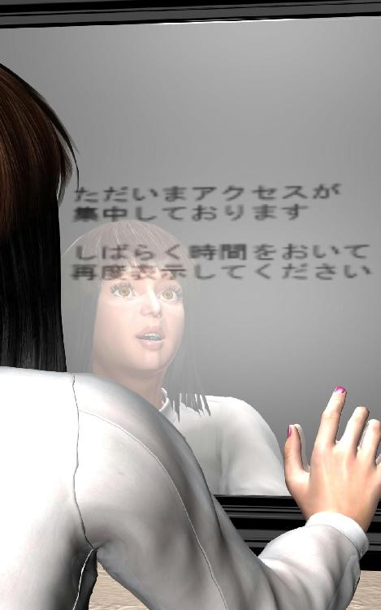
なんだかキーボードを叩く指先が震える。ドゥームゲートの公式サイトはいつもより反応が鈍くなってて、画像表示やページ切り替えがすごく重い感じがした。通信待ち時間にいらいらしながら為替取引画面をみれば、アクセスが殺到しているらしく『しばらく時間をおいて再度表示してください』と簡単な文章が真っ白いページに一行表示されただけだった。
せめて為替相場情報が分からないかしらと他の画面に切り替えてみたけど、トップページのメニューを調べても他に見当たらない。サイト内の検索エンジンにも反応しないし、お知らせのページにあったのは『為替取引がしばらくできません』というお詫びのメッセージだけだ。再開がいつかはまた後日お知らせするとのみある。後日という言葉の雰囲気から、すぐには決済できない感じだ。
おろおろと再び仮想社会へログインすれば、もうカナちゃんはいなくてリュウだけが突っ立っていた。
「どうだった、換金できてた？」
ううんダメだったとアザミは泣きそうになって答えた。
「ページそのものが表示されなくて、取引中止しちゃったみたい」
「なるほど......」
リュウは腕組みして考えた。こういうときでもしっかりソーシャルアクションを実行するのがリュウらしい。アザミはコマンドを選択する気力もうせて、仮想社会の中で直立不動の状態だ。どうしていいか分からない。
私の七十五万円はいったいどうなってしまうのかしらと、アザミは情けない気分で思った。焼肉も、海外旅行も、カラオケも、いったいどこへ。だけどまさかこのままずっと決済されずということはあるまい。世界が消滅するのでない限り、このままずっと換金されないということは......。
そこまで考えて、アザミははっと気がついた。
ここは仮想社会なのだ。世界が消滅する可能性がないと、いったい誰が言い切れるのか。だって仮想なのだから、最初から何もかも実在していないのだ。ハードディスクとコンピューターメモリの中だけに存在する影も形もないあやふやなものの集まり、命も重さも一切ないものばかりでなりたっている空の世界。
どこにあるかも分からないメインサーバーの電源を、会ったこともない誰かが指一本使って落とせば一瞬ですべてが消滅してしまう。再起動してくれる者がいなければもう永久に復活しない、世界そのものが。
冗談ではない。だってここは仮想社会なのだから。
＊
戻ってきたカナちゃんが知人から仕入れてきた情報は、最悪のものだった。
倒産。
「は？」
さすがのリュウも絶句した。
「だから、倒産の可能性ありって噂が立ってるの」
「仮想社会が？」
アザミの恐れていた事態が現実のものに。いや、ここは仮想社会だから現実といっていいのか疑問だが。
「つまりドゥームゲートを運営しているＤＧＪ社が不渡りを出しちゃって、世間じゃもう大騒ぎ」
「なんで不渡り？ ここは評判いいのに」
「事業を拡張しようとして、他のゲームサービスを始めたの。ところがそれがいくつもコケちゃって、新作ゲームがどれも面白くなかったのね。それでお金が回らなくなっちゃって、不渡り」
「でもこれだけ有名なサービスなんだから、せめてこのワールドだけでも助けてくれるところが一社や二社はありそうだけど」
「それも負債額によるわね。いったん全部潰して破産申請したほうが後腐れないでしょ」
それもそうかとつぶやいて、リュウは口を閉ざした。会社が存続する限り借金を返し続けなければならないが、法人であるのなら破産宣告しさえすればすべての借金は棒引きになる。ビジネスの恐ろしいところだ。金を貸したほうよりも借りたほうが強いと、ときにささやかれるゆえんだそうだ。
「ところで不渡りってなんなの？」
今さら聞くアザミに、カナちゃんが答えてくれる。
「大きな会社がリアルで取引するときは、現金で支払うんじゃなくて、とりあえず約束手形を渡しておくのね。で、手形をもらったほうは何ヶ月か後で銀行へ持っていってお金に換えてもらうんだけど、渡した元の会社が資金繰りに失敗しちゃうと、お金に換えてもらえなくなっちゃうわけ。それを不渡りっていうの」
ふうんとアザミはうなずいた。分かったような分からないような、だ。
「それが半年以内に二回繰り返されると、もうその会社には支払能力がないってことだから、銀行取引停止処分を受けて、まわり中からおしまいって判断されちゃうわけね。つまり実質的に倒産確定ってこと」
「もう二回やっちゃった？」
リュウの問いにカナちゃんは首をぶんぶんふった。
「ううん、まだ一回。だけど二回めはもう時間の問題みたい」
「じゃあ、この先私たちはどうなるの？」
二人とも押し黙ってしまって答えてくれない。しばらくしてカナちゃんが思い出したようにささやいた。
「それよりアザミちゃん、例の大金は換金できたかしら？ 私も手持ちのゴルトを円に換えようと思ったんだけど、ページ自体がもう表示されなくて」
「私もおんなじだけど......」
「ゴルトのままってこと？」
うんとアザミはうなずいた。
「あら、それはちょっとショックだわね」
カナちゃんは再び口をつぐんでしまった。リュウもあいかわらず無言だ。三人とも同じように押し黙って、顔を付き合わせたまま言葉を失ってしまった。七十五万円はいったいどうなってしまうのか。
沈黙に耐えられず、アザミはなんとかキーボードを叩いてみた。
「でもお、まだ不渡り一回目なんだから大丈夫だよね。倒産は二回めまで確定しないんでしょ」
リュウが教えてくれる。
「まずだめだろうね。噂はあっという間に広がるからさ。一回不渡り出しちゃうと、もうどこも商売の相手をしてくれなくなっちゃうんだ。このまま倒産したら、貸した金も借りた金も商品・在庫・設備・消耗品、資産全部ひっくるめて裁判所に差し押さえられちゃうから、今このタイミングでお金を貸すヤツなんて絶対出てこないわけ」
「じゃあ私の七十五万円は？」
カナちゃんが頭の葉っぱをゆっくりと上下に動かした。
「さようなら～七十五万円......」
愕然と立ちすくむアザミの目の前で、リュウも優しく唱和する。
「さようなら～焼肉。さようなら～カラオケ」
それで仕方なくアザミもまねをした。
「さようなら～海外旅行」
さようなら、リアルのリュウ......。
＊
二度目の不渡りを出したのは、リュウが言っていたようにその直後だった。すぐにＤＧＪ社は民事再生を申請したが、それがつまり倒産の自己申告を意味するのだそうだ。公式サイトにお詫びの告知がでて、それで一切は終わり。仮想社会だけに簡単なものだ。
だけどドゥームゲート自体はもうしばらく稼動する予定だという。正式に終了するのは一ヵ月後で、それまでは無料開放されるらしい。
そしてけっきょくアザミの八十七万ゴルトは七十五万円にはならなかった。ゴルトから円への為替取引画面はあのまま表示されることはなく、決済も換金も無効となった。アザミの手元に残ったのは、ただの八十七万ゴルト。一ヵ月後には消滅する仮想通貨だから、もはや何の意味もない。
ただし面白かったのは、ゴルトに意味がなくなったため、居残った少数の人たちが商品の投売りを始めたことだった。あるいは何千ゴルトもした高額商品を平気で道端へ捨てていく人が多発したことか。
カナちゃんも自慢のドレスの値札を全部二ゴルトにつけかえた。
「これがホントの店じまいクリアランス売り尽くしセール、出血大サービスよ」
どこが出血してるのかという客の突っ込みに、カナちゃんは堂々と答える。
「私のハートが出血してるの」
突っ込んだ客はなるほどと納得したようすで帰っていく。手ぶらで。一ヵ月後には消滅するから、今さら商品を買っていくつもりはないのだ。
これだけ細密に作られた芸術作品のごときドレスも、すべてご破算。ドゥームゲートに特化した商品だから、データ的にですら外の世界へ持ち出すことはできない。仮想社会の消滅とともに、これらのグッズも自動的に消滅する運命なのだ。
緻密な計算と卓越した感性に基づき、超絶的な技巧によって構築された奇跡の商品群は、もはやその使命を終えたのよと、カナちゃんは芝居がかった態度で天に絶叫した。
「要はせっかく手間と時間かけてつくったコレらをどうしてくれんのよと言いたいわけ！」
カナちゃんの御立腹ももっともだ。
いっぽうリュウの場合はカナちゃんとあいかわらず正反対で、いつもは二ゴルトのＴシャツに二万の値札をつけたら売れたのだそうだ。
「やった、僕のＴシャツが二万で売れたぞ！」
小躍りして喜ぶリュウに、アザミはなんでと聞いてみた。
「新製品を開発したの？」
「そうじゃなくてさ、ほら、みんなゴルトがあまってるから、冗談で買ってってくれるんだよ。ゴルト持ってても、どうせ何日かあとには意味がなくなっちゃってるんだから」
なるほど、究極の無駄使いごっこが始まったのか。
「アザミちゃんもさ、八十七万ゴルトで好きなだけ買い物すれば。カナちゃんの店の品物を全部買い占めてあげたら喜ぶよ。この棚に陳列してある商品をここからあそこまで全部頂戴って」
お金持ちの女性がよくやるぜいたくだ。
そうねえとアザミはちょっと考えた。したくないわけじゃないけど、持ち物ウィンドウがごちゃごちゃになるのは嫌だし、でもどこか適当な場所があれば、そこに飾っておくのも楽しいかもしれない。
リュウの露店は狭いし、カナちゃんの店で買った商品をカナちゃんの店に飾っておくのも変だ。なら適当な場所といえば特に思いつかないけども、アザミのお店はもう売っちゃったし、
「そういえば、私のお店はあれからどうなったのかしら」
アザミはふと思い出してリュウに聞いてみた。
「さあ？ でもまだ残ってるかもしれないね。出てくるときは壊さずそのままにしておいたんだろ」
消すのは一瞬だから、オンダ万次郎にまかせてしまったのだった。
リュウは露店の隅のテレポートパッドを指差した。
「ほら、まだパッドがあるから、これを踏めば瞬間移動できるかも」
「生きてるの？」
「試してみようか」
言いざま、リュウはパッドに乗った。向こうのテレポートパッドが残っていれば瞬間移動できるのだが、はたしてリュウの体が消えた。しばらく待っても戻ってこないので、アザミも思い切って続いてみた。
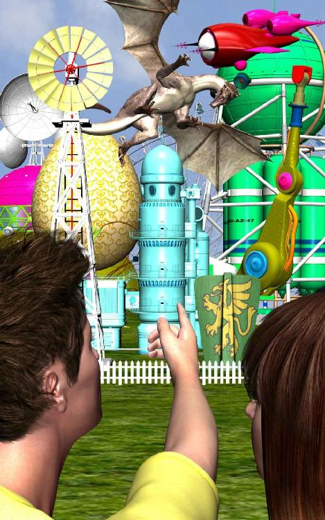
向こうのパッドへの移動は本当に瞬間的で、暗くなった周囲が明るくなったときにはもうそこはアザミのお店だった。ガラス張りでがらんどうの箱の玄関にリュウが立ち尽くしている。こちらへ背中を向けて、何かを一心に見上げている。
「どうしたの？」
とアザミは近づいていった。店の玄関からリュウが見上げている外の光景は、しばらく前にアザミがぼんやり眺めていた町の光景とは似ても似つかないものになっている。
「こりゃすごいね」
リュウが感心したようにつぶやく。アザミも呆然と遠くを眺めた。
以前はなんのこともないごく普通の住宅街だったのに、今前方にそびえ立っているビル群と巨大なタワーはまるでＳＦ映画に出てくる未来都市のありさまだった。しかも楽しげな遊園地や色とりどりの娯楽施設が天空までひしめきあっており、話に聞いていた都市開発がかなり具体的なところまで進んでいたのだ。
「そうか、二つ星商事の開発予定図は、それほど嘘でもなかったんだな」
確かにそのとおりだ。彼方にはドーム型巨大スタジアムの丸屋根も見え、アミューズメントパークの飾りらしき派手なバルーンが何十個も空で揺れている。遊園地に必ずある空中観覧車も、白い雲の浮かぶ青空をバックにして、カラフルな色のボックスをいくつもぶらさげた巨大リングを空高く目立たせている。
いっぽうアザミのお店のあたりはまだ手付かずで、オンダ万次郎がいっていたレースサーキット場はどこにもない。
「けっきょくオンダ万次郎のほうが単なる地上げ屋だったってことなの？」
もうどうでもいいやと思ったけど、アザミはふと思い出していつかの名刺を探ってみた。ネコ型ロボットのポケットではないけれど、持ち物ウィンドウの底のほうからあのときの名刺が出てきた。
『株式会社オソダ自動車 仮想営業部
課長 オンダ万次郎』
なるほどとアザミはつぶやいた。名刺をよく読めば、オソダ自動車と書いてある。オソダ自動車とはつまり、オンダ自動車ではないわけだ。
「古典的な手口だね。てゆうかフツーは最初に気がつくよね」
リュウに遠慮無く指摘されてしまったけど、アザミにとってはもうどうでもいいことだった。会社名が嘘でも本当でも肝心の取引自体は誠実だったわけだから、今さら文句をつける筋合いはない。だいいち本人はもうこの世界にはいないだろう。
地上げ合戦の結末がこんなことになるとは予想できなかった、ともいえない雰囲気で、本当のところはいつかこうなると関係者全員が心の底で予想していたのではないか。現実世界のバブル崩壊で皆が瀕死の重傷を負ったはずなのに、仮想世界でもまたそれを繰り返してしまうとは。
人間は本当にこりない動物だ。
「あ、アザミちゃん」
リュウの驚いた声で、物思いにふけるアザミは我に返った。振り返ると道の向こうから見覚えのある人影がテクテクとこちらへ歩いてくる。
アザミが凝視すれば力ない人影はいつかのオンダ万次郎そのひとだった。まだ消えていなかったとは。
「や、これは奇遇でございますね」
向こうも気がついて愛想良くこちらへ近づいてくる。アザミは反射的にかまえてしまったが、ここは仮想社会だしもう利害関係はないのだから警戒する必要もない。
オンダ万次郎はアザミとリュウ、そして手付かずのアザミのお店を見比べて、あいかわらずの営業スマイルを浮かべた。
「まさかこんなことになるとは私どももうかつでした。どうです、換金は間に合いましたか？」
いいえとアザミは素直に答えた。八十七万ゴルトはまだ持ってますと言って、おもわず自分で笑ってしまった。
オンダ万次郎も嫌味でなく一緒に笑ってくれる。
「そうでしたか、それは残念でしたね。でも私どもはもっと大損ですよ。なにしろ億単位の損失がでたのですから。ゴルトでなく現実世界の円で」
アザミは笑い顔を凍らせた。確かにあの調子でこのあたりの土地を買い占め、それが全部ご破算になったではしゃれにならない。地主に支払うゴルトを調達するために、何億円ものお金を倒産したＤＧＪ社に前払いしていたのだろうから。
「会社が潰れるかもしれません。もっともそれ以前に、私はクビを言い渡されてしまいましたが」
儲かるあてが外れた程度ではなく、金銭的にも職業的にも致命的な被害を被ってしまった人たちが大勢いるのだ。莫大な損失を負って、この人たちはこれからどうするつもりなのだろう。
「ま、地上げをやろうとした報いなんでしょうけども」
万次郎は泣き笑いのような表情を崩さない。まるで翁の能面を顔へ貼り付けたみたいに。
「たいへんですね......。でも、やっぱり地上げ屋さんだったんですか」
この際だからとアザミは思い切って尋ねてみた。対してオンダ万次郎は怒るでもなく、うんざりと疲れた笑みを漏らす。
「地上げというか、土地を買い占めて、それを本当のオンダ自動車に売る、それがダメなら二つ星商事に売る。そういう目論見でございました。オンダ自動車さんからも内々の計画を打診されておりましたので、二つ星商事さんへの対抗上たんに先行しただけで、それほど見当はずれのシノギでもなかったのでございますがね」
ビジネスの世界はリアルもバーチャルも厳しいんだねとつぶやくリュウに、オンダ万次郎は何も言わずに笑った。仮想土地を買うにはゴルトがいる。そのゴルトを得るには億単位の円をまず投資しなければならなかった。その目論見が瞬時にして崩壊するとは、ＲＭＴの恐ろしい一面だ。
しばらく物寂しい沈黙があって、それを取り繕うように万次郎が口を開いた。
「この世界もあとわずかですから、私はもう戻ってこないつもりです。会社をクビになったらリアルで就職活動を始めないと」
アザミは慰める言葉を思いつかなかった。仮想社会が潰れれば仮想であるにもかかわらず、それは確実に現実世界の人間に影響を及ぼす。それも人生を狂わすほどの致命的な影響を。このワーキングプアの時代に年配者が就職活動とは、他人事ではない。
もっとも地上げ屋をやっていたくらいだから、それなりの覚悟も経験も持っているのだろうけど。
「そうだ、せっかくですからあなたのお店をお返ししておきましょう。あのときの金額、八十七万ゴルトで、どうですか？」
いきなりの申し出にアザミは面食らった。あのときの取引の逆をもう一度しようと誘っているのだ。でもせっかく手に入れた八十七万ゴルトを手放すのは少し惜しい気がする。アザミは返事につまった。
「どうせそのゴルトもこの仮想社会とともに消滅です。この土地と、あなたのお店とともに。そうでしょう？」
万次郎は頬にあの営業スマイルを浮かべて誘いを続ける。
「そして私も、あなたも、すべて一緒に消えてしまうのですから」
万次郎の瞳に少しいじわるな光が浮かんだ。ポリゴンＣＧなのだから、そう感じただけなのだが。
アザミは迷った。どうせ消えてしまうのなら、確かに八十七万ゴルトよりアザミのお店と一緒に消えたほうがいいのかもしれない。少しの間とはいえ喜怒哀楽をともにした思い出がある。打ち上げ花火やレーザー光線で、リュウやカナちゃんたちと大騒ぎした初日のパーティーが懐かしい。
「もう価値のないたった八十七万ゴルトで、あなたのお店が戻るのですよ」
万次郎が誘う。アザミの目の前に、自動的に取引用のウィンドウがポップアップした。土地の取引売買画面だ。左側に万次郎が用意した土地の権利書が表示されている。その右側へアザミが八十七万ゴルトをドラッグ＆ドロップし、両者が了承のスイッチを押せば、それだけで取引は成立する。
「今回の騒動で、私は仮想社会が嫌になりました。愛想が尽きましたよ。会社にも、仕事にも、私自身にも。さあ、私はこの取引が終わればもうこのキャラクタを消して、二度とここへは戻ってこないつもりです。手持ちのゴルトもすべて消して。あなたの八十七万ゴルトと一緒に」
アザミは迷った。だけどどうせこの八十七万はもう意味がないのだし、それよりもかつてそこで暮らしたお店が懐かしい。嫌な思い出もけっこう多いけれど、どうせ消えるのなら手元に置いといて、一緒に消えたいような気もする。
もう少しだけ迷ってから、アザミは八十七万ゴルトを取引ウィンドウにセットした。
「アザミちゃん、やめたほうがいいよ」
ふいに横からリュウが口をだす。
「どうして？」
「だってまだ何日か残りの日数があるわけだから、その間に為替取引が再開したらどうすんの」
「え、どういう意味？」
「有料会員費を長期前払いしてる人たちがいるだろ。前払いは受けるべきサービスをまだ受けていない預かり金なわけだから、その人たちだけ返金処理を優先してくれる場合があるんだ。そのとき一緒に為替取引が再開される可能性が残ってるんだよ。ゴルトから円への換金が、ひょっとしてまだできるかもしれないんだ」
アザミは驚いた。オンダ万次郎の営業スマイルを凝視する。それなら万次郎はまた嘘をついてアザミを引っ掛けようとしたのだろうか。
だが万次郎の笑みは崩れない。仮面をつけたように。あたりまえだ、ポリゴンＣＧなのだから。
「お言葉ですが」
と万次郎はささやいた。
「たとえ為替取引が再開されたとしても、もう相場が滅茶苦茶でしょう。ゴルトから円への換金が一方通行で行われるわけですから、売買相場が成立するはずございません」
「いやそうとも限らないよ。倒産した株だって最後はマネーゲームが始まるのだし」
リュウの反論に、万次郎は笑みを浮かべたままうなずいた。
「確かにおっしゃるとおりでございます。一株五万円十万円した株も、倒産してしまえばゼロ円。ですがその直前の整理ポストで、株式市場恒例のマネーゲームが始まるのでございましたね。何ヶ月かの期間限定で、最後は一円二円のババ抜きが延々と続くものです」
じゃあやっぱりこの男はまたアザミを......。
「ですがそれは売り買いが双方向の場合に成立するマネーゲームであって、今回の場合はゴルトから円への一方通行でございますから、それは成り立ちません。円のまま管理している預かり金の返金処理とは違って、ワールド内に眠っているゴルトは莫大な金額ですから、為替取引の再開はもうないでしょう。会社に余分な円がないからこそ、不渡りを二度だして倒産確定したわけでございますから」
なるほど、その通りだった。余分なお金が銀行口座になくなってしまったからこその倒産なのだ。今さら換金は考えられなかった。
「いえ、無理にすすめているわけではございませんよ。ただ無意味になってしまったゴルトを守銭奴のように抱えているよりも、せっかく作ったご自分のお店を手元へおいておきたいのではと。私も、どうせなら愛着をお持ちでしょうご本人様へお返しできたらと、ふと思っただけでございますから」
万次郎は自嘲的に笑って取引画面を消した。
「私もビジネスマン、無料というのはプライドに反しますから、ただでお返しするわけにはまいりません。ごめんなさい」
リュウとアザミの態度から取引はないと考えて、あきらめたのだ。
では失礼いたしますと、それ以外はもう何も言わず、オンダ万次郎は頭を下げて踵を返した。リュウに詐欺師のような扱いをされて不本意のはずなのに、そんな態度はおくびにも出さない。
歩き去る万次郎の背中はもう丸くなっている。ビジネスマンではなく、もはや力なくうなだれるおじいさんのように。敗者に仮想も現実も関係ない。老兵はただ消え去るのみだ。
もっとも消えた人間がその後どうなるのかは分からない。老兵は死なずともいうが、それは静かな死に場所を求めて最後の力を振り絞り、誰も知らない遠い隠れ場所で身を横たえるまでのことなのかもしれない。
その寂しそうな小さな背中へ、アザミは思わず声をかけた。
「ああオンダさん、待って、やっぱり取り引きする」
隣のリュウがのけぞる。アザミの心変わりに驚いたのだ。
「え、どうして......」
振り返った万次郎の瞳がまた強く光ったような気がした。慌てて止めようとするのはやっぱりリュウだ。
「やめなよ、八十七万なんだよ」
オンダ万次郎は無言で土地の取引画面をポップアップさせた。さあどうぞと、アザミを黙ってみつめる。顔にべったりと張り付いた営業スマイルはまるで愛想のいい悪魔のようだ。
だけどアザミはそれ以上何も考えずに八十七万ゴルトをそこへのせた。ためらいもなく了承のスイッチを押せば、画面には取引が完了したと一瞬で表示される。持ち金の八十七万ゴルトが消え、土地の権利書が持ち物ウィンドウに移った。これでお店を含めたこの土地が元通りアザミの物になったのだ。
「ゴルトとはいえ大金を失って、後悔はなさいませんか？」
からかうような万次郎の念押しに、アザミははっきりと答えた。
「しないわ」
その返事に万次郎は一瞬で笑みを消した。彼らしくない奇妙な真顔をみせ、光る目でアザミの瞳の奥をじっと覗き込み、ゆっくりとささやく。
「あなたはよい取引をされた。幸あらんことを」
最後に一つ、オンダ万次郎はていねいに膝まで深くお辞儀して、そのままの姿勢ですうっと消えていった。ワールドからログアウトしたのだ。キャラクタを消去して、この仮想社会へは二度と戻ってこないとついさっき言っていたばかりだった。
老兵なのか悪魔なのか、いったい彼は......。
でもそんなの関係ないわと見送るアザミに、リュウはがっかりしたようなアクションをしてみせた。
「アザミちゃん、少しくらい値切ればよかったのに。このお店に八十七万ゴルトの価値はないよ」
「あら、絶対あるわ。八十七万円の価値はないかもしれないけど、八十七万ゴルトの価値ならちゃんとあるでしょ」
「価値なんてないさ、だってゼロ円なんだし」
「ほら、どうせゼロ円なら、ゴルトよりこのお店のほうが素敵じゃないの」
アザミは振り返って自分の店を示した。ガラス張りのショウウィンドウが空っぽの寂れた店だけど、屋根の上にぴかぴか光る看板がまた自分の物になっただけでも少し嬉しい気がする。
『ＧＩＦＴ＆ＰＲＥＳＥＮＴ アザミのお店』
悪趣味なネオンサインも今みればそれほど悪くはない。
「ね？」
アザミが笑顔をみせる。対して冴えない顔のリュウは、言い負かされたようにうーんとうなった。
「そりゃそうかもしれないけどさあ......。でもさ、どうして取引したの」
質問されて、でもアザミは黙っていた。ヒントはプライドだ。プライドという言葉を万次郎は口にした。その言葉に動かされてアザミは取引をしたのだ。最後にひとつだけ、お互いにプライドのあるビジネスをしたのだった。
仮想社会ドゥームゲート最後の日に、カウントダウンパーティーをやろうとリュウが言い出した。場所はもちろん買い戻したばかりのアザミのお店だ。
「やっぱり買い戻して正解だったね。パーティー会場にちょうどよかった」
この間とは正反対のリュウの言葉に、アザミは苦笑した。
二ゴルトでどっさり買ったカナちゃんのドレスや水着、リュウのＴシャツが、パーティー飾りの代わりに店内所狭しとディスプレイしてある。リュウの露店じゃ狭いし、カナちゃんのビル内では雰囲気出ないし、屋外に広いスペースの庭を持つアザミのお店はパーティー会場にぴったりだ。
リュウの友人の花火職人が、あまった打ち上げ花火を全部持ってきてくれた。カウントダウンまで火をつけまくって、壮絶なまでの夜空になる。火花が雨のように降ってきて、このままアザミのお店が燃えちゃうんじゃないかと思えたほどだった。
大輪の花が夜空にいくつも咲き、その向こうに未来都市ふうパビリオンが林立している。有名レジャーランドのナイトショーを眺めているような気もして、夢のようにきれいな光景になった。
連発式の打ち上げ花火が夜空で続けざまに光って、滝のような火花がざあっとオーロラのようなカーテンを垂らす。だけど頭の真上で破裂しているので、もはやきれいなのかなんなのかよく分からないほど派手な状態になっている。
遠くに打ち上げられた花火を離れた場所から眺めるのが風流なのに、発射地点の真下では目がちかちかしてそれどころではない。
「アザミちゃん、どうこれ？」
ふいに背中から声をかけらて、アザミは振り返った。火花のシャワーを浴びながら気取ったステップでこちらへ近づいてくるのは、痩せた長身男性のシルエットだ。すらりとしなやかな体型はリュウだろうか。彼より背が高くて、少し違うような気もするけど。
ようやく花火のシャワーが降り止んで、星明りの中に姿をあらわしたのは見たことのない男の人だった。赤いメッシュに染めた長髪を白いスーツの両肩へ垂らし、痩せた頬の輪郭から高い鼻と尖った顎の線が印象的だ。
「新しいボディ、アザミちゃんのために着てきたのよ」
いったい誰ですかと聞きかけて、そのしゃべり方で気がついた。
長身長髪の男はまるで宝塚の舞台で主役をはるスターのようだ。男性というよりも男装した美しい女性にみえる。
「カナちゃん？」
「あたり」
ポリゴンＣＧだから別キャラを作ったのだ。表面のスキンを変えただけでは体型まで変わらないだろうから。でも外見がどんなに変わっても、中身はカナちゃんだ。
「最初に作ってそのままうっちゃってたのを、思い出して着てみたの」
「ちょっとカッコいいかも」
アザミはよいしょしてみた。だけどまんざら嘘ではない。頭から緑色の葉っぱを揺らしているパイナップル蛙（ごめんなさい）みたいなカナちゃんより、この姿のほうがずっと素敵だった。人は外見ではないけども、仮想社会なんだから不自然な美化もここではアリだ。
カナちゃんは気取った仕草で背中からワイングラスを二つ取り出し、片方をアザミに渡した。
「バーチャルだから飲めないけど」
「雰囲気だけね」
二人で乾杯して、アザミはグラスを口につけて飲むふりをした。フェイクなのにグラスを傾けるとそれにつれて中身がちゃんと減っていく。かなり凝ったグッズだが、これもすぐに消えていく運命だった。
「私たちってはかないわね。もうすぐ消えちゃうなんて。みんなリアルに戻るだけで実際に消滅するわけじゃあないんだけど、でももうこの姿では二度と会えない。現実とは違うキャラクタを作ってる人もいるわけだし、そういう人はもう本当に消えていなくなっちゃうのよ、残酷だわ」
アザミは微笑してうなずいた。ＳＦ映画でよく見るような世界の終わり。それを実際に体験するのはヘンな気分だ。仮想世界だからこそ気楽な気持ちでいられるけど、確かにもう二度と会えない人もいる。
リアルの素性を隠している人は多いし、性格を誇張して演技している人もいる。この世界での外見を外へ持ち出すことはできないし、そういった特別なキャラクタを持つ人たちとは本当にもうこれっきりなのだ。
「ねえ、ひょっとして死ぬときってこういう気分なのかしら」
どういうわけかそんな言葉が、ふとアザミの口からこぼれた。
「死ぬとき......？」
カナちゃんはちょっとだけ身じろぎして、長いこと何も言ってくれなかった。答えあぐねているのだろうか、それでアザミはなんとなく言葉をつむいでみた。
「私が消えちゃうんじゃなくて、私はまだ全然生きてるんだけど、でも世界だけがなくなっちゃう。世界がなくなるかなくならないか、なんてのはもうどうでもよくて、とにかく自分はどこか他の遠い世界へ逃げていける。死ぬときってそんな気分なのかな」
カナちゃんはしばらく黙っていたけれど、少し小首をかしげて口を開いた。
「どうなのかしら。死にたいって思ったことはあるけど、実際に行動を起こしてないからよく分からないわ。だけど私たちは消えたいんじゃなくて、逃げたいのでもなくて、ただ世界のほうで勝手に消えちゃうわけだから、ちょっと違うんじゃないのかしら。だって私自身は消えずにリアルへ帰っていくだけだし、ゲームをログオフしてパソコンの電源を切るなんて毎日繰り返してることじゃない」
「うん、でも今まではまた翌日パソコンをつければここへ戻ってこれた。でも今回は違う。もう二度とこの世界へは帰ってこれないのよ。そして誰とも二度と会えなくなる。だって世界全部が消滅しちゃうんだから」
少し恐い感じがするとアザミは思った。世界が勝手に消えるのではなく、本当はどこか遠くの場所にちゃんと存在していて、世界から嫌われた自分だけが外へ放り出される。そんな気もした。
「大丈夫よアザミちゃん」
カナちゃんはアザミを元気付けるよう微笑んだ。
「この世界が終わっても、まだ他の世界はいっぱいあるんだから。次の世界へ生まれ変わって、また違う人と出会えるのよ。それで違う人かと思ったら、実は前の世界で知り合いだったの。本人同士が気づいてないだけで」
ふうん、まるで輪廻転生みたいねとアザミはつぶやいた。
「リアルだってあるし、他の仮想社会もいっぱいあるんだから、とりあえず今を普通にすごして、また明日なにするかゆっくり考えればいいのよ。死ぬのとは全然違うから」
消えるにせよ逃げるにせよ、嫌うにせよ嫌われるにせよ、他の世界は無数にある。本だって映画だってＴＶだって、コンピューターじゃなくてもそれはつまり仮想の世界なのだ。逃げ場や隠れ場所はこの宇宙のいたるところ無限にあるのだから。
＊
「それでね、アザミちゃん、あなたはこのワールドが終わったら、今度はどこへ行くつもり？」
突然の質問をされて、アザミは返事に困った。
「みんなもう次の世界を決めてるわよ。あなたはどうするの？」
どうするのと聞かれてもアザミには答えられない。次の場所なんて考えていなかったし、この世界が消滅したら、アザミは現実世界での生活を元通り続けるだけのつもりだったから。
「実は私......、これは他の人には内緒ね、だけどアザミちゃんにだけ教えてあげる。私ね、実はもう新しい仮想社会へ誘われてるのよ」
カナちゃんはそっと周囲をうかがう仕草をした。
「ほら、私ってばさ、自分で言うのもなんだけど、リアルでもそこそこ有名な、あらやだ有名だなんてそんな、おほほほほほ」
カナちゃんは勝手に言って勝手にひとしきり笑って、そのあと真顔に戻って話を続けた。
「ちょっとは名の知れたプロのアーティストでしょ。だから引く手あまたってわけじゃないんだけど、ある商社からぜひ次のワールドへ出店してくれないかって、超内密で打診されてるの」
自慢ぽいけどそれほど嫌味に聞こえないのはカナちゃんの人徳だろうか、本当に自慢できるほどのスキルを持っているのだから。アザミは素直に喜んだ。
「へえ、すごいじゃない」
「それでね、その商社の人が言うには、新しいワールドが稼動したら、会員費も賃貸費もすべて無料で、テナントスペースの大きいやつを用意してくれるって話」
カナちゃんの作ったドレスなら確かにどこの世界でも受け入れられるだろう。パソコンゲームにおいてグラフィックの比重は大きいから、見た目の良し悪しでもって仮想社会への入会を決める人たちも多い。服飾デザインはゲーム全体の評判を左右するほどの重大な基本要素なのだ。
カナちゃんのように素敵なドレスを作製できるスペシャリストは、どこのゲーム運営会社からも引く手あまたなのだった。
「ところが、そのテナントスペースが予想以上に大きいのよね。一人では経営できないくらいに」
ふうんとアザミは思った。ビルのワンフロアを全部任されるとか、そういう豪勢な話なのだろうか。なんかうらやましい気がする。ドレス作成の腕を見込まれて、そんなに期待されているなんて。
カナちゃんはしばらく口を閉ざして、遠くの景色へ視線をずらせた。ときおり光る花火に照らされて、整った横顔がまるでロマンティック映画のワンシーンのようだ。その美形顔で、つっとアザミの目を正面から見つめ、カナちゃんは口を開いた。
「アザミちゃん、私と一緒に新しいお店始めない？」
いつもの蛙顔とは別人だから、アザミは少し息を飲んでしまった。
「パートナーが欲しいの。安心してお店を任せられる。どう？」
どうと言われても突然すぎて答えられない。アザミは口ごもった。
「でも、私じゃあんまりパソコンに詳しくないし、デザインもビジネスも素人だし」
「素人でいいのよ。パートナーなんだから、やる気さえあれば」
カナちゃんは熱心に誘ってくる。だけどアザミは考えるまでもなくお断りした。
「ごめんなさい。私、カナちゃんのお手伝いは無理だと思う。だってカナちゃんすごすぎるから、プロなんだもの」
「だ、か、ら、パートナーなんだから、デザインもビジネスもパソコンも関係ないの。気が合うかどうかなのよ、ね、私の言ってること分かるかしら？」
といわれても分からない。アザミは言葉を失ってしまった。なんだかカナちゃんは真剣だ。
「私ね、リアルでも仕事が忙しくなっちゃったの。一人暮らしだから私生活もてんてこまいで、もう大変、うっかり気を抜くと発狂しそうなの。発狂よ、分かるでしょ」
ヒステリーならぬオステリーのこと？
「だから、誰かに私自身をしっかり管理して欲しいの。勝手なお願いだけど、そういった意味でのパートナー。私の言ってる意味、分かってくれるかしら」
アザミは、でもやっぱりごめんなさいと頭を下げた。カナちゃんは恐いほど真剣だけど、軽い気持ちでその願いを聞くわけにはいかない。アザミにはアザミの思いがあるのだから。
「もう一度聞くわ、これが最後よ。そしてこれが本当の私の姿なの。よく見て、よく考えて、しっかりと答えて頂戴。私はリアルでもバーチャルでも引っ張りだこの人気プロデザイナーなのよ。リアルでの年収二千万円、東京六本木に広大な事務所を構える超一流の有名アーティスト、それが私なの。その私がお願いしてるのよ、私のパートナーになってちょうだい！」
アザミは即答で頭を下げた。
「ごめんなさい」
カナちゃんは全身で崩れるようにずっこけた。減り込むように地面へ倒れたままもう動かない。ポリゴンの地面に顔面が半分方埋まって、うつぶせに両手両膝を地面につき、お尻だけを上へ突き出している。ＯＲＺ？
アザミはおそるおそる腰をかがめ、地面の奥に沈んでいるカナちゃんを抱き起こそうとした。
「大丈夫？」
カナちゃんは自分でのっそりと起き上がった。視線が虚ろでかなりの精神的ダメージを受けたようだ。
「もうダメ、さようなら、楽しかったわ......」
カナちゃんはふらふらと去っていった。寂しくうなだれる背中を見送っていると、タイミング悪くこちらへ走ってくるリュウとすれ違う。カナちゃんが発作的にリュウを襲うような仕草をみせたので、驚いたリュウが慌てて身を遠ざけた。だけどふりをしただけらしく、カナちゃんはそのまま去っていく。
びっくりした様子のリュウがこちらへ逃げてきた。
「あれ、今のひょっとしてカナちゃん？ 珍しく機嫌悪かったね、どうしたの？」
「別になんでもないけど......」
アザミは言葉を濁した。まだよく事態を把握できていない。
「リアルバージョンのカナちゃんを久しぶりで見たな」
「いつもと全然違ってて、びっくりしちゃった」
「でもあれが元々のルックスだよ。リアルのオフ会で昔会ったことがあるけど、本当にあんな感じ」
オフ会というのはつまり現実世界での親睦会のことだ。実際に本物の姿を確かめると、バーチャルのポリゴンキャラとはまた違った驚きがあり楽しみが発生するから、パソコン仲間の間でよく行われる。
「まるで外人タレントみたいだったけど」
「そうそう、リアルの女の子にもてちゃって大変。しゃべらせるとカマっぽいのがアレだけどね」
ところでと、リュウはさっそく話題を変えた。世界が消滅する直前でみんな忙しい。各自知り合いとの最後のお別れで右往左往だ。
「もうすぐカウントダウンが始まるよ。ゼロと同時に全員で別れの言葉を叫んで、そこで接続切れ。ただそれだけなんだけどさ」
時間切れまでもうほんの数分らしい。
「最後にすることがあるんなら、今のうちだよ」
「うん......」
最後に叫ぶべき言葉は決まっている。焼肉食べたーい、だったっけ。ちょっと違うような気もするけど細かいことはこの際気にしない。だけど最後にすることまでは考えていなかった。
リュウとメールアドレスの交換をしたから、単なるおしゃべりならこの先いくらでもできる。仮想社会ドゥームゲートが終了するまでの数分間でできることといえば......。
「ねえほらアザミちゃん、あの作りかけのタワーさ、変じゃない？」
リュウが突然おかしなことを言い出した。
リュウの指が工事途中の建物群をさしている。
「変ってなにが？」
アザミは興味もなくそちらの方向を見上げた。完成すれば目を見張るような未来ＳＦふう摩天楼都市になったろうに、すべて無駄になってしまった。もはや消えるのを待つだけのゴーストタウンだ。
オンダ万次郎もクビになりそうなことを言っていたが、二つ星商事の南方タケルのほうはどうなったのだろうか。こちらの総合商社は土地を取得しただけではなく建設まで始めていたのだから、もっと厳しい損失を被っただろうに。
「でもあのタワーさ、この前見たときよりも高くなってるんだよね。倒産が決まって、お店を買い戻したばかりのときよりも」
リュウは少し気になるなといった態度で、彼方のひときわ高い骨格だけの尖塔を見つめている。
「手前のビルのせいぜい倍くらいの高さだったのが、今は三倍以上に伸びてるし」
アザミはどれどれと指先の尖塔を見てみたが、よく覚えていない。
「気のせいじゃないの？」
リュウは首を傾げる。
「いや、確かに大きくなってるんだよね。あれだけじゃなくて、なんだかビルの数自体も増えてる気がするし、そこら中にある看板のイルミネーションや壁の塗装も派手になってるような気がするんだけど、気のせいかなあ......」
まだ都市計画の建設工事が進行しているってことなのだろうか。もうあと数分で消え去る運命の世界なのに、それは確かに不自然だ。
「ま、いいか、そんなこと。どうせもうこのワールドは終わっちゃうんだから、僕らには関係ないよね」
アザミは軽くうなずいた。確かにそのとおりだ。総合商社のやることなんてよく分からない。
「でさ、アザミちゃん、君はこのあとどうするの？」
さっきのカナちゃんと同じことをリュウは聞いてくる。
「僕は次の仮想社会を試して、いいところだったら、そこでまた露店を続けようかと思ってるんだけどさ」
アザミは少しためらって、カナちゃんのときには言えなかったことを口にした。あとからメールで知らせるつもりだったけど、この機会にはっきりさせておいたほうがいいのかもしれない。
「私、もう仮想社会へ入るのはやめる。だからバーチャルのリュウとはお別れね」
リュウはしばらくの間無言で、いつものリアクションを少しも返してくれなかった。
「......なんで？ ゲームはもう飽きちゃったの？」
「飽きたっていうか、だって私、商売には向いてないし、もうそろそろ現実世界へ帰るわ。いつまでもお遊びばかりしてられないし、ほら、私そんなに若くないから」
「年齢なんて関係ないって、四十・五十で堂々と遊んでいる人たちだってけっこう多いんだよ。最近じゃ定年退職したお年寄りだって参加してるんだ。意外とパソコンとインターネットは家庭に入り込んでるんだから」
確かにそういう話は新聞やテレビのニュースでよく聞く。
「それに商売が無理そうなら、たんなる趣味として続けたら？ パソコンの中だけの友達が嫌なら、リアルで友達になればいいんだからさ、そうだ！」
いきなりリュウが叫んだ。
「アザミちゃん、一緒に焼肉食べに行こうよ、あのオヤジの鼻の穴をあかしてやるんだった」
アザミは少し胸の奥がうずいたが、それを押さえつけるようにしてキーボードを叩いた。
「でも、もう会わないほうがいいんじゃないかな。私、実はオバサンだから。私さ、無理して若い娘のふりしてたの。リュウにデートしてもらえるほど若い女の子じゃないのよ。今まで黙っててごめんなさい」
「え、結婚してたの？」
「それはしてないけど......」
リュウはしばらく沈黙して、やがて決心したように言った。
「いいさ、歳なんて関係ないって言っただろ。僕だってオッサンだ。君がたとえ百歳のおばあちゃんでもかまわないから、リアルで会おうよ」
リュウの言葉は嘘ではないだろう。彼の性格には少しちゃらんぽらんなところもあるけれど、悪意でもって嘘がいえる種類の人間でないことくらい分かる。
「焼肉食べて、カラオケ行って、もちろん僕が全部おごるからさ。そのあと僕の家へ遊びにきなよ。実はさ、家がリアルで古着屋やってるんだよね」
へえとアザミは少しだけ驚いた。リュウの私生活に関する話を聞いたのは初めてだったのだ。
「親の店なんだけどさ。もうそろそろ歳だし、僕に跡を継いで欲しいみたいなことを言ってくるんだ。今どき古着屋なんて嫌だよって言ったんだけど、よく考えたら店の隅っこにコーナー作って、そこに新品のＴシャツを並べたらどうかなと思うんだよね。もちろんリアルの」
そうか、リュウがＴシャツにこだわっていたのは、家の商売の関係なのだ。リアルの古着屋だと自分でデザインできないけど、バーチャルなら簡単にデザインできるから。
「あとを継げってほど親も歳とってないはずなんだけど、つまりそれは誰かいい人みつけて、そろそろ腰を落ち着けろって意味なんじゃないのかな」
そこまで言って、リュウは突然口を閉ざした。次の言葉をためらっている雰囲気がある。バーチャルで不思議な話だが、確かに時空を超えて伝わる感情というものはあるのだ。
「だからさ、アザミちゃん......」
真剣な顔でリュウがアザミをみつめたとき、頭の真上でいきなり強烈な花火が光った。
「六十秒前！」
と誰かが叫ぶ。カウントダウンが始まったのだ。あと六十秒でこの世界は消滅する。
「だからさ、アザミちゃん......」
リュウが焦った表情で同じ言葉を言いなおす。
「僕と、リアル世界で......」
「お取り込み中失礼します」
突然誰かの声が背中からかけられ、リュウが大口を開けたままセリフを中止した。
振り返った二人が見たのは仕立てのいいスーツにさわやかな営業スマイルを浮かべたビジネスマン、南方タケルだった。二つ星商事のバーチャルトレーダーを名乗っていた男だ。
「お久しぶりです。間に合ってよかった。もうあきらめていたのですが、このお店から派手な花火が上がってると聞いて、慌てて飛んできました」
背中からコウモリのように巨大な翼が出て、一瞬で消えた。冗談ぽいが飛んできたというのは本当らしい。
リュウが不満そうな態度で何かを言いかけるが、来訪者の話し相手がアザミだと悟り大人しく口をつぐんだ。
「一分しかありません。ですからアザミさんに端的に申し上げましょう。最後のビジネスにうかがいました。できれば即答してください」
何をですかとアザミは思った。キーボードで質問を叩く前に、時間がないせいか南方タケルは一方的に話しかけてくる。
「あなたのお持ちの土地全部を、八十七万ゴルトではなく、八十七万円で売っていただけませんか」
「は？」
とアザミは即答した。南方タケルは冗談を言っているふうではない。だけどもうすぐ消滅する仮想土地を八十七万円で売ってくれとは意味が分からない。しかもゴルトではなく円だと言う。
「だって為替取引はもうできないんでしょ、だから円にはなりませんよ」
アザミの返事に、南方タケルは答える。
「おっしゃるとおり、ゴルトにもう意味はありません。不動産と違い、仮想通貨は無効化すると社内会議で決定済みですので。ですから今ここでとりあえず土地取引だけ八十七万ゴルトで決済しておいて、あとはインターネットのメール経由で、私が責任を持ってちゃんとした電子マネーを送らせていただきます。口約束になってしまいますが、それは私を信用していただくほかありません。天下の総合商社、二つ星商事の社員であることに間違いはないのですから」
アザミとリュウは顔を見合わせた。時間がないせいかタケルのセリフは異様に早口だ。嘘をいっている雰囲気はない。だけど話の内容が理解できない。だってこの仮想社会ドゥームゲートはもう消滅してしまうのだ。その仮想土地を、しかもアザミのお店の五百㎡ぽっちを今さら八十七万円（！）で買うなんて、冗談にしても意味が分からない。
「地上げ屋のオンダ万次郎氏から一括して購入するつもりだったのですが、突然ワールドから姿を消してしまって。リアル世界でなんとか探したところ、あなたにすべて売り払ったと聞いて仰天しましたよ。もっと早く交渉すればよかったのですが、買い叩くタイミングを間違えてしまった」
「三十秒前！」
どこかで誰かが怒鳴っている。また一つど派手な花火がすぐ頭の上で光って、南方タケルが飛び上がった。アザミが花火の発射装置を確かめると、カナちゃんがこっちを狙って撃っているのだった。
バーチャルだから怪我はしないが、さっきの仕返しだとしたらあんまりだ。
「さあ、もう時間がありません。取引してください」
アザミの画面に土地取引ウィンドウが強引にポップアップした。左側に八十七万ゴルトともう一枚、何かのメモがのっている。
「個人的な誓約書です。この仮想社会が終了しても、後日必ずあなたのメールサーバーに電子マネーをお送りします。二つ星商事はＤＧＪ社と密接な取引を結んでいますので、あなたのＥアドレスは教えてくださらなくとも大丈夫です。ドゥームゲート入会のときに登録済みでしょうから。ですからその件は約束します、さあ！」
最近の電子マネーはパソコン上で簡単に購入できる。クレジットカードを使って決済すれば、メールで二十桁前後のパスワードを送ってくる。それを公式サイトに入力すると、インターネット専用の電子マネーがチャージされるのだ。即現金にはならないが様々なインターネット通信販売に使える。現金が入用な場合は通販で商品券を購入し、最寄のチケットショップで換金すればいいのだ。
八十七万円あれば焼肉食べ放題、カラオケ歌い放題かしらとアザミは思った。なにか南方タケルは必死な様子だし、アザミにとってこのお店の価値はもう数十秒もないのだから、あえて拒む理由はなかった。
カナちゃんのドレスをぽんと一万円で買ってくれたし、いつか土地を売る契約も反故にしてしまったから、最後に一つ、この人の言うことを聞いてあげてもいいかなとアザミは思った。こんなに必死で頼んでいるのだから、意地悪することもないだろう。
アザミは黙って取引画面に土地の権利書をのせた。これであとは了承のスイッチを押せば取引成立だ。対価の八十七万ゴルトに意味はないけども、この際口約束を信じるしかあるまい。万一嘘でもかまわない。どうせゼロ円のまま消滅する仮想土地なのだから。
「十五秒前！」
誰かの叫び声とともに花火がまた一発飛んできた。続いて叫ぶのはカナちゃんだ。
「気をつけて、アザミちゃん、その男は悪魔よ！」
悪魔？
アザミは驚いて発射装置脇のカナちゃんを振り返った。花火がまた飛んできて南方タケルを直撃する。カナちゃんが狙っていたのはアザミじゃなくて南方タケルだったのだ。
南方タケルは花火の砲撃を浴びて、どういうわけか炎のエフェクトを身にまとった。爆発の衝撃で衣服が燃えてしまったのだろうか。だけどここは仮想社会なのであって、たとえ火をつけられても燃えるはずはないのだけど。
「さあ、アザミさん早く。了承のスイッチを押してください」
タケルが真っ赤な顔を炎に染め、アザミに詰め寄る。
「去りなさい、悪魔！」
カナちゃんが喚いている、花火を南方タケルにぼんぼんぶつけて。ぶつけられた南方タケルは黒いスーツを真っ赤な火で包み、両肩から燃え上がる炎の広がりはまるで巨大なこうもりの翼のようだ。
「十秒前！」
アザミは迷った。スイッチを押すのは簡単だけど、カナちゃんはいったいどうしちゃったのか。
「九！」
カウントダウンが始まったのだ。
「アザミちゃん、土地の権利書を確認した？」
ふいにリュウが尋ねた。
「八！」
「え？ してないけど」
「確認して、早く」
「七！」
アザミは土地の権利書をダブルクリックして中身をオープンした。だけど権利書なんて見たことないからよく分からない。数字が羅列してあって、購入した土地の場所が座標で書かれているだけだ。見やすいように簡易マップが開いて、取得した土地の区画がオレンジに色分けされている。
「六！」
だけど一瞥して不審に思ったのは、アザミのお店の土地にしては妙に広くて、このあたり一帯が全部オレンジ色に塗りつぶされていることだ。しかも遠くの区画のあちこちにもオレンジの点々が一杯に飛び散っているのだった。
「五！」
「アザミさん、もう時間がない、八十七万円分の電子マネーがいらないのですか？」
おかしいなとアザミは直感的に思った。オンダ万次郎が売ってくれたのは、ひょっとしてアザミのお店だけじゃなくて、彼が集めていた土地全部だったのかしら？
「四！」
アザミは焦った。あと四秒しかない。それで見方のよく分からない権利書の確認はもうやめにして、了承のスイッチにマウスカーソルを合わせた。
「押しちゃうね。なんだか土地が増えてるみたいだけど」
あとはクリックするだけだ。だってどうせこれらの土地は全部消えてしまうのだから。
「三！」
「待ってアザミちゃん、押しちゃダメだ」
リュウが叫ぶ。
「わかったぞ、どうして建設工事が進んでいるのか！」
「二！」
ダメといわれても、インターネット通販八十七万円使い放題は、あまりにも魅力的なんですけど......。
「早く押して、アザミさん、でないと私のすべてがゼロになる」
「一！」
「ダメだ、押しちゃ！」
「去りなさい、悪魔！」
ああ、八十七万円。どうしていいか分かんない。
「ゼロ！」
南方タケルが炎の翼を広げて空中へ飛び上がった。そこへカナちゃんの花火が一発、しかも特大のやつが胴体のど真ん中に命中して、みたこともないほど巨大な火球が空中一杯に膨らんだ。
世界が爆発して、何もかもが真っ赤に染まって、アザミの全身が炎に飲み込まれ、その瞬間、パソコンの回線接続が切断された。突然のブラックアウト。
カナちゃんも、リュウも、アザミも、そして南方タケルも、仮想社会ドゥームゲートのすべてが一瞬で消滅したのだった。
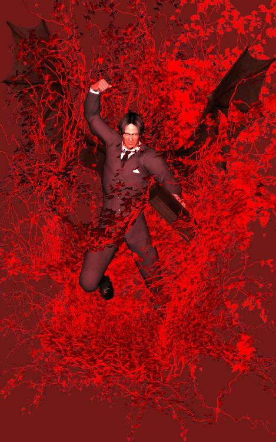
ドゥームゲートの回線切断は本当に時間ぴったりで、最後の最後の瞬間に押したスイッチが有効だったかは、とうとうアザミにも分からなかった。
そう、アザミは確かに土地取引のスイッチを押したのだけど、ひょっとしたら切断のほうが早かったかもしれない。なにしろみんながいろんなことを勝手に怒鳴るから、アザミの頭が混乱してどうしていいか分からなくなってしまったのだ。
指先が勝手に動いて、それで取引を承諾してしまった。だけど南方タケルが約束した電子マネーはまだ来ず、騙されたのかそれともやっぱりスイッチを押していなかったのか、さっぱり分からない状態になってしまった。
あまり後味のよくない終わり方になってしまったのは残念で、でもまあ仕方ないかという気分で落ち着いてしまったのが今の心境だ。
だって結局は全部、バーチャルな出来事だったのだから。
『僕はもう仮想社会はやめて、リアルで古着屋をやることにしました』
リュウから届いたメールには、そう書かれてあった。
『アザミちゃんに会えなくなるのは寂しいけど、好き勝手やってられる歳でもないしね。そろそろ腰を落ち着けないと』
人のいいちゃらんぽらんなところが好ましかったのに、リアルで商売なんてやっていけるのかしらと、アザミは少しだけ思った。バーチャルでの商売とは違って、現実世界だとたいへんに違いない。万引きとか泥棒とか税金とか、在庫管理とか客あしらいとか、リュウにそんなことがうまくできるのかなと心配に感じる。
『で、古着屋の話はまたあとからってことにしといて、それよりもさ、あのときの出来事なんだけど、どうしてあの男がアザミちゃんに取引を迫ったか、なんとなく分かったよ』
あのときの出来事とは、最後に南方タケルと土地取引した件のことに違いない。
『これは想像だからもしかしたらそうじゃないかという程度なんだけど、僕の考えを可能性として書いてみるね。仮想社会の運営会社ＤＧジャパンは確かに倒産して消滅したんだけど、ドゥームゲート自体は完全に消えちゃったわけじゃないんだ』
え、どうしてとアザミは思わず口の中でつぶやいてしまった。
『ドゥームゲートはつまり世界全部がコンピュータープログラムとデータのカタマリなわけだから、それはまだそっくりそのままサーバーの中に残ってるわけ。瞬間凍結されたような状態でね。僕やアザミちゃんのキャラも同じだよ』
なるほど、それは確かにそのとおりで、オンラインゲームの場合、キャラクタデータの一切は運営会社のサーバー側に保存される。これはＭＭＯゲームの特性としてデータを一元管理しなければならないという必要性があるだけでなく、データをクライアント（ユーザー）側で勝手に改ざんされるのを防ぐ意味あいもある。ＲＭＴが絡んでいればなおさら偽造されるのを避けなければならないから。
したがってユーザー側のパソコンを丸ごと消去しても、キャラも資産もまったく消えずに全部まだ残っているのだ。仮にサーバーコンピューターの電源スイッチを入れれば、あの世界はまた再び動き出すに違いない。何ごともなかったように。
『で、あのとき不思議に思ったのは、もう終了するはずの世界で、どうして街の建設をまだ続けていたかってことなんだけど、あれはつまり新しい運営会社がもう名乗りを上げていたってことなんじゃないかな。二つ星商事は総合商社だから、当然そういった斡旋もやってるはずなんだよね。
ひょっとしたら二つ星が直営の子会社作って自分で経営するかもしれないし、だって倒産したのは運営会社が他の事業で失敗したせいで、あのドゥームゲート自体は大人気ゲームだったんだからさ。
なにせ仮想社会を丸ごと作るなんて、壮絶なエネルギーとモノ・カネ・ヒトを必要とするわけだから、このままリサイクルせず捨てちゃうなんてもったいないよね。天下の二つ星がそんな無駄なことするはずないだろうし』
事業の分割譲渡ってやつかしらとアザミは思った。会社の優良な一部だけを切り離して他社へ売り払い、その代金を負債にあてる会計処理の方法だ。ニュースや新聞でときどき耳にしたおぼえがある。
ということは......。
『だからさ、二つ星はドゥームゲートを丸ごと買い取って、復活させる前提であの街づくりを進めていたんじゃないかな。
で、めでたく復活させたらまた会員を集めなきゃならないんだけど、すんなり元通りのキャラが集まってくるかというと、そうでもないよね。だってほら、ゴルトがパアになっちゃったり、物や土地の相場が崩れちゃったりしてみんな怒ってただろ。その怒りを静めて、なおかつ元通りの活気ある仮想社会にするために、できるだけ多くの会員を呼び戻さなきゃならないんだ。
つまり僕が言いたいのは、旧会員をたくさん引き戻すために、キャラも資産もそのまま復活させてくれるかもしれないってこと』
キャラも資産もそのまま復活ってことは、じゃあゴルトも復活するのかしらとアザミはあわてた。あの八十七万ゴルトは結局どうなったんだっけ。というかアザミの土地は結局八十七万円になったのか、それとも仮想土地のままだったのか。
『ただしゴルトの復活はないんじゃないかな。というのはゴルトは円と直結してるから、それを復活させると新運営会社が大損しちゃうだろ。ゴルトをさっそく円に換金されると、その分丸損しちゃうわけだから。
だから新たに会社がもうけるために、ゴルトはちゃらにして、新しい仮想通貨を普及させるはず。利益を追求するのが株式会社の目的で、足を引っ張る負債は切り捨てなきゃだろうしね。
だけどアイテムは別だ。仮想社会が繁栄するキーが様々なグッズなんだから、それぞれの会員が独自に作ったオリジナルアイテムは無条件で復活してくれるはず。でなきゃカナちゃんみたいなスペシャリストが戻ってきてくれないしさ』
そういえばカナちゃんは次の世界へどこかの商社から誘われてるって言ってたけど、ひょっとして次っていうのは新しいドゥームゲートのことで、商社っていうのは二つ星商事のことだったのだろうか。
『そうすると、問題は土地なんだ。いいかい、土地の処理をどうするかが大問題になる。ドゥームゲートが繁栄したのも、仮想通貨を媒介として、土地と円が直結していたからといっても過言じゃあない。
だから土地の相場システムはそのまま継続されるはず、ＲＭＴを含めてね。問題は、だからこそ旧会員が所有していた土地をどう処理するかが重要になってくる。つまり土地の権利の引継ぎを旧会員に認めるか、それとも土地もゴルトと同じく無効にして取り上げてしまうか、どう処理するか、なんだ。
へたなことをすると旧会員から猛烈な反感を食らって、せっかく復活させた新ワールドもうまく運営できなくなってしまうかもしれない。それは新会社にとって大損になるわけ。ドゥームゲートに深く絡んでる二つ星商事にとってもね。
好評だったシステムをうかつに変えるとゲームバランスが崩れてしまうから、たぶんＲＭＴを含めた土地と相場のシステムは同じに設定される可能性が高い。仮想通貨の呼称を表面上変えるだけにして。
するともしアザミちゃんの土地がまだ残っているとすると、最初は五百㎡かける十新仮想通貨（仮にＧとすると）から出発して、五百Ｇくらいまで相場は戻るんじゃないかな』
五百㎡かける五百Ｇで二十五万Ｇか......。
でもちょっと待ってよとアザミはあのときの記憶を思い出した。世界が終了する直前、あの権利書をちらっと見た限りでは、オレンジ色に塗りつぶされた範囲は膨大な面積だった。
オンダ万次郎が計画書で見せてくれたレースサーキット場は本物の野球場くらいの大きさだったけど、あの塗りつぶされた範囲はそれより十倍以上大きかった。しかも区画全体にオレンジ色が点々と飛び散って、二つ星商事が建設中の未来都市の中にまで深く食い込んでいる感じがした。
地上げ屋が商社に対抗して土地を取得していたわけだから、あの区画全体の四分の一ほどはあったんじゃないかしら。正確な大きさはもう分からないけれど、でもたとえば甲子園球場の大きさをインターネットで調べてみると、敷地面積の大きさは四万㎡くらいだそうだ。
仮に四万㎡かける十Ｇで計算すると、四十万Ｇでたいしたことないわねとアザミは思った。でも十Ｇじゃなくて五百Ｇだと、単純に考えてその五十倍だから二千万Ｇになる。これだとそこそこの大金だ。
しかもオレンジ色の範囲全部がその十倍だと仮定すると、二千万の十倍で二億Ｇ。ひょっとして一㎡五百Ｇじゃなくて、あのときオンダ万次郎と取引したときみたいに一㎡千四百五十Ｇで計算すると、なんと五億八千万Ｇになる。
一Ｇイコール一円なら、計五億八千万円がアザミのものに......。
そこまで考えてアザミは苦笑した。勝手な思惑で計算してみたらどんどん金額が膨らんでしまう。取らぬ狸の皮算用とはこのことかもしれない。現実にそんなうまくいくはずがないのだ。だってすべては仮想社会の出来事なのだから。
夢と同じ。
『でさアザミちゃん、メールが長くなっちゃうから、ＲＭＴの話はもうやめにして、本題に入るよ。僕の家の古着屋の話に戻るけど、気が向いたら一度遊びにおいでよ。店の隅っこにコーナー作って、Ｔシャツ飾っとくから。ほら、例の子ブタのＴシャツ』
ああ、あのＴシャツね......。
初めて二人が会ったとき、アザミの足と視線をなぜか突然止めさせたのは、可愛らしい子ブタのマンガだった。素人っぽくちょっとぎこちない感じのする、でも妙に愛嬌のあるＴシャツだった。
『リアルで作ったからさ、今度は本物だよ。本物の店に本物のＴシャツ』
本物という言葉に、アザミの胸がなぜか苦しくなった。
『場所はさ、店のホームページ作ったからそこ見てよ。山手線の駅からちょっと歩かなきゃだけど、そんなに遠くないし。恥ずかしかったらさ、黙って来て、黙って帰っちゃってもいいからさ』
まだお互いにリアルの姿は知らないのだ。様子だけ見て、ただの客のふりして、最後まで知らん顔で通すこともアリなのだった。
『店の奥に五十すぎのオッサンが座ってたら、それは僕のオヤジだから勘違いしないでよ。僕はもうそんなに若くないけど、まだ中年太りとかはしてないから。一応独身ね』
私もとアザミは思った。リュウにはオバサンだと嘘をついてしまったから、内緒で行けば気がつかないかもしれない。
『約束ってわけじゃないけど、ぜひ遊びに来てよ、リアルでさ』
じゃあねと、リュウのメールはそこで簡単に終わっていた。最後の行にお店のアドレスが書かれている。アザミはリンクが張ってあるらしいそれをクリックしようとして、でもやめた。しばらくためらってからメールブラウザを閉じ、パソコンの電源を切る。
アザミの家からリュウの店まで、電車を使えばそれほど遠くはないだろう。ちょっとくらい歩くのも別に苦にはならないけど、今はまだそんな気分になれそうもない。
暗い部屋の暗いモニターの前で、アザミは一人ぽっちで考えた。
でももう少しして気が向いたら、気まぐれに訪ねてみるのも悪くないかもしれない。だってリュウのお店なんだから。
外の道から、最初は知らん顔して店の中をうかがおう。古着屋だからまずそっちのほうを中心にながめて、それから偶然気づいたふりしてＴシャツのコーナーへ行こう。そうしてあのときの子ブタを探すのだ。あのＴシャツにはおかしな破れがあったけど、リアルではどうするつもりかしら。せっかく新品なのに、お客さんに古着と勘違いされないかしら。
もし店の隅に誰かやせた人がいて、その人がぼんやりと突っ立っていたら、黙って子ブタのＴシャツを手にとってみよう。知らん顔をしたまま、思い切って一枚買ってみるのもいいかもしれない。それでもまだ気がつかないようなら......。
＊
本物のお店で待っているのは本物のＴシャツを着た本物のリュウ。
そして会いに行くのはもちろん本物のアザミ。
そのあとうまくいくのかいかないのか、がっかりするのかしないのかはまだ分からない。けれどそれはとりあえず仮想じゃなくて夢でもなくて、現実の世界の現実のお店でやっとアザミはリュウに会う。
そのとき初めて。
（了）
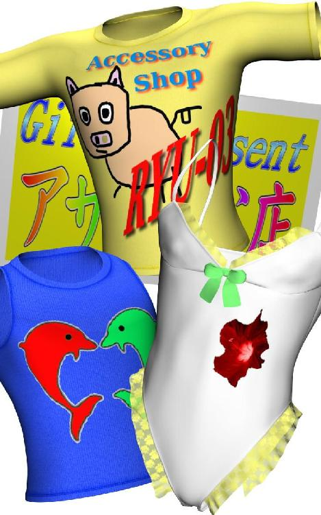
お読みくださってありがとうございます。
ちょっと古い小説かなと思ったのですが、今読み返してみて意外とそうでもなかったかもしれません。
このお話を書いた後に日本でも同じような事件がありましたし、実際の詐欺でも原野商法や計画倒産等、似たパターンが頻繁に起こるようです。
ビットコイン騒動もまだ何かあるような気がしますしね。
よく分からない物には手を出さない、どうしても手を出したいときはまず十分調べて、というのが人生の鉄則だそうですよ。
＊
ところでお手数ですが、お読みになられた方、作品に対するご感想をぜひお願いします。本書に限らず私の他の作品も、アマゾンの感想欄へ一言ご記入いただければ幸いです。
題名 ＲＭＴ ～ロマンティック・ゲーム～
著者 片桐 樹童（きどう）
２００８年２月 初版完成
２０１１年１月 芝川辰美名義で他サイトへアップ（削除済み）
２０１４年６月 キンドル版をアップ
本作品の著作権は作者本人に帰属しております。
『魔宮譚 ～裏返る人面の都～』平城京物語３
古代伝奇長編小説。８５０枚。
腐肉の魔物が人面を狩る。古代史上究極の皇都・恭仁宮を襲う異国の魔神とその眷属ども。藤原氏北家の八束と吉備真備の妹・由利は、銀河の都を守れるのか。
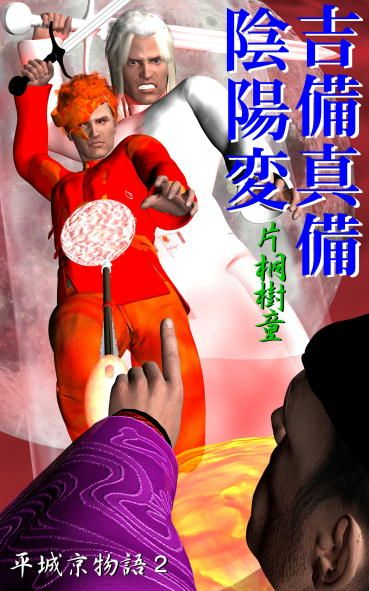
『吉備真備・陰陽変』平城京物語２
古代伝奇長編小説。７００枚。
左大臣長屋王の罪に疑問を抱いた元正上皇は、唐から帰朝した吉備真備に真相解明を依頼する。謎の美少女阿礼女とともに、真備は次々と襲い来る敵に呪禁と陰陽の秘儀で挑む。
『皇女夢幻変（古事記呪殺変 改題）』平城京物語１
古代伝奇長編小説。５００枚。
和銅五年（西暦七百十二年）平城京内裏において呪われた書物「古事記」が選上された。無垢なる心の持ち主・元明女帝は、最愛の孫・首皇子の命を守れるのか。
『臨、祈り』皇女夢幻変（古事記呪殺変 改題）の前日譚。
古代短編小説。８５枚。
飛騨の山奥で祈り続ける僧のもとへ、一人の美女が訪れる。大津皇子の謀反事件の真相を問う彼女は、いったい何者なのか。
『常世虫』
古代伝奇長編小説。３２０枚。
舟形の祭壇から掘り出した娘・翠とともに、解部を装う蜂麻呂は常世の扉を開けることができるのか。作者渾身の一作！
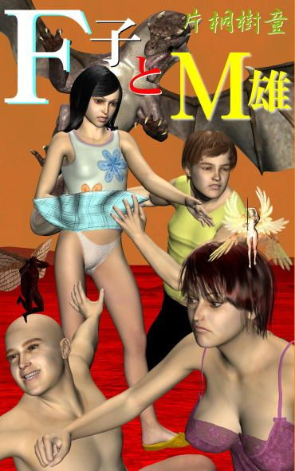
『Ｆ子とＭ雄』
ファンタジーホームコメディ短編小説。約１４０枚。
語り手の「私」ことＭ雄は、Ｆ子のパンツが巻き起こす人類滅亡の危機を目撃する。そして失踪したＮ太が現れたとき、彼が最後に選んだ行動とは......。
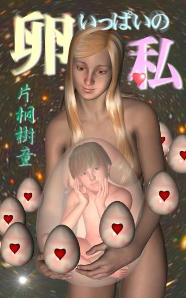
『卵いっぱいの私』
妄想コメディ中篇小説。（１８禁）２００枚。
冴えない大学生の「僕」に、なぜか夢中の美少女「リアルちゃん」。これはいったいどうしてなの？（大人向けコメディという意味での１８禁です）
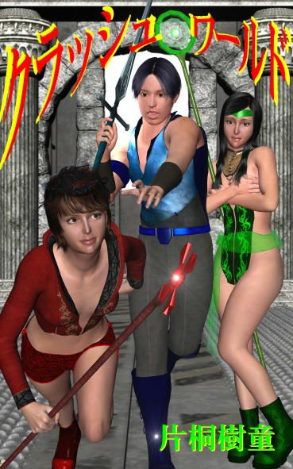
『クラッシュ・ワールド』
ヴァーチャルＳＦ長編小説。３５０枚。
ＭＭＯＲＰＧ絡みの連続自殺事件を内偵するよう依頼されたライターの「私」は、ゲーム女「トンビ」、ゲーム廃人「小町」らと、死のヴァーチャルゲーム世界へ潜入する。
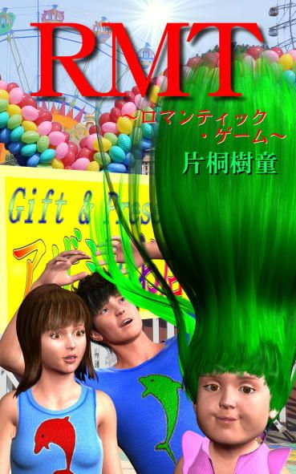
『ＲＭＴ ～ロマンティック・ゲーム～』
ヴァーチャルＳＦ中編小説。２２０枚。
巨大仮想社会へ紛れ込んだ普通のＯＬアザミは、お調子者の露天商リュウとヴァーチャルデザイナーのカナちゃんに巻き込まれ、土地成金を目指すのだが。
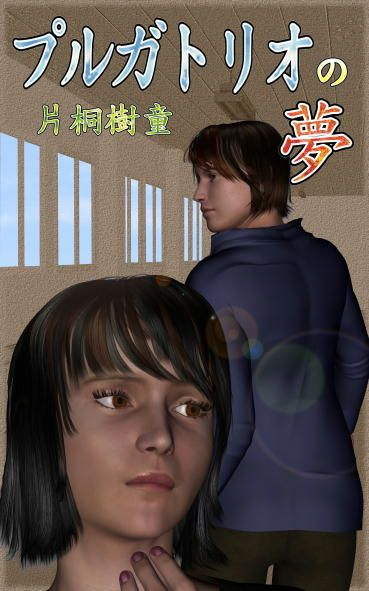
『プルガトリオの夢』
近未来ヴァーチャルＳＦ（あるいは純愛ファンタジー）中編小説。２１０枚。
プルガトリオとは煉獄のこと。末期ガンを宣告された主人公は、冷凍睡眠世界へ勧誘される。そこは夢の理想郷なのか、それとも生前犯した小さな罪を償う場所なのか。
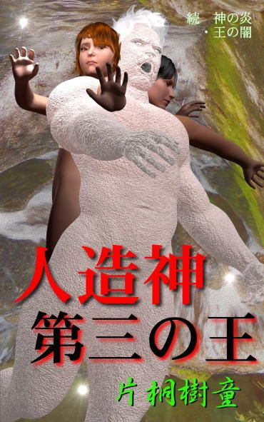
『人造神・第三の王』続 神の炎・王の闇
近未来ＳＦ長編小説。５５０枚。
壊滅後の狂った世界をさまよう二人の男女。新月として蘇った怨王は夜見速彦を自らのしもべと化し、囚われた天髪美樹は地下遺跡で眠れる人造神を発見する。
『神の炎・王の闇』
近未来ＳＦ長編小説。４８０枚。
Ｋ鉱山地下へ極秘裏に設置された秘密組織に超能力者たちが集められた。太陽と巨大彗星に潜む異形の超越存在から、地球を守るために。
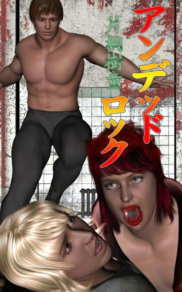
『アンデッド・ロック』
西欧ダークファンタジー中編小説。２２０枚。
舞台はおよそ百年前、イギリスの寂れた館を訪れた主人公の日本人青年は、親友の死に隠された陰謀と莫大な財宝を封じた不死錠の謎に挑む。
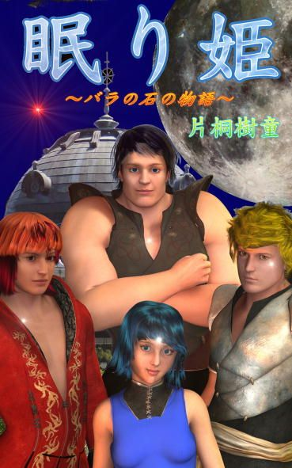
『眠り姫 ～バラの石の物語～』
中世ヨーロッパファンタジー長編小説。５２０枚。
孤児ブラウと異端審問官ヴァイスが、錬金術とバラの石の秘密、奇妙な惨殺事件の謎に挑む。